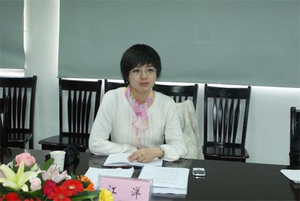

一朝忽觉京梦醒，半世浮沉雨打萍——衣俊卿小n实录
人物照片 comments- 一、并不愉快的相识
- 二、进站前的交往
- 三、霞多丽：第一次吃饭
- 四、第一次开房：互赠礼物
- 四、“中宇门”：开题后的风波
- 五、身体真正在一起了
- 六、情人节当天“被离开”
- 七、饮血泣泪再相逢
- 八、努力平复创伤
- 九、哪里跌倒，哪里爬起
- 十、缘何再生枝节
- 十一、再续“情人节”
- 十二、总结
- 十三、“8.30”之后续
- 9月份
- 10月份
- 11月份
- 附录
序
1.人物关系
我：真实姓名常艳，1978年5月2日生，民盟盟员，2010年7月毕业于中国人民大学马克思主义学院，获法学博士学位。现为中央编译局博士后，曾供职于山西师范大学政法学院，副教授。
衣俊卿：1958年1月生，中共中央编译局局长，曾任黑龙江大学校长，黑龙江省委宣传部长，2010年2月任现职。
杨金海：1955年生，中共中央编译局秘书长，我的博士后合作导师。(激衣的情妇，想从中渔利）
曹荣湘：原为中央编译局人才处处长，后被提拔为编译局办公厅副主任。（我最后和曹荣湘疯狂地跳）
董莹：编译局人才处博士后管理办公室工作人员。(江洋、董莹、刘海静、张欢，一个个以不同方式伤害过我的，我要把那些小鞋一只只找回来。)
张萌萌：中央编译局战略所博士后，英国海归博士，我的室友。


江洋 谢海静 姚颖 魏海生 俞可平 王学东
下面的人物在我的“故事”里出现时间较晚，但起了非常重要的催化作用，所以不得不列出来。(马瑞、武锡申、刘仁胜、张治银、刘长军、我（常艳）以及杨金海、张文成。下午参会的也便是上述人员。12.8.29)
张文成：中央编译局离退休干部办公室主任。（张文成肯定是力捧江洋，...没有张文成等人的“催化”作用，我真下不了决心。）
武锡生：中央编译局副研究员。(“泰山压顶岿然不动，该做的早做完了！”——武锡申语）
刘仁胜：中央编译局副研究员，江洋的师兄，段忠桥老师的学生。（“最近谈论这个问题是很多，杨老师是怕一旦说开了影响太大。”——刘仁胜语）
马瑞：毕业于武汉大学，中央编译局战略部副研究员。（马瑞说道，“可不高呗，那可是高级别的，多令人羡慕啊！”4）
张志银：毕业于北京大学马克思主义学院，现为杨金海老师的博士后。(张治银、刘长军对我说，你别急，你的那些课题做不完，我们可以帮着你做，到时候都写你的名字。）
刘长军：毕业于人民大学马克思主义学院，现为杨金海老师的博士后。（刘长军去餐厅帮我带了几样菜送到我房间，谢谢他了，好人会有好报的。4）
2.几点说明
其一，本文不是小说，是自己的亲身经历，以第一人称叙述；但各位看客可以把它看作一个“多情”之人写的小说，没有关系，我不在乎看客对我的评价。
其二，如是自己的主观感受，我会在文字上予以注明，否则都是对真实情况的一种再现；您可以质疑事件的真实性，但我有保留尽量客观、真实陈述事实的权利。
其三，本文爆出丑闻，便有承受各种不良后果、法律责任及社会效应的心理准备，涉及事件的当事人愿意起诉我的，我在等待官司及人身攻击。
与衣老师（这里，我还是叫他衣老师吧）相识始于2011年3月底。此前，虽闻其大名，但因为研究领域并不十分契合，对他的学术倒不是太了解，更谈不上对他的为人处世的认知了。如果时光倒流至2011年3月29日之前，我与他都是快乐的，至少在“我们”的事情上，都不需要耗费精力。
清晰地记得，面试那天，我穿着亮面灰色中袖西服，白色衬衫，高跟鞋，戴着镶了些水钻的细细的发卡。从西西友谊宾馆出来前，在房间里对着镜子打量着自己，嗯，不错，漂亮并知性、干练，外形没有问题。穿过辟才胡同的红绿灯路口，一阵风刮来，有些微凉，毕竟是初春，路上像我穿这么单薄的人不多。我下意识地加快了脚步。
到了编译局，跟门卫说是来面试的，就顺利地进来了。博士后工作站的工作人员董莹给几十位前来参加面试的人员说了些注意事项，我们大家便在一个会议室里候着。
由于报考的是脱产博士后，所以面试的次序比较靠前。我记得一进会议室的门，我对着各位面试评委很友好而谦和地笑了下，也看到了衣老师的笑容。面试环节，我一贯不卑不亢，陈述了自己以往的研究积累及未来的研究设想。这里不得不提的是，我特意提了一下姜海波（黑龙江大学哲学与公共管理学院副教授，衣老师的博士生，当时还未毕业）以拉近和衣的关系。虽说是有套近乎之嫌，但我也说的是事实。
我博士论文写的是《恩格斯晚年社会发展理论研究》，在毕业半年后即在中央编译出版社出版，并于2010年桂林会议上送给了很多学界的前辈与老师。在桂林漓江的游轮上，我与姜海波很煞风景，面对着如诗如画的漓江风光，我俩竟然聊着学术。他建议我下一步可以做一些恩格斯文献方面的整理与研究工作，这个方面目前做的人比较少。
从桂林回来后，一方面要准备国家社科基金的申报，一方面要提交博士后报名材料中的研究计划。我就写邮件给鲁克俭，他说就按照姜海波说的这个方向做。鲁给我定了一个题目“恩格斯著作的写作、出版及传播研究”。
拿着申报社科基金的论证初稿（写的比较详细），我给各位评委老师陈述了自己未来的研究计划。印象最深刻的是，衣老师一听到我的选题是受姜海波及学界其他老师的启发而来，一改先前对我的友好态度，很不客气地转头对柴方国（编译局马列部主任）说：“这不就是咱们做的那个嘛！”其实，衣老师承担的国家社科基金重大招标“国内外马克思主义文献的典藏与整理研究”，我并不知道，而且我的论证角度与他们不一样（这是后来我知道的）。当时，只是觉得他在嘲笑我，题目太大了。这个我现在也承认，但我坚信，之所以能拿下这个课题，自然是我的论证有自己的独特与精到之处。
在面试中还有一个细节记忆犹新，这个细节衣也在后来与我二人所开的“卧谈会”中提到过。他说：“你们单位能放你吗？”我回答：“我们是有协议的，只要赔钱就可以！”衣说：“拖家带口的！”我当时马上回应：“我家里边条件挺好的，在我的工作没有落实之前，家里人是不会过来的！”我心里当时想的是，按照政策有些单位是会为博士后的配偶解决借调等问题，我不需要你们为我考虑这个，我自己克服困难就是了，不就2年嘛！
至于衣老师为什么会说这个话，我到现在也是懵懵懂懂的。总之，当时的感觉非常不好。我与他素昧平生，怎么在听到姜海波的名字后就一改态度而刁难起我来了呢？！因为这次不够友好的初识，使得我们后面会有联系（我去洛阳开会，一半是为与他改善关系），为后来有故事发生埋下了伏笔（我写到这里，很后悔，不去洛阳多好啊，不和衣一步步走近多好啊！）。
面试中，所报导师杨金海由于父亲去世回了河南老家，其余几位导师是：衣俊卿、魏海生、柴方国、李惠斌、鲁路、薛晓源。
魏海生问我如果脱产的招不了还读不读？我客气而委婉地笑笑说：“那可能就不读了。”（其实，就是说脱产的招不了就不读了，意思已经很明确了。）
写到这里再插一段题外话：
杨金海在面试前给衣俊卿说了自己的倾向，脱产招那个男生，别招我，怕我将来要在北京找工作，很麻烦（与我一同报考杨老师脱产的只有那个男生）。也就是说，在我进那个会议室的门之前，结果是定了的。
杨老师在我报考前，一开始说让我读在职的，后来说两种都报，意即总有在职的保底。我报考杨老师的博士后，并非是慎重考虑的。2010年7月份出书联系了杨老师，纳入他主编的那套“马克思主义经典著作研究丛书”。在请他和鲁克俭吃饭时，话赶话说到了博士后的事情。后来在11月份桂林开会时，我又说到到底报哪种类型时，杨还是坚持是在职的。我就有一点小不高兴了，觉得这人这么不利索。我一直在想，读在职博士后，没有多大意义，反而多了一些约束。而我已经说了要报考人家的博士后，如果不报的话，岂不是把人得罪了，将来也没法再联系了。那怎么办呢？不是说脱产的名额少吗？不是招不了吗？那我就只报脱产的，招不了正好，又不用读了，还不得罪人。不失为一个万全之策。况且，当时有几家别的单位的老师，主动说让我去他们那里读博士后。
抱着来京玩两天，来编译局跺一脚认识认识衣俊卿是何方神圣，也让大家认识我一下的态度，参加了博士后面试。
我靠自己的实力被录取为脱产博士后。从此，我的噩梦也便开始了。
与衣的初识，给我留下了费解的谜，为什么他要为难我呢？我以后要来这里了，怎么能改变他对我的“不良”印象呢？带着些困惑，带着些委屈，我结束了这次北京之行。
进站前的交往，主要指在国家社科基金评审一事上与衣的联系。
4月份，马哲史年会即将在洛阳召开。我有点不想去了。在与姜海波打电话后，他说衣老师去。我就想，说不准可以修补一下面试时的小不愉快。
“中外比较视域中的马克思主义研究”理论研讨会暨中国马克思主义哲学史学会2011年年会，4月16日至19日在河南科技大学召开。
16日早餐时，无意间看到衣俊卿。他吃完后从我身边走过，我很自然地起身与他打招呼，他认出我来了，说：“你来了啊！”早饭后回到房间，我给姜海波打电话问他衣老师的手机号。问到后，我给衣打电话，说自己想去给他送书。他说：“一会你到会场偷偷给我吧，这会儿我在改一个稿子。”
在开会前，他与吴晓明等人站在那里聊天。我就过去把书送给他了。会后照相以及上午的会开完后，我们有过些目光的短暂交流。看来，这次洛阳并没有白来，他对我的印象应该是不错的。待了一天，我没有再参加第二天的小组讨论，也没有参加考察，坐大巴匆匆赶回家，还有一大堆的课要上呢！
5月份的样子，具体哪天记不得了。我得知自己通过了国家社科基金评审的初审，兴奋地在电话中叫了起来。马上要上会了，材料在编译局李兴耕老师手里。我给导师杨金海打电话请他帮忙打个招呼，杨老师拒绝我了（我当时也不知道，觉得杨老师很不近人情，现在想来，可能是他有自己的难处吧，兴许我让他说话的人是他的对立面呢！）。
尽管有其他的老师在帮忙，问题也不大。但我此时总觉得自己已经被录取为编译局的博士后，应该“求助”于衣。晚上，我给衣发信息，请他给李兴耕说说我的事情。第二天一早，衣说给韩庆祥说了，李未联系上。其实，我已经给韩老师打过电话，韩老师和李兴耕在一组。在桂林，与韩老师以及他的夫人聊过，他有印象的。要知道衣是给韩说，我就不给他说了。让韩老师觉得我这人这么事，好像不信任他似的。自衣给韩老师说过我后，韩老师就再没有就课题一事回复过我，可能直接给衣说了吧。
等到我得知自己会评也过了时，发信息给衣表示感谢。他发了一大段给我，说在此前韩已给他说过了。衣还在信中嘱咐我出去不要乱说，还说我素质不错将来能有较大发展，有什么问题同他联系，等等。我心里暖暖的，觉得自己去洛阳跑一趟没有白费功夫，这不这件事情上他就帮我了，而且还拉近了彼此的距离。
其实，即便不找衣，会评也能过的。但我想，这是我们交往的一个借口吧。
6月的某一天，我接到博士后办公室董莹的一个电话，问我最近来北京吗，说转户口的事情需要我自己跑一趟。我说，刚好也有别的事情，我去一趟。
6月21日晚上，给衣发信息说自己来北京了，想去拜访他。发完信息后，手机在房间充电，我就去西单弄头发了（发梢有些黄，怕给人印象不好，去染黑了）。两个小时后回来，发现他发了两条信息，说自己出差刚回来，明天办公室见。
第二天，6月22日，我一大早起来去西单，准备给他买个什么贵重点的礼物，以表示感谢。商场开门都很晚，约的是下午2点见面。转了半天也没有看好合适的东西，因为那个时候买东西怕人家觉得有特殊含义。如领带、皮带等似乎有感情因素在里边，我们还不熟。
我打电话问姜海波买什么好，他说直接给钱比较好。那给多少呢？我一直犯愁。况且，课题的事情，还是有别的老师起了主要作用的（要不然我怎么会知道自己过了初评呢）。想来想去，我就拿了一万的现金去了他办公室，先试试水吧。初次在一起聊，我倒也不紧张。只听得他说，来了后参加典藏的课题，出国方便，编译局人际关系复杂，要低调，等等。他还说：“以前我们拿课题，都是给10万，今年青年项目都是给15万了啊！”（要是现在的我，他说这个什么意思，我肯定是清楚的了，但那会，我根本什么也听不出来）临走前，我拿着一个纸袋子（内装1万现金）给他放到茶几上，说这是我的一点心意。他过去看了一眼，然后说你这是干什么呢。我说只是自己的一点心意，就走了。
户口的事情办了，衣老师也见了，我急匆匆买回家的火车票。没有买到卧铺，就直接买了张硬座，先上车再说吧！
6月23日，那天记忆深刻，是北京60年一遇的大暴雨。下午4点钟从宾馆出来，走了不到50米，天就下起来雨。情急中打了辆黑车去西站。雨越下越大，白昼如夜，车行驶在长安街上，一路堵。司机师傅就找小路绕，绕到哪里堵在哪里。车子在水中漂着，我的心也在漂着，司机本来要50元拉个近活儿赚个轻松钱，却没想到遇到暴雨，他情绪烦躁，嘟嘟囔囔说自己没有买涉水险。我默不作声，心中不仅对当天是否能赶上火车充满了担心，也对眼前这个陌生的黑车师傅有些害怕，虽然他看上去倒不像坏人；几乎看不清楚车窗外的景象，雨水铺天盖地而来，街上的路灯、车灯、雨幕混沌一片，广播中也对暴雨及路况进行着实况播报，我觉得自己太渺小了，心中生发出对未来的一种不确定感，对人生的隐隐的忧虑。
“漂”在暴雨中，心中无限感慨；与我同样经历2011大暴雨的人们，记录了那天的情境。等我回到家中，从网上看那天的北京时，才发现雨真的大的离谱。所幸在发车前，我跌跌撞撞赶上了火车，浑身湿透了，我给了司机100元，也耽误他时间了。本来没有买到卧铺票，上车后很好补票，有许多人因为这场雨而误了车。
写到此处，不得不说说前几天的61年一遇的大暴雨。2012年7月21日，那天中午与衣老师在文府大厨吃过饭，回来的路上下起来雨。但雨下的最大的时候，我在宿舍，没有注意窗外的情形。
同样是暴雨，身处的位置不同，心理感受便也截然不同。
2011年7月进站，期间与衣老师发过几条信息。他总出差，约好一个周日见面。8月21日，我们第一次在一起单独吃饭。他让我去西单大悦城等他。我纳闷了，大悦城也是包罗万象的，有吃有住有玩，我怎么等呢？正不知如何是好时，他来电话了，说在鄂尔多斯大厦旁边的半地下的霞多丽日本料理店，他在路边接我。我打车到了，远远看到了那个高大的男人。
第一次吃饭，他点的，喝的是日本清酒，一共喝了2小壶。期间，主要围绕一个话题即怎么把我的档案从原单位（山西师范大学）拿出来的问题。
他给我出了个主意，找山西省的领导令政策，请令给武海顺校长打招呼。而山西的这位领导，我又不认识，他的点子是：我拿着自己的书去拜访局里的一位老先生（顾锦屏先生，原常务副局长），请他写一封信给省领导，我带着这封信去找人家。或者，他说请导师杨金海出面介绍我与这位领导认识。（原来的我多傻啊，连别人的推辞都看不出）
提到令，他兴致上来了，说虽是出身平民，但也是很有风度气质，前一段在与局里合作拍电视片《走进马克思》（或者《走近马克思》？这个我没有关注过，不知是哪个字）之类的。吃饭期间，衣老师问我副教授到底评了没有，他说评了最好，没评也没关系，可以在站期间评，只不过出站后去出版社挂一年，一年后留在局里，等等。他还说，在西单这有套房子也不错啊。还提到：“我不像学界的有些老师，学生送个3、5万的就招个博士生。”（我那个时候，觉得他好正直啊；现在想来，自己根本不会听人家的潜台词，即3、5万少了，至少要10万8万才行）
第一次吃饭，我是想判断他想要什么？财还是色？天下没有免费的午餐，既然我想来北京，想来编译局，就应该付出代价（博士毕业就死心塌地回原单位了，因为“热爱”学术，也被一堆人夸为是棵好苗子，我就真以为自己可以出来奋斗一番的）。这是游戏规则。写到这里，我有些石化了。突然想起一句话，那次他说的“什么样的女人没见过”。我那个时候，真是蠢得如猪。他摆明了就是要钱的，这也从我与他第一次的交往中先拿1万探探路，可见一斑。可是，我又郁闷了，也不是，他看我的眼神中带着些别的含义，对男人是否对我有好感我还是能作出判断的。
这次吃饭快结束时，他说办好这些（即调档案过来编译局）也得两个月的时间，到时候他再请我吃饭。我说好。
喝的不少，我很兴奋，觉得自己是被上帝垂青了的女子。他帮我打上车，临上车前我晕晕乎乎说让他抱抱，他说这儿人多。回到宏英园住处后我兴奋地厉害，和衣而睡。满脑子都是对未来的美好憧憬（似乎有事业的、有感情的）。
那天刚好有在京高中同学的聚会。睡得差不多酒劲过去了，我起身出发去朝阳区参加聚会。那天自己真美啊，因为早上为了见衣老师，特地用卷发器弄了头发，又补了补妆，是挺迷人的。
见到了高中时代的同学们，他们既是我的同学，也是我爱人的同学，我们俩同学、同桌、同年同月同日。挺多人不知道我来北京，前几年我在人大进修、读博，与大家联系也不多。始终在心里有一个情结（别人是在北京工作、生活，而我只是过客，不想与大家联系），而现在，我要来北京了，要开始美好生活了，我当然可以与同学们常聚聚。带着中午衣老师给予我的美好指向，我“自吹自擂”几句：这单位是中直机关，有房子。言语中好像我不是个博士后，而是已经调到了这里工作，好像“美好”的未来在向我招手了。
霞多丽之后的第二天，是周一，我想杨老师可能事情多吧。我就等了一天，周二上午，我去找杨老师谈我的档案问题。说了衣给说的意思，我一开始没有提起衣。后来见杨老师没有反应，我就说这是衣老师的意思。杨这个时候打电话把曹荣湘叫来，一起商量。在曹来之前，杨说：“这事就不要麻烦省里领导了。”我当时还不爽，杨老师怎么一下子就把路给堵死了呢！
曹荣湘来了之后，我们三个人在一起的谈话，你一言我一语进行着。本来我的目的是要请求把档案调过来，可说着说着怎么变成了把我转成在职的意思。为什么会这样？衣说的办法到了杨老师这里，完全就没有被提上议事日程。我的眼泪快出来了。强忍住泪水，结束了这次谈话。
这只是进入编译局后的第一次尴尬，其余的后面再叙。
回来后，越想越不是滋味，觉得既然没有人愿意帮助我调档案，也即没有要调我来的意思，我又何必在这里浪费时间呢？一气之下，我填了一份退站申请，让室友在她的打印机上打了2份出来。
第二天，我拿着这个申请去找了杨老师，说自己胃疼，身体不适，无法完成博士后的研究工作，申请退站。杨老师哼哼哈哈，说不要退，关键的问题避而不谈。之后我就回家了。退站未果。
秋天到了，天气微凉，想着送衣老师一个礼物。在西单几个商场也没有看到合适的，专门打车到人民大学附近的双安商场。看好了一件墨绿色暗格的羊毛衬衣，模特穿着非常漂亮，我就买了。结果给他发信息说想拿给他时，他说要出国，马上集中，没有时间了。他国庆回来，紧接着就是假期。之后他又回了趟哈尔滨。
2011年10月14日，去太原开第六届国外马克思主义年会。衣老师也去了。晚饭后两个人一直在短信，也有些很暧昧的，明显感到他希望和我有点什么。会议名册上的房间号，他的是不对的。他告诉我在哪个房间，我在与他回复短信的几分钟之中做着激烈的思想斗争：明明有求于人，人家已经挺热情了，咱再不上套，可能不好。后来，我想豁出去了，就鼓起勇气敲了他的房门。聊天中，他说本来这次要介绍我与省内的相关领导认识的，看来也没有机会了。还说这里（晋祠宾馆）是不是政府接待中心啊？离市里远不远啊？我记得自己穿件枣红色的高龄薄毛衫，袖子是镂空的那种，我坐在沙发上，几乎把半个脸都要躲进高高的衣领中了。我很紧张，搞不清楚他到底要表达什么，而且感觉自己冒昧地跑到他房间也不妥，很尴尬，说了一会儿落荒而逃。
第二天在会上我看见他就装作看不见，觉得自己很没有面子。中间休息时，周凡说我们大家同衣老师合影留念吧。他示意我站在他旁边，我没有。一来，我个子没有那么高，站到中间不好看；二来，我想起昨晚的事情心里就说不出的尴尬，觉得自己竟然送上门去，算什么啊，在他那里我根本不重要。想到这些，我根本不想离他近了，照相中也用一种自嘲的心态与表情来面对镜头。不过，这倒是我和他的唯一一张人数较少的合影了（其余的都是大会合影）。
他第二天下午就先离会了，说是要回来给中央党校的一个省部级班上课。我在太原会后没有参加考察，直接回家待了几天。回京后，俩人约好见面。
10月23日，西西友谊开房见面，这是第一次开房。
有了我们之前比较频繁的短信交流，我觉得衣老师是想与我有点什么，可我又没有十分的把握。那天上午，我给衣老师短信说我在西西友谊等他，那个楼上有不少饭店，他想吃什么我先去定位子。（其实，此时我已经打了携程的电话，定了房间，但从我这里走到酒店得差不多20分钟）。我出发了，等我到了酒店大堂，还没有去前台确认订房时，我收到了衣老师的信息。问我到了吗？我说到了，继续问他想去哪家吃。这个时候，他说有事情不能和我一起吃饭了。我差不多确定他想要什么了。我说，我在酒店大堂，在办手续。他很快地回复说，好。就是几分钟之内的事情，他马上就又有时间了。很明显的。
他到了，一进门我也没有觉得有什么不妥，毕竟在太原那晚已经尴尬过一回了。我拿着买给他的那件衬衣，在他身上比量了一下，大小应该可以穿（可是，我却从来没见他穿过，可能是没有机会或者他不喜欢吧，平时上班都是西服、衬衫什么的，那件有点花哨了，第一次买我也没有经验的）。他送给我一条施华洛世奇的项链和一对耳坠，是在出国考察时在免税店买的，深蓝色的，很漂亮。我也常常送老师们礼物，孝敬老师们，可从来没有人回赠我礼物。而衣老师竟然给我礼物，还是这么女性的首饰。甭管什么缘由，我都感到幸福极了！我跑去洗手间，对着镜子戴了半天也没有戴上，就叫他过来给我戴上。他说自己眼睛都花了。我没有接下去说。
我还拿着电脑，在改开题报告。我进站前将在站所需的各种表格都下载好了。开题前就提前填好了。就在那天，董莹打电话说我的表格与别人的不一样，需要重新填，我才不得不拿上电脑到酒店的。可能是后来挂出来的开题报告表格与我之前下载的不一样。（这一细节，他在之后几天开题中，竟然说出来。我们那一组，只有我一人是这样，他就问董莹是不是咱们有两种表格啊，咱们有的同学用的是另外一种呢！）
我带了点洗好的小西红柿，吃几颗，聊着。
那次，记得他说过这样的一些事情：
有两次婚姻，两个女人的性格截然不同，一个飞扬跋扈，有什么事情了闹得不行；后面一个，生气了就是不理人。
问我知道“洗衣粉”吗？我说不知道。他说局里人都知道。（现在我知道了，就是喜欢衣俊卿的粉丝）
说他有个女学生在美国，也巧了，他一来北京，那个学生也来了。现在在美国。（我当时好像知道是朱丹，我平静地问他，很优秀吧？他说，应该是吧。）
衣老师还说，江洋也是刚评了副研究员的。说：“你这下进了国家队了。”
他坐在床边上，我坐在桌子旁的椅子上，对着电脑；后来，他坐在椅子上，我坐在床边上；有一个细节很清晰：我坐在沙发椅上，身子靠的比较低了，衬衫的扣子也开着2、3颗。尽管我没什么可露的，但也有些春光。他手过来摸了一下我的大腿，隔着牛仔裤，我似乎没有感觉到他的情欲与温度。我没有回应。
他去了下洗手间。等回来时，我在对着床边的镜子照着。他说，女性就是喜欢自我欣赏啊。（我听了觉得不高兴，在他眼里，我就是代表一个性别而已！我是作为个体而存在的独一无二的女人，我可以不优秀、不漂亮、不吸引人，但一定是不可复制的，而不是众多的女人的抽象——女性）那天，我穿着白色收腰长衬衫、修身牛仔裤，米色风衣外套在房间里脱了。很干净合体，不失为一个清秀的女人。太原会议前，专门做了个齐肩的韩式发型，可是每次自己不太会打理，回家后将头发接至及胸的长度，烫了卷。
要是现在，我就知道在他去洗手间的时刻，我钻到被子里，一切就顺理成章，都不尴尬了。这样的话，也许开题后的命运就是另外一番景象了。当时，我不敢，尽管我心里想这个男人想的要命，可我有尊严。他从洗手间出来，我还是呆坐着，没有行动。
又不知聊了些什么，他接到个电话，要走了。我也没有挽留。临出门前，他意味深长地拍了拍我的肩膀。我只是微笑着开门让他走了。
就这样走了，我心里没有多想什么。
我当时的原则是：我幻想着这个男人，可以对他好，但不能做没有尊严的事情。
我和衣老师两次在房间独处，尤其是这次，竟然又相安无事。他是高兴呢还是不高兴呢？现在我已经知道答案了。如果那天我主动些，开题后，我便不会被人找麻烦再次催问档案。“档案”，一度时间中，成了悬在我头上的达摩克利斯之剑！
10月27日，开题。可以一天都和他在一起，看着他，真幸福。关于开题后的风波及心理感受，将写给衣老师的邮件贴过来。
需要补充说明的再另写。
先说说27号的事情。
早上到了会议室，见杨老师还没有来，而另外两位同门也还没有到，我就自己去杨老师办公室请他下来到会议室。（这个做得没有错吧，对他也是挺尊重的）开题会上，我一边看自己的材料，一边随时记录别的同学答辩中出现的问题或者对我有启发的材料以及老师们的建议与看法。我很少去注视你，因为在那个小环境中，不想在眼神中流露出什么。27号上午的心情素描——一份宁静中舒缓的愉悦（看见了，满足了，不敢有太多的奢望）。
中午，吃饭中没有什么特别的事情。哦，对了，与颜岩无意间说到两个事情：他问我现在与原单位到底脱离关系没有，我回答“脱离中”，他说起蓝江去了南京大学并重新建档的事情；后又知道我去年翻译的那十几万字的书稿与他现在做的翻译是一套书。饭后回宿舍一下子，补了补妆，我想让自己每一次出现在你面前时，都是我能够做到的最佳状态。
下午，继续专心地听与记，直到你喊到我的名字。该我陈述了。没有一点的紧张，原本就打算实事求是地说说自己的想法，开题不是表演赛，只是热身赛，老师们提的意见越多也便越有收获。事实也的确如此！开题后，我的脑子里已经有80%的书稿了，本身我对这些材料也是比较熟悉的。只是原来不知杨老师到底想要我怎样做，或者他要我做的“话语体系”的考证我没有思路。鲁、魏的建议都有直接指导作用，他们一句话我就明白了，省去我很多弯路。但在我这里最“过分”（请允许我用这个词）的也最全面的要算你了。你要对全组的博士后把关，所以，会毫不留情地直面每个人的问题。而对于我，似乎是指导多于质疑，几乎没有质疑。你说着，我不停地用笔记着。说完了，记完了，其实提纲甚至全文都要出来了。说到阶段性成果、最终成果的问题，我解释是因为《费尔巴哈论》、《起源》、《反杜林论》等我现在手头就有现成的材料（也是在做社科基金课题的过程中积累的）。您就回过头去问柴，1版、2版中有无现成的资料等等。当杨老师提到让我做考证的时候，你立刻又回过头对杨老师说不要让我那么做。我当时真的很感动！语言是情绪的直接表露，尤其是在即时交流中。杨老师是我的导师，但几乎没有说上什么话，你几乎是一个人大包大揽地把我的问题就给说完了，该怎么做也给说完了。我就是再笨也都知道怎么做了。
写到这里，回想起那个场景，心里暖暖的。我几乎不敢抬头直视你，因为旁观者一眼就能看到我眼神中的一些东西。我现在只记得自己微低着头，红着脸，觉得脸发烫，嘴角要扬起笑容了，但不敢，于是左手在桌子底下，用大拇指的指甲盖掐着自己的食指，疼了，一直掐着，忍住了那份要从嘴角上扬起的幸福。那可能就是几分钟，多么希望时间就此凝固啊，就像牛顿所讲的时间是条均匀流动的河流、空间是个可以随意取放东西的大箱子，我要祈祷上帝把我送回到那几分钟的时空中。那是怎样的一种幸福啊？怎样的一种感动？这几天以来，无论我的心情波动到了哪个峰值，我都无法忘却那一刻的感受。在场的每一个人只要是心智健全，都能感受到你的态度与倾向性。太明显了！我自作多情了？？不，不会的。结束后，秀敏还跟我说，数我的说的最多了。后来，到了最后一位陈述时，我仍然坐在你的对面。我也在拿笔记着，但几乎不进脑子了。可能思绪神游去了。下午的心情素描——飘在云端的幸福。
开题结束后，秀敏要请我吃饭（我们还挺投缘），当时你的其他几个学生都在场。我坚持做东，其中有一份道不明白的原因（我暗自觉得自己与你很亲近，也许现在算是编外的学生吧）。开题了，该怎么写心里有数了；已经向你表明非来局不可的心迹了，自己知道问题的解决只在迟早了；白色衣领下有两个晶莹剔透的水晶（深蓝与浅蓝的心），带给我愉悦的能量。于是，就喝了点酒。期间，接到姚颖打来的电话，叫我去中宇饭店，说是有几个领导要过来敬酒。我毫不犹豫当时就想到了是你（事实证明，我多傻啊，根本不是）。
从西单出来，我还回了趟宿舍，换了身衣服，去了中宇饭店。在大厅里，曹荣湘的三个学生已在，广西师大的靳书君（也是杨老师的学生）一会也来了。我们几个一桌。我在那边已经吃过，酒也喝了不少，在这边就傻等着。等着“领导”来敬酒。姚颖不时过来说，领导们还得一会过来，客人还没有走。这期间，我还以为你也在中宇饭店，就给你发了条信息，希望你知道我在（要是知道你那天根本就不在，我就不会去中宇）。大家不咸不淡地聊着，中间杨、曹、胡、姚过来敬了一次酒。杨老师好像没有对我的开题作任何评价，也没用以往的那种客套的鼓励“好好做啊”，好像在曹说到杨老师“总招美女”时，杨老师说美女水平高啊。之后，我还在那里傻坐着，靳书君要走，问我走不走。我还说坐一会，我死脑筋的还以为你还要来敬酒。我根本不知道那天有哪些人在。
下面好戏要开场了：
曹和姚专门来我们桌聊天。大厅里，好像只剩下这一桌人了。除了他们俩，还有曹的三个学生（二男一女，此男生是脱产的），再有我。曹一上桌，好像开口第一句话就是“衣局长说了让你开题后回去了吧？”或者是“衣局长说没说让你开题后回去？”（记不清了，好像是前一种）。我不明白啊，因为你根本没有跟我提到我这个事情，我不明就里。我好像什么也没有说，也没有追问这个事情。就刚好叉开话题说到了另一组的一个事情。然后曹的学生好像有两个拿到博士后基金了，恭维曹说他选题准；曹说让这个男生要对师姐们好，要照顾师姐们包括我；曹说要完成好秘书长交办的事情，姚颖要照顾好我，姚颖说一定啊。好像还聊了几句什么，不记得了。
接着，这个很清楚的，姚颖提醒曹“要照顾我们常艳美女啊”。于是，曹就打算好像要跟我说什么了。我就坐到他旁边。说之前，我先敬他酒了，好像干了半杯的。他说“常艳，我可以帮你什么吗？”我不明白，就说我进站以来承蒙他的关照（客套话），谢谢啊之类的。然后，曹就说，“你啊，误会我和秘书长了。”接着，好像说，“有些事情（或者说说有些人？）是靠不住的，我们是为了你好。要不然，到了明年，你档案过不来，比较惨之类的。”问我，“到底来不来？”我说：“来啊，当然来了。要不我来编译局读脱产博士后干嘛呢？”然后问我现在职称到了什么程度？我说副教授应该很快就有正式结果了，学位证、毕业证交到省里了，等着办证啥的，应该十一月初会有结果吧。说到这里，以我的智商还能理解。接着他说，中央编译局也不是中央政治局。要两边努力。问我自己行不行？我说，怕是不行。（要是行，我早拿出档案了，也不至于折腾到现在）然后他知道这个结果后，就说了一堆。说的啥我现在真记不得了。因为我当时就没有弄明白，觉得他在绕。我不喜欢绕弯子，自己性子比较直，头脑其实也比较简单。
于是，我就又喝了一些酒，脑子更晕了，甚至中间间或有几秒“短路”状态。我希望他不要绕弯子，直接说，绕来绕去我真的越发糊涂，不知他找我说半天目的是为了啥？但我再晕，也知道是有两个结果“调档案来”、“转成在职”。接下来可能是在我的“直接、急切而无技巧”的追问以及他的“含糊的甚难出口”的默许中，那个“难产”的结果终于出炉了。我问他代表谁跟我说。他说“你想想我现在在哪里”，在办公厅啊。然后，他说了一句话：“你现在还住在局里安排的公寓吗？”我压根不明白是啥意思。他要撵我走吗？还是啥意思？我现在仍是一头雾水。我这个笨蛋（叫我笨蛋一点都不为过，真的真的很笨）在酒精的刺激下更加气愤。不就是这么个结果吗？至于这么大费周折地叫来一堆人见证我的窘境吗？（一开始，曹谈到来局的事、档案的事，他的那两个女学生似乎是一种羡慕的眼神；后来，是一种困惑的、迷茫的表情；再后来，是一种无限的同情与怜悯）我一晚上傻傻地等，傻傻地盼，就是因为在信息不对等的情况下，自己做出的一种错误判断，以为又要见到你。结果，是为了等来这样的一种“摊牌”。不知还说了些啥，但当时一切的信息给予我的大脑的信号就是曹代表你来跟我说，让我回去。
要崩溃了，简直要崩溃了!还想喝酒，但好像没有了。我抓起电话走出大厅，拨了你的号。2次，响了很久，无人接听。回到桌边穿好大衣，不想和这里的人再多说一句话。觉得这是设了个局和我谈，专门谈的。好，我知道结果了，我服从。可是，从我的座位走到吧台也就是几米的距离吧，我控制不住自己，真的，不知哪里来的勇气和力气，我拿起东西就摔了出去。那一刻，眼泪也不争气的出来了，觉得自己一直以来构建的“乌托邦”也轰然倒塌。气的不是结果本身，而是如果真如曹所暗示的是你来让他做说客，说服我回去，那么，你对我的好就是假象。如果这个假象成立，那就更可怕。下午还生活在云端，晚上就到了地狱（那一刻我就觉得是地狱了，呵呵，太在乎了，在酒精的作用下，脑子实在是不好使啊）。晚上的心情素描——迷雾阴霾中的爆发。
“宁静中舒缓的愉悦——飘在云端的幸福——迷雾阴霾中的爆发”，这便是27日的心情写照。《北京人在纽约》中有句话：“如果你爱一个人，让他去纽约，如果你恨一个人，让他去纽约。”借用过来，如果爱一个女人，让她飘在云端吧，如果恨一个女人，让她直接跌落到谷底吧，不给一丝一毫的缓冲机会。这份“落差”的杀伤力真的很强大，足以瞬间摧毁一个人的意志。我现在能够平心静气来描述，说明我“发疯”后已经冷静，能理智面对一切，客观剖析自己。
来讨论一下我自己“构造”的关于你的“乌托邦”（也许此处会产生歧义，会让你觉得还有关于其他人的“乌托邦”。其他的不需要我构造，或者换个说法，我常常成为别人的“乌托邦”，我装傻就是了，没什么的）。这份情愫我心里之前一直是有的，但你没有责任吗？你对我至少是有回应的。如，我那次酒后让你抱抱，你说“这儿人多”，你的这个回答本身就很可笑，恰恰是在那种突发状况下你的应激反应是最真实的。你为什么不一下子断了我的念想？在太原，晚上，两个人短信不断，你也有些游走在边缘的话“真有意思，在这里我们比在北京还离得近”。上次见面，我多想多想留住你，但我没有。你走肯定是有事情，我听话就是了。你走了以后，我傻傻的、幸福的一个人待到第二天。在那个私密的空间中，你我都明白，只是彼此多了一份郑重罢了，让过程长些，美好些。我不信，也不愿意说服自己相信，你会随便送女人首饰。也许你认为这是人与人交往中的正常的礼节性的表示，或者就是哄小孩的，不代表什么。若如此，那我就认了，无语了，算我自作多情了。说这些，是要你知道，我是经不住你这样的男人如此对我“好”（在我看来，已经算是对我好了）的，我没有抵抗力的。我觉得自己也挺优秀的，无论是善意的喜欢还是别的什么，我不缺少来自男人给予我的自信。
多么希望那天晚上我没有去中宇饭店，多么希望我的记忆就停留在那天下午。多么希望曹是酒后乱说，没有表达清楚，我也没有理解清楚。多么希望事情就是很简单，没有那么多的复杂。
如果我在山西是正你要的结果，那我也就释然了。我也记着你那几天在信息中总说要我开心点，嗯，如果这样你开心，我一定也会让自己开心起来......】
以上是我写给衣老师的邮件。
补充：
邮件中没有给衣老师说，其实那晚我被姚颖和谢来辉送回宿舍后，我强烈要求他们离开，并保证自己没事。然后就爬上了窗户。张萌萌住的那间，外面是大阳台。我就跑到阳台上，骑上了窗户。尽管有酒精的作用，可我还是不忍心离开这个世界。我脑子里是父母双亲怎样供我上大学，我的孩子是多么可爱；如果我一下去，明天家人必定就赶到了，可任何人不会为此承担责任的，“酒后失足跌落”可能就是最后的结论了。望着楼下，似乎有人在下面，但没有人知道我这个“疯子”要干嘛。世界每天都不缺少新闻，我无须再添一条。我竭力说服了自己已经被酒精与愤怒充斥的思维，下了窗。
直至现在我也无法真正原谅衣老师和杨老师的是，他们27日晚上谁都没有接我的电话，第二天也没有任何人接我电话，回我电话。衣不知道在中宇发生的事情，而杨老师是知道了的（姚颖当天晚上就给他打电话说了，而且提到我情绪不好）。
第二天，也即10月28日，杨和衣在编译出版社参加乔迁之喜庆祝会。而我，却在不足12平米的屋子里费心思量，泪流满面。脑子一片混沌，到底是杨还是衣，他们要撵我走？
要是现在，我也不会伤心难过了，因为我已经明白了是谁在背后做推手或操盘手，目的是什么我也清楚。总是发生了很多事情以后，才变得头脑清晰。或者说，是有男性朋友一语道破天机吧！女性的思维与男性确实不同，所以我总是不知道衣老师他到底想干什么。现在想来，我早一点乖乖地脱掉自己的衣服，或者金钱拱手送上，就不会动不动被人找麻烦了。
之后2、3天便回到家里了，给衣老师写了上面的那封邮件。
那个时候，我不知是谁让曹荣湘跟我说那番话，是衣还是杨？现在，有了基本的判断。是衣。因为，有后来的几件事情作陪衬，就好理解了。
在家里待了一段后，我回到北京。回来后，第一件事情，是去给杨老师赔礼道歉，说给他添麻烦了。他说，你的事情我来解决，本来就是领导的事情嘛。
我还是陷自己于拿出档案的漩涡中不可自拔，我也下定决心要办好这件事情。我以为，自己需要付出些才行。没有与家里人商量（因为家里人一直也不怎么支持我想调到北京的想法，不过，现在他们也默许了，在看到我为此而折磨自己或者被折磨的情况下），我自己借了点，再加上从课题费中报的钱，又透支了几千现金，凑够了5万元（家里条件还算好，我从来没有缺过钱花，平时花销没有了就问老公要，从来没有攒过私房钱，所以到用时竟然也不方便），准备送给衣老师。
11月21日，我好像没有提前和衣联系，自己去大悦城定了房间。给他发信息在大悦城哪个房间等他，说别多想，等等。等了一会儿没有回复。我想看来今天没有希望了。我就去退房，前后不到半个小时。等我走回宏英园住处时，衣的短信来了，说自己在参加活动，会见保加利亚的客人。我说已经退房了，走得脚疼。一个人那天下午先是在银行取现，又背着个包包在寒风中走来走去。在大悦城逛过商场，吃过饭，但搞不清楚宾馆在哪里，竟然摸到了健身中心去。
我当然没有给衣老师说我去大悦城等他是给他送钱。不知他猜到没有。
12月1日，编译局马克思主义文献典藏中心成立大会召开。一个多月没有见了。他那天，在讲话时，声音很苍老，精神状况不是太好。姜海波还说，衣老师这是怎么了，平时不这样啊。后来，我知道他是那一段血压有点高。
忘了是俩人谁先约的谁，说见面。我说我要去海南，他说那海南回来见面。12月8日——9日，中国哲学论坛大会在海南省海口市举行。在海南期间，我给他发信息，说说见闻。去海南前，我把那几万块钱给存了，回京后又取出来。
从海南回来后，12月11日，我们约好见面。我问他是去饭店还是茶馆（我这么问他，他应该明白什么意思的，这两个地方多中性或者讲不带暧昧色彩啊！），他说还是像上次（西西友谊互赠礼物那次）一样，找个安静的地方吧。我就又通过携程定了西西友谊的房间。
中午，他带着一些寿司、清酒什么的如约而至。我吃得很少，喝得很急，心里想今天一定要把自己给灌醉了才好。不醉就什么也做不出来。他边吃边说，话很多。杂七杂八的说了一些，如：
去日本期间，他是不乱来的，如吃饭时可以摸日本姑娘的手，他不摸；清酒是天津外国语大学校长修刚送给他的；黑大的某某校长喝了酒见了男的都要搂；说某某人吃饭中间，就从兜里掏出避孕套来了，等等。这次，他显然是直奔主题来的。上次我们俩就是因为彼此都太矜持了，所以才以礼相待，直到出门。
一瓶一斤的清酒，一人一半。我脸红得厉害，但脑子不乱。我斜躺在床边，此时他去洗手间了。有了上次的“教训”，我就把自己脱的剩下了两件小小的内衣。他回到卧室时，我满脸绯红地躺在被窝里。两个人自然而然地在一起了。我记得他说：“你身材真好！”第一次，很兴奋，很幸福，叫的有些夸张，但并没有感觉彼此十分合拍。
聊了一会，他要走了。他说明天局里有个活动，可能刘yunshan要来（第二天知道刘没有来，是中宣部副部长王xiaohui来的）。他待会还得去局里一趟，还拿着个那种蓝色的写着“中央编译局”的布做的文件袋。我见他要走，起身穿上睡衣，走到写字台跟前从自己的包包里取出钱，要往他的袋子里装。他说这是干什么，我也不缺钱。我说，没什么，就是自己的一点心意。（这次和他见面之前，我就想一定得送出去！不能因为上床了就不办了）他这个时候就又去了洗手间。我给他装好后把袋子挂在了门把手上。他出来拿上走了。
他走以后，清酒的后劲好像上来了，头疼的厉害，我就睡到了8点多，然后退房回到宿舍。
这是我们第1次真正在一起，时间是2011年12月11日。
时间到了临近农历新年的时候，快要回家了，又见了一次，这是第2次爱爱。2012年1月14日（农历腊月二十一），衣老师家附近，洪城铭豪商务酒店。他开的房间，拿了黑啤、香肠等。网上写的他的生日是1月15日（他给我说真实的生日不是那天，是父亲记错了），我给他买了一个boss的香水。
这次在一起有一个细节。他说见面，我发信息说自己“那个了”（来例假了），见不见的由他定吧。他说让我别着急出门，等一会再出来。我也不知什么原因。后来见面后，他拿给我一个施华洛世奇的情侣摆件（两只卿卿我我的小鸟儿在一起），看购物单的时间是当天买的。
写到这里，我心里一阵感动。一个五十多岁的男人，会有这些举动，我一点不觉得他矫情。这说明他有浪漫的心境，有爱的能力。
遗憾的是，我来例假了，做爱后出血了。我将浴巾折叠后铺在身下，有些血迹。事后，他拿着浴巾去洗脸池里洗。我见状，马上跑过去抢了过来，哪能让他这么个大男人干这种事情呢！
之后，他搂着我睡着了，发出了均匀的鼾声。我在侧面打量着这个男人，心里想侧面没有正面好看。我睡不着，一阵乱动，竟然把他给弄醒了。
他是个敏感的人。有两件小事为例：
他说自己最近有一篇文章在《求是》发了。我就不开眼地说：“我们学校在《求是》发一篇奖6万（我当时说错了，是3万），《哲学研究》发一篇奖2万，等等。丝毫没有考虑他的感受。他说这个事情是要给我“显摆”自己的身份，《求是》是给省部级大员发政论性文章的党刊！而我，充满了“铜臭”，口口声声“我们学校”、“我们校长”。还无比体恤地说：“校长也不容易，他这么做（大手笔奖励科研）也是为了学校的发展”。（我现在知道，我基本不能在衣老师跟前提校长，尤其是说好的。一说紧接着就会有小变故，已经好几次了。）
那天见面惹他不高兴的第二件事情是，临走前，他夸我戴着个灰色的毛线帽儿好看。我就又对镜自我欣赏一番。他说：“我也没有帽子。”我脱口而出：“你不用戴！”我心里的意思是说，像他这种不够老的戴着帽子显老（我们时常看到的都是退休后的老头儿才带个书记帽或瓜皮帽），戴休闲的又和平时的衣服不搭，况且他进出有车，也挨不着冻的。
我看他有点不高兴了。虽是小事，他可能觉得我不够体贴他吧。唉，当时，我就在想，这个老男人是要哄的，有时和孩子差不多。
在“卧谈会”上，我信誓旦旦给他讲，说自己下个学期不上课，要给单位的人们一个“信号”即我走了（在山西师大，有过不少这种先走人，既成事实后再办手续的事情），然后在编译局安安心心做学问。我以为，在临别前，我的心意表达得够明确。
这是我们第二次在一起。我很担心自己在床上的表现让他不够满意。从头至尾，我都太在乎他了。
后来从邮箱里翻出来一个圣诞节前夕写给他的邮件：
2011年12月24日 20:22 发:
平安夜这个西方特殊的节日，在宗教意义上浸润着Bethlehem马厩的融融暖意，在浪漫的诗人眼里充盈着朗朗诗情，在我安静守候的心里只有默默的祝福……平安是福，为亲爱的衣老师祈祷，幸福快乐每一天！swallow
一个春节过得也很快，期间发过几个信息，知道他在黑龙江老家过年。我想多陪陪家里人，准备过了元宵节再来京。从网上订票，刚好订到了2月9日的，我给衣老师说了行程。某一天，他又发信息问我是哪天到，我如实说了。
2月10日上午，K604,6:30到站，打车到宿舍后也就7点多的样子。衣老师发来信息问我在哪里，我说刚回到宿舍，收拾收拾卫生，吃点东西。他告诉我说局里有重要活动，第二天见面。我也没有问是啥活动（我有个习惯，一般他愿意说到哪里我就听到哪里，不会多问，尤其是事关单位大事的）。
到了上午10点来钟，我在宿舍也收拾完了，想着去董莹那里拿信（马哲史学会给我寄的理事表格），到了局门口发现有几辆中巴车，门卫不让我进。我说不就是有重要活动吗，我去1号楼4层。一个负责人出来说，中午过后再来吧。我就转身去旁边的胡同里买菜，奇怪，卖菜的摊位全都关着。我这个时候突然明白衣老师给我说局里有重要活动的意思了，我猜想是李changchun来了（事实证明我的猜想是对的）。
后来，衣给我说，请李changchun来也是在不久前的一次茶话会上才定下来的。没有几人知道。是啊，我当然更不知道了!我刚好10号回来纯属偶然。
2012年2月11日，洪城铭豪商务酒店，8503，这是我们第3次在一起。我说老地方见，衣以为我在西西就先去了西西，后打电话问清楚了又来洪城铭豪。我说的老地方是延续上次我们的见面。不过，西西友谊确实比洪城铭豪要“老”啊。
头一天精神高度紧张，第二天放松下来了。他这次显然是兴奋异常。跟我大谈自己的理想，下一步的设想。哪几个大部比较适合他之类的，给我讲文化部部长蔡wu是他北大师兄，教育部也适合他，还有中央政策研究室，等等。我听着他讲，被他的情绪所感染。况且在我的心里，他真是一个优秀的男人，再上半格（到正部）是理所应当的，不然的话窝在这小小的编译局就太亏了。
衣老师给我讲，原来是打算让他到中宣部任副部长的，但突出不出来，所以来编译局。虽说是个副部级单位，但是一把手。
我多么希望他能起来啊，不为别的，就为这样一个顶天立地的东北男人能真正实现自己的抱负，毕竟很少有人能走到他今天这个位置的。他那天说话的嗓门很大，我忍不住要捂他的嘴，毕竟是在宾馆，小心门外都能听见。
我说：“你差啥啊，要才有才，要形象有形象！”他说：“差常委里有一个给自己说话的呗！那谁谁（我不太知道那人，所以没记住）不就是有个人说话，就起来了嘛！”“下一步，就看云山进常委的话，就好办些。他比较了解我。”他说，团口的、公社干部咱比不了，但总归是需要些有才华的人吧！习**、李yuanchao对我的印象还挺好！听着他侃侃而谈，我打内心深处祝福着，为这个优秀的男人祈祷着。
可能这次的谈话与以往不同，有点政治的味道。我退房后2点左右去霞多丽吃午饭。饭中，他发给我一条关于王lijun事件的段子：【王氏列传】红朝六十三年春，渝州王氏被夺总兵衔赴闲职，心怀怨愤，进言朝廷，弹劾刺史。刺史薄氏震怒，遂下令缉拿。王氏仓皇出逃蜀中，一时朝野震动，举国哗然。王乃秘投美洋会馆，欲寻庇护。后锦衣卫围会馆，美酋惧，不敢纳，令会馆逐之。王被逮，仰天长叹曰：飞鸟尽兮良弓藏，狡兔死兮走狗烹。
我当时还没有看到王lijun事件的新闻，看了这条信息大概明白什么意思。他谈到薄xilai的做法，我说：“这个可以理解啊！”我一扭头看到了他恶狠狠的眼神对着我，从未见到过他如此的神情。他说：“你妨碍到我了，我就肯定不会手软！”这个话音落了，他也觉得似乎有歧义，我也感觉听着别扭。气氛突然就尴尬了。
这次的午饭，谈的很沉重。他要了松子酒，我不想喝，一是觉得话题沉重，二是觉得和他不是陌生人，不需要不想喝硬陪着喝。结果，他就一个人喝着，也无趣，好像喝闷酒似的。我现在想来，自己也不会讨男人欢心的。
我还给他说到我爱人的家里有些政治背景，当年我老公的姥爷也算是军队的高级干部，与赵ziyang关系不错，等等。他说政治复杂。我说不懂。他说，不懂就远离。期间，他还谈到俞可平，说俞可平的所谓改革是治标不治本的，举了一个很形象的例子。他提俞可平，似乎在暗示我什么。那天，在床上时我还说要等开春后去五台山给他烧香拜佛，他说自己的身份也不合适去，还说普陀山的菩萨也很灵的（俞可平是浙江人）。
我说过几天即2月14日（周二）与聂锦芳约好了去北大谈书稿。还提到我正在做的翻译，需要对一些注释进行些校对、修订，很烦人。他这个时候举了一个例子，说的是因为不懂历史从而在注释中犯错误引起笑话的事情。他总是谈到什么都引经据典，文采斐然，让人觉得满腹经纶。
总之，这次的谈话充满了政治色彩，令我有些不安。他为什么总提俞可平，这与我有什么关系呢？（这与几天后聂与我谈话中提到的事情是连续的思路，这也是我咬住聂是受他指使的理由。）
2月14日，人们津津乐道的情人节，我竟然去北大与聂锦芳谈书稿事宜（聂是我的老乡，也是我的师叔，我与他爱人也相识）。他的一个课题，其中关于恩格斯的那一章让我写。
从2月10日回京，到14日，几天的功夫，我接到的几个电话或者面谈，都是很有意思或者说很集中的话题。
我认为姜、颜、聂都是托儿（此处，我用的是“认为”，表明这是自己的主观猜测）但到底是不是主观猜测，最后总会水落石出的！
关于姜海波。2月10日，李changchun到马克思主义传播史展览馆参观那天。上午我在宿舍收拾卫生。这个时候，接到了姜海波的电话。问我，你在哪儿呢？我说在北京。他说，衣老师在局里吗？我说不知道啊，应该在吧。（其实，衣那天就在局里，我知道的。他一大早给我信息说局里有重要活动）姜海波说：“怎么又去北京了呢？有啥事吗？”我说：“没啥啊，有点自己的事情，办完了就走。”姜问我：“你不是要调编译局吗？办得咋样了？”我说：“啊，啥啊，我怎么不知道呢？”他说：“你怎么装糊涂呢？”
我没做声。（其实，我就是装糊涂）姜还问我，年前见衣老师了吗？我说没见啊。（其实，是见了的，但不想给他说太多）
关于颜岩。我与衣老师是2月11日见面的。就当天下午，颜岩打来电话。说起申报国家社科基金写我名字的事。然后说你在北京忙不忙啊，有什么任务没有。我说不忙，也没有什么事情。他说，过一段要在他们学校开个会（中南财经政法大学，在武汉），问我知道不？我说不知道啊，我消息很闭塞的。他说，怎么也比他灵通啊，起码可以多见老师啊（这里也许是特指衣老师）。我说，也不多见。然后聊了聊翻译的事情。颜岩是否衣的说客，倒是不明显的，他可能就是凑巧打电话给我而已，这个按下不表。
最明显都要数聂锦芳了。回北京第一天，便收到他的信息，让我2月14号去北大找他谈书稿的事情。进他办公室，我本来准备说过年好的，但没有来得及。他第一句话就是，怎么又来北京了呢？（我晕，谁说过我不能来呢？我读的是脱产博士后，按理就应该在北京的啊。）他第一句话一说出，我就觉得这次见面并非为了论文之事。论文修改事宜说了一些，这里不写了。问我，调动的事情办得咋样了？我说不咋样啊，办不动啊。（我心里咋想的，也不愿意和他说）聂说：“你在这里待得也没有意义，回山西吧，有我们（有个疑问，聂说的我们是指谁？后来我跟衣提起聂的这段话时，衣说他算什么东西！）支持，在师大弄个博导当。”
期间，说起很多编译局的事情。包括：俞可平说，有些学者的书，书店连一本订数都没有，其中，包括我的那本《恩格斯晚年社会发展理论》；你要是站错队了，就麻烦，编译局各个部门（什么办公厅、还有哪儿哪儿）都是北大的说了算，你也不是和哪个领导都好的人。我说，我只能和一个领导关系好，不可能和谁都好的。然后聂说，以后要把观点隐藏起来，而不是把身体隐藏起来（晕，他啥意思啊？）还说我，你其实并不敏感。我说：“我怎么不敏感了？我自己心里有谱，只不过不当先出牌的那个，平静对待一切。”
最后，临走时，再次确认我是否清楚了，还特意说了句，待一段就走是吧？（首尾照应的多好啊，都是与我来京与离开有关的事情，让我不怀疑他到底是要和我说论文还是和我说别的事情都难！）。我说：“明白了，腿在我身上，我愿意走、愿意留是我自己的事情。说不准我也不回家，也不在北京，而是出去旅游呢！”在地铁上，收到了聂的信息“较之社会问题的理解和处理，学问是最有逻辑性的，也是最符合规范的”。言外之意是，社会问题的处理是毫无章法的，暗示我什么事情。他还说，“辛苦会有好结果的”，似乎是在说论文，也似乎说的是其他事情，很隐晦，靠我自己理解。
坐地铁从北大到灵境胡同，10多站的路程，我止不住自己的眼泪。从北大回来后，心情很不好，一生气叫了中铁快运把东西都托运走了。走了个彻底，在房间里几乎再也看不到我生活过的气息。买了15号晚上回临汾的票。我平时都在西站坐车，这次因为盛怒之下买的票，没有看清楚在是在北京站上车。
晚上11点的火车，我6点多出的门，要离开就早些，到人群熙攘的候车室，才能让自己不那么落寞、孤独。走到西西友谊那里的路口，打上车了。外面已是万家灯火，我依然是孑然一身。黯然神伤地看着京城的灯火辉煌，我在内心低声说，北京，再见；衣老师，再见！我做错什么了？偌大的北京城，为什么就没有我的容身之地呢？恍恍惚惚到了西站，换纸质车票时才被告知是在北京站。还好时间还来得及，打了一辆黑车，到了北京站，没有误车。16号下午到临汾。当时，衣还在太原开全国文化体制改革会议。
11号见面期间，衣给我说他要去太原开会，还问我山西有哪些名胜古迹等。说自己这次是要坐动车去太原。我说西站有些乱，要坐动车的话买一等座，座位会稍微宽敞舒适些，时间倒不是太长，不到4个小时，与坐飞机前后相差一小时左右吧。他说，不要紧的，说自己去上海也常坐高铁（衣老师的大儿子在上海）。他问我平时看望父母需要多长时间，我说开车不到2小时的样子。他说山西有很多名胜古迹，以后会常来山西，还可以顺便看我。（这些话都是与14号聂与我谈的让我回山西是一致的）
按照那天他给我说的行程，2月14日情人节那天，他应该是在山西的。可是，我无意间看到的一篇博文（题目是“情人节见衣老师”）却证明他那天下午在局里。
我从北大回来发给他信息时，他正在见侨务干部学校的张梅。就在那个时候，他收到了我发去的情绪非常不好的短信，要辞行，要离开。他没有问为什么？没有挽留，只是含糊其辞。他这个时候对我的不关心，非常不符合常理。我们这个时候已经有了超越师生的亲密关系，3天前的见面我没有提到要离开北京。3天后，我突然说这样的话，他不问缘由，不吃惊。这表明什么？他是有心理准备的！他吃准了我一点，即自尊心非常强，别人说些什么很在意，别人气一气我，我就盛怒之下冲动作出决定。
真是被别人看准了我这一点，我才会在农历新年后回京不到一周的时间之内被人“气”走，卷铺盖卷儿走人，走得很彻底！
这期间，给衣发过几个信息。内容如下：
【等你回京时，我已离开，带着满身的伤痛。就不去辞行了，怕自己泪流满面，怕你会不忍心看我可怜而安慰，怕自己再犹豫不决。你知道我那间屋子吗？一间12平的小屋，背阳，窗外有墙体阻挡，从来见不到阳光，光线只能从缝隙中照进来，大白天也得开灯。我从来不让同学或亲戚来这里。除了午饭去食堂，平时我就待在这个小屋里。自己不是没有工作，竟然在这儿过着这种面壁式的隐居生活，都快抑郁了。只有自己知道支撑我待下去的力量，而这种力量多么虚无缥缈呢？！记得两次，我在小黑屋里待上十多天，才见你一面，回来便欢喜雀跃一天，接着又是漫长的等候与郁闷。其实，我早已意识到来此的各种困难，也不舍家中的安逸，可我就是无法说服自己不来。我不想让自己去对你倾注感情，太辛苦，可我没管好自己。昨天到今天，只吃了半碗面条，一点不饿。那个小摆件，会带走留作纪念，直到我看着它，再不会流泪时，也便走出来了。有一天中午，我无意间在网上看到你爱人的照片，觉得是个漂亮的优秀的女人，就觉得自己不好或不够好，做了一件很冲动的事，从未跟你说过。我很快跑到医院做烤瓷牙。家人根本不知，晚上回家时，12颗牙已被磨成老鼠牙，戴上了临时牙。中间折腾好几次，挺痛苦的。但我躺在牙椅上，也有一种信念（与你在一起，得好点才行）我原来牙并没多不好，只是门牙大点。很可笑吧？我就是这样，不敢多想，怕我犹豫了就不做了。说这些可能给你添负担了，与你无关，但与我爱你有关，明白了吗？精神上的痛苦、肉体上的痛苦，我都能承受。我宁可伤了自己，也不会伤害你，无论何时。而你，提防着我。好吧，我离开。你有理由，也有难处，我理解，但很心痛。就当我是水性杨花的“鸡”好了，我不配谈感情，尤其不配与你……】
衣的回复：
【上午开会，理解你的困难和心情，别给自己施加那么大的压力。以后找机会面谈，不在这里多说了，还没散会，多保重 】
自从2月16日回到家里后，情绪一直非常糟糕，几乎是整日躺着，以泪洗面。气愤不过，觉得自己不能这么就忍了。
2月19日，21：41 发给衣：
【我的情绪很糟糕，自己并不想如此失态。希望明天能等到你的电话。第一，解释清楚为何苦苦相逼离开编译局？第二，今后让我怎么办？】
21:52发给衣：
【给你三个选择：
1.每月见我一次，再无其他要求；
2.给我60万，从此形同陌路；
3.给我30万，5年内把我调到北京，到时悉数奉还。
不回答也可以。等理清思绪，把这几年的种种写清楚，昭告世人时，便是我离开时。除了孩子，再无留恋，但也管不了了。只当我自言自语也行。】
22:01衣回复
【明天下午我找时间通话。别在短信中说好吗？】
22:17发给衣
【对不起，我恨我自己这么逼你。算了，别打电话了，让我自己慢慢排解吧。即使想不开，也别搭上别人，那太无耻…… 】
2月20日，星期一，下午5点左右，衣打来电话，打的是临汾号18635743121，说了半个小时。期间，我直接问他聂是不是他找来的说客。他根本不想过多谈论聂。还骂了聂“他是什么东西！”因为，我说聂找我说那些实在是太明显（我和他没有什么冲突，他实在是犯不着那么关心我在京与否），衣就避开聂不谈。着重说姜海波是与我搞的专业、方向接近，怕我先进了编译局，影响他之类的。给我分析了半天，也哄了半天，总之不说是自己找这几人做我的工作。衣说：“你脑子好使不？我和他们什么关系？我找他们说让你走，我怎么说？说我们什么关系，说我们之间是谁纠缠谁？你要是认为是我，也太低估我了。”后来，说得我也半信半疑。最后，问我说那几个选择题怎么办？我都差点忘记了是啥了。真晕啊！（可见，我给他那几个选项，根本就是心烦意乱时的冲动，根本不是为了得到什么）然后，我说，那就作废。
通话后，他发给我一个“总结颂”的段子，逗我开心。
2月22日，星期三，上午、下午都有课。半上午突然情绪又不好，就又给他信息，说那三个选项，他到底选哪个？他回复说，在会上，别急，回头联系。下午4点多吧，给我发信息，说方便通话不？我说方便。打到北京号15011558110上。结果，他说怎么声音有点杂啊？（我家楼下就是马路，噪音有点大；我那会声音哽咽，抽抽搭搭的）问，还录音啊？我解释说，可能楼下有点吵吧，窗户隔音不好。让他打临汾的手机号。打来后，又聊了7、8分钟。选择第一“每月见一次面”。他还说，见两次甚至天天见都行。这两次通话，还提到工作的事情，就是将来留下的事情。我已经对他失去信心了，没有进脑子。还说，以后要好意思拒绝别人（指不要给聂写东西），不要给什么人都打工（帮忙写东西）。他说“大小姐，脑子进水了，好好往出甩甩啊”，就是哄我。反正，被他一哄就高兴了。
2月24日，星期五，中午12点多，衣发信息说，刘召锋昨天（星期四）拜访他了，说是我同学。我说是，在短信中简单说了下刘的情况。问他是不是局里今天开会了？他说是，“在京马克思主义理论研究和建设工程咨询委员及课题组首席专家参观马克思主义传播史展览馆”，场面很大，中午陪一部分人吃饭，等等。衣问我在干嘛？我说刚吃过饭。他让我开心点。我说开心着呢。他说祝我周末快乐。我说，也祝他开心每一天。回复说谢谢。他说下午还有会（与中国华夏文化遗产基金会举办交流座谈会）。两人的短信交流感觉比较温馨，中午有点时间还和我说会话（但也不排除不放心我，担心我情绪不好）。
我是脱产博士后，理应在北京的。为什么我就不能在北京了？被不明不白地外围施压之后，我竟然就被气回山西了。
2012年上半年的几个月时间，我除了上课时强打精神装出高兴的样子出去之外，其余时间基本都在家里。
我要忍住伤痛，继续和衣老师“交往”，包括身体上的。除了些许自身的“思念”、“欲望”，我更希望自己能有更多的机会来了解这个男人。到底是善人还是恶人，要靠路遥识马力、日久见人心的功夫。这便有了泣血饮泪、强颜欢笑的再相逢。
3月8日下午，乘坐1164，3月9日中午快11点时到站，西西友谊532，这是我们第4次在一起。
衣11点多过来的，买的汉堡、蛋花汤、饮料等快餐。他进门后，我还在洗手间化妆。他从后面抱住了我，我说别急。他说，化了妆一会一折腾就没了。简单收拾一下我出来了。两个人拥抱着，互相很认真地看着对方。可能中间有过些不愉快与别扭，反而从心里来讲更近了吧。
饭后，常规运动。不过，这次我真正高了，他说我很投入，我带着眼泪在享受高潮。控制不住地喊叫，他用亲吻堵住了我的叫喊。他却没有射。说是因为前列腺肥大、钙化造成射精困难。我一直在想，人为什么要以生生死死的痛苦为代价，来换取着片刻的欢愉？难道只有我被“感情”折磨得死去活来，才能激起他的爱怜吗？衣老师，我可以不要你的感情，但要平静的生活，好吗？已经走到这一步，我真是后悔万分。
下午2:30，我去局里5层会议室开会，他在局里也有会，我们先后离开的。拿给我两盒巧克力，“三八”的礼物吧；我带给他一些老家拿的特产。
这次的会议，也令我终生难忘。
关于读本一个会，参加者有李惠斌、张广照、席大民、杨学功、姚颖、史清竹、李义天、李百玲，张梧、白云真等。会上，先是白云真、张梧就自己写作的读本进展及具体内容进行阐述，之后是大家发言、讨论。中间姚颖要去参加另一个会就先走了。不一会，局里其余的年轻人史清竹、李义天、李百玲悉数被叫走（被谁叫走的，我不知道）。我左左右右的座位全空了。该我说了，我说：“自己目前主要从事恩格斯思想的研究。说到恩格斯研究，有一个很有意思的现象。他作为“第二小提琴手”，对马克思主义的发展作出了不可磨灭的贡献；却也因为做的贡献饱受非议，有来自国际共产主义阵营的，有来自西方马克思主义的，还有来自学术领域的如谈到他对现世哲学体系尤其是东方哲学体系的影响，等等。我恰恰就是根据人们批判恩格斯的这些观点，无论是来自政治领域的，还是来自学术领域的，来清理思路，找出研究的线索。现在我正在积累素材。”
我在会上的发言，有什么错吗？！
我手头有一个课题论证（后来，我以“棱镜中的恩格斯及其原像——基于二重维度的误解及回应”为题目申报了第52批博士后面上基金项目，至少可以得到二等资助的，我有这个自信！），题目比较“时髦”，内容就是要为恩格斯所受西马诟病的思想来作辩护的。问题式的研究更有价值，我是这么想的。
可那天，在我的发言之后，好像会议气氛就变了。那些人都貌似在说学术，又好像不是在说学术。我发誓，自己真是就学术而学术的，没有什么弦外之意。我一个工科出身的人，能把自己的一亩三分地经营好就不错了，怎么能有能力去顾左右而言其它呢？
文人，中国的文人，编译局的文人，终于让我见识到了什么叫作肚里有学问。三句话不离马恩，但说的那些话让你难受得要死。如李惠斌说：“人家一辈子就是靠那个吃饭，谁也改变不了”，“纠缠有什么意思呢”，“要是做个老师还差不多，要是专门做研究怕是不行”；张广照说：“谁官大，谁掌握辩证法!”还有很多很多，都是些莫名其妙的话。
一个好端端的学术讨论，最后变得话语、气氛诡异。说是晚上有饭的，我看气氛不对，自己主动说晚上有点事情就不参加了。李惠斌说：“好的，没关系！”我面带微笑起身告辞，从内心鄙视这些人。
李惠斌还要给自己留条后路的（万一对情势判断不准呢！）。他傲慢地斜视着我，说：“啊，我们过一段要搞一个调研，你帮着在山西做点问卷调查啊！”我客气地说：“李老师，没有问题，只要不是学术性太强我能力不及，您尽管说！”我接着说，“具体什么时候做，等我下次过来再说”。很明显，他马上身子直了一下，问：“下次是课题组的事情吗？”我微笑着说，不清楚啊（下次是什么事情，我是知道的，但没有必要给他说）。带着一颗“骄傲”的、无法被伤害的心，我离开了那个屋子。
我真的能做到不被伤害吗？回到西西的房间，我就给衣老师发了条信息。告诉他，如果以后我再在编译局听到他们说这些奇奇怪怪的话，就不客气了。始终被这种诡异的氛围包围着，任何人都会有思想压力的。怎么办？此情此境中，我只能隐藏悲伤，显露阳光。
3月10号，早上9点过，衣发来短信，我在洗手间没有听到，回复晚了。9点多我下楼去邮局买好当日下午4:20去太原的动车票。10点钟，他又来房间。我穿戴得整齐，以为聊会天就是了。他来后很自然地脱掉外衣外裤，然后又要开始运动。这是第5次，这次没有带套，中间我又出血了，几乎每次都有血（他让我去检查一下）。怕他这次再射不了难受，我说用嘴给他弄出来。他去洗了后，又带上套，最后好在是射了。接着又聊了一会天，说到局里和学界的一些八卦。“两会”期间，中午他要参加黑龙江团的活动，不到12点离开的。
从北京回来后，去医院作了妇科、B超以及TCT（检查宫颈癌的）化验。TCT要等一个星期才出结果，大夫说快速的怕不准确。
和衣在一起，几乎每次都要出血，鲜红的。在网上查了，很像宫颈癌的症状。妇检、B超都没有问题。只等TCT的结果了！等待结果的这一周，我心里充满了担忧。生活、生命该有多么美好啊，我还有很多的心愿没有完成，我还年轻!
3月22日，天下着小雨，我去医院取回TCT报告，没有一点点问题，完全正常。给衣发了短信，他晚些时候回复的，说是刚在中央党校做完报告，中间又发了几条信息，包括黄段子。见本邮箱网盘中的图片文件。
3月28日，上午上课回来后，忍不住给衣发了信息。第一条：是个段子“蔬菜水果哲学”。第二条，因为看到“中共中央编译局召开2012年期刊工作会议”这条新闻中他眉头紧锁，似乎不开心的样子。就问他有什么不高兴的事情吗？1点多，他打来电话，说没事，那会正在思考，而照片正好捕捉了这一瞬间，没有不开心的事情。我说，那我就放心了。因为他的几句话，我就很开心，然后去上课。到了教室，收到他的短信，说那个蔬菜水果哲学的段子编的很有水平，说明生活中处处有哲学。一下午上课都精神百倍的。
3月29日，9点多，董莹（编译局博士后办公室工作人员）打来电话，说办公务卡（课题报销事宜需要用）的事情，我说委托原室友张萌萌代我填写单子吧。接着，董莹又说起了有关博士后的事情，大概意思就是说我也已经把宿舍钥匙寄给她了，并且这个学期在单位上课，档案也没有到了编译局。这样的话，可能就要转成在职博士后，还特意说了不影响我读，但工资可能就要停了，发了的就发了；说自己也就是个办事人员，上边有领导过问这个事情，她也顶不住的。我就“嗯、嗯”着，听她把话说完。她说你能理解吧？（我理解什么？按照我原来的认识，是为了衣，我才回来；但想在看来，这个理解不对）我说，我明白（其实，我说的明白是说明白是谁在背后操纵这件事）。
接完董莹电话，上网时又看到衣的照片，就不争气地哭了。觉得不能这么稀里糊涂的啊！差不多中午的时分，我给衣和杨发了条一样的信息，征求他们关于转否在职博士后的意见。衣很快回了电话，说：“就是要转也不能这么稀里糊涂的啊，你给董莹说，马上说，还没有和导师商量好，现在不能给她答复。”（语气很亲切，当然百分百站在我的立场上。）问我杨什么意见，我说杨老师没有回复短信。衣告诉我，杨去参加国家社科基金重大招标项目的答辩评审会了。
不一会，杨老师也打来电话，开口就说“你回来了啊？档案转过来没有？”我说：“因为一些事情，我这个学期在山西师大上课；档案没有办妥。”杨说：“有什么需要我做的、需要局里出面的就开口啊。”我说：“我先自己去找校长吧，哪怕我给他跪下呢。这个博士后的机会难得，我不想就这么轻易地转成在职的，将来局里留不下，哪怕我自己找个二流、三流的高校也行，我就是想去北京。”（其实，说给杨老师的这些话，只是表面的理由，真正的理由是：我被“绕”到现在，已是没有退路了！）还聊了几句有关社科评审的事情，没有细说。
之后，我给董莹发了短信，还打了手机，说了衣给我讲的意思。就是现在不同意转，没有和导师沟通好。董莹说：“现在我们人事部门的领导（估计是说的人事部副主任牟建君）出去培训了，等回来后与导师沟通决定怎么办，四月份有个说法。”
3月31日，我发给衣：
【衣老师，再给你讲个笑话。上午收到一条短信，让我下午去科技处领个奖（山西“百部篇”，还有一点奖金）。我想这可能是愚人节要到了，有人跟我恶作剧吧！上网一查，是二等奖，看来是真的。想起来了，大概去年春天三、四月份，我在申报系统中填写了些资料，提交了书的扉页、目录、版权页等的照片，但因去洛阳开会误过了提交书面材料的截止日期，自己也不当回事，就想着下次有机会再报吧。今天，真是个意外的小惊喜。一点感悟：凡事都得跺一脚啊，也许无心插柳就有收获。我去年想半途而废的事（报国家项目、评职称）坚持走完繁琐的程序，熬过时日，后来都成了。因此，博士后的事，我也会坚持再坚持，放弃机会就没可能看到柳暗花明了！老天爷总会眷顾我这个晕晕乎乎的笨人。】
衣回复：
【好啊，第一祝贺，二等奖是很重的奖项；第二我完全赞同你的体会，有时人的成功就差一点努力或压力。我等下发给你一个教育儿子的段子，也是这个道理
小明数学不好被父母转学到一间教会学校。半年后数学成绩全A。妈妈问：“是修女教得好？是教材好？是祷告？...”“都不是，”小明说，“进学校的第一天我就看到一个人被钉在加号上，我就知道他们是玩真的！”】
我的回复：
【谢谢衣老师，我也从这个段子中获得启示啦，压力、希望、努力、毅力都很重要。心态放平和，每天坚持做事情，必定日有所进。前几天还有一件事：学校限额申报山西省青年学术带头人（文3，理3），我们学院只有我符合条件，就报了，但没成。学校为突出理科优势，将省里文件规定年龄放宽5岁，历史专业成果比我好、但年长的另一人上了。我没有一点不服气、不高兴。只要自己肯下功夫，在哪儿都不会被埋没，很多时候事情都是公平的。我在这些事情上心态向来好，因我跨专业到现在，已是不易，要强但不能太逞强。我只有某个方面心态不好，这也是我总想去北京的原因，有时想着想着就哭了。我连续好几天晚上了，捧着电脑看你的文章，在文档上做标记、琢磨思路、写法（不是拍马屁，我才不奉承你呢；以前也看，但没这么认真），既当学习，又当缓解思念。不然，现在又能如何呢？】
衣回复：
【好啊，祝一切安好】
4月5日，给衣老师写邮件：
【衣老师，先问好哦，小长假过后新的一天，阳光明媚，心情不错。愿亲爱的衣老师开心幸福。
上次从北京回来后打听消息，得知从2012年起山西评职称必须得课题结项才能用，我想要2、3年破格上教授基本无可能了，正常上到了2016年。太遥远了，我实在无耐心等到那个时候，况且我不知这么几年如何熬过去。
所以，开弓没有回头箭，我决心无论如何要离开师大，不惜代价，克服一切一切的困难。请求衣老师帮助，我自己也全力以赴。这学期回来上课是因为一些不愉快或者误会，冲动之下作出的选择。我现在以及以后都不会轻易冲动了。6月份结课后，我会回北京，并且不再打算离开。以后我所做的一切努力都是为了留在编译局。衣老师，你别说我出尔反尔，说实在话，在我心里就从未放弃过。我有恋父情结，童年缺爱所致。当然，你是人中龙凤，一等一的好男人。如果我们之间是感情，我会更加珍惜，甘愿为“奴”，爱着守着。如果我们之间是潜规则，那我也认了，该我做的都会做，遵守游戏规则。总之，丫头这次是玩真的了，绝不放弃。
今天，收到杨老师转来的邮件，关于本月底俄罗斯专家来局的事。我会把它当成为了将来而做并且要做好的事，不是演戏给别人看。
昨天在衣氏牌位前虔诚地为你祈祷，后来又去一个据说很灵的道士那里，道士这儿还要去两次，他帮着念经。搞马列的不该迷信，但我想有心愿总是好的，心诚则灵。】
衣的回复：
【常艳，来信收到，认准的目标就一步一步努力，眼下最主要的是把学术基础和成果夯实一些，为下一步打实基础。我会全力支持你。有些事情，不急着在信里谈，可以见面谈。这件事情是一个系统工程，要耐心一步一步落实。祝开心！】
4月12日，凌晨2:42 卧铺到太原，转8:40动车到北京。
安排好住处（洪城铭豪酒店720）1:30 衣打我北京手机号，问我到没，我说到了，不过要下楼买点吃的，他说给10分钟。我说20分钟吧。下楼后在一家粥店买了点粥与小菜带回来。他到后，给我带来一本亲笔签名的《衣俊卿自选集》，说是这是第一本送出来给学生的。做爱，未带套，这是第6次。期间，接到一个电话。说那会催我紧，是因为怕下午单位有事。3:00多离开，国家哲学社会科学规划办副主任姜培茂来访。
衣说我是他第一个接触的山西人，问我山西人是不是性格都很倔。说到郑丽平（我的博士同学，在教育部社科中心工作）本来报考了他今年的博士后，结果他说因为选题离自己搞的方向比较远，所以转给胡长栓（其实，是我上次在西西友谊见衣时，不让他招我同学的，心里觉得不舒服），结果郑丽平就很决绝地说不读了。
衣还说起读本的事情，我说那第二部分的日文资料怎么办呢？他说我又不愿意找韩立新（因为韩有过想请我喝咖啡之类的小事，衣不想让我和他们接触），可以找师兄刘峰啊。下午我给韩打了电话，约好了周六去他办公室复印资料。晚上，我给衣说了。他说很好，效率高。
他说起王小龙读研的事情，说我可是给姐姐争脸了。其实，当时我已经把3万元放到他拿来《衣俊卿自选集》的那个袋子里了，在他去洗澡的时候我放进去的。我就说谢谢他，等他临走时，我拿起了袋子。他说：“不要，给你办事哪能要呢！说要不你自己留着吧，你又不是钱多的！”我说：“我不需要，你办大事用得着”。推辞半天后，他接过袋子，临出门时说：“要不我给倪书记买个什么东西吧！”我说好的。
注：倪邦文书记帮忙协调的王小龙在中国青年政治学院的调剂事宜。当然，是衣给倪说的。
4月13日2:00——6：00开会，衣讲了自己的要求与对读本的定位（详见网站新闻），每一个作者也就自己的实际情况谈了些内容。我也简单说了下（第一部分，有了比较全面的内容，下一阶段就是丰富、细化；初稿中的“现实意义”这一块有些牵强，删掉，“处理掉”，然后衣重复了一句“处理掉”，似乎有些开玩笑的意味；第二部分，现在手头资料少，我表示要请教几位老师，再找人翻译，然后在书中注上他们的名字就是了）。会后，去了编译局餐厅吃饭，2桌，我同姜海波、曹典顺等人一桌。期间，去衣那桌敬酒了，两人话比较少。在私密空间中该说的都说了，在人前反而没有说的了。但也得说几句客套话。反而同其他人话都比较多。
晚饭后，我走路回洪城铭豪。到房间后，看到衣发来的信息，十多分钟前的。问我呆几天？我说因为周六去清华复印资料，所以初步定周日回，还未买票。他说方便吗，要来看我，因为周六日都有会（周六是早上7：:00出发，去昌平植树；周日是黑龙江大学北京校友会成立大会，衣任会长）。我说：“方便，等你”。8点多，衣又来洪，他因为喝了点酒，而且昨天刚刚做过，所以不确定是否能成功。做到一半他有些力不从心，就没有继续下去。第7次。
后来，躺着聊了会天，说到我清明节在洪洞大槐树寻根祭祖园大殿中拜衣氏牌位的事情，说到有关怀孕生孩子的事情（说编译局好几个人今年生宝宝，如李百玲那么平和的人都很兴奋地给每一个人发喜报；衣说自己父母都不是太高寿，77、78的寿命，还说现在人压力这么大；问我婚后多久怀孕的，我说半年；他又说吃饭时李惠斌还开玩笑说江洋只封山，不见育林。）临走时，看到我的指甲有些长，说怎么留长指甲呢？还说有的女的在自己脸上动了200多刀想回到过去的样子都不可能了。
我给他在君太百货买了件5折后500多的白色长袖衬衫，42,180/96，穿起来很合身，当时心想真是个好男人，难得的衣服架子。
在床上时，我说能和他在一起是我的福分，他说他也这么想的。
4月19日，下午点钟，他发来信息:中央电视台制作三集《走进中央编译局》节目定于4月20（明天）、21、22连续三天在CCTV新闻频道早6:00—9:00朝闻天下栏目中播出。
我给他说，明早开始守着电视看《朝闻天下》,看我亲爱的老师与未来的同事们哈.刚下课,从现在起至5月9日无课了，24日中午到京。
早上看完节目后，我发给他：“核心文件从这里向世界传播”,节目标题定位精准醒目,凸显了编译局的特殊地位与重要性.衣局领航开启崭新篇章,每一位编译人都会为两年来扩大对外宣传、提升社会影响力、理顺部门格局、打造优势项目所产生的社会效益而发出由衷的赞叹与自豪！[感后感之一,待续]
他酸溜溜地回复，你的总结层次很高呀。和他在一起，我已经能判断出来他的语气是真诚的还是有嘲讽意味的。我说，我说错了？他不喜欢别人看懂他，更不喜欢别人看懂他还说出来。性格使然！
4月26日晚8点多，我还在中宇饭店吃饭（有杨金海、郗卫东、赖海榕、鲁路、孙召鹏、俄罗斯专家凤玲、科利亚），收到衣发来的信息，问我第二天有无时间。来回几个信息，定好第二天在洪城铭豪见面。
4月27日上午10点多，衣发来信息说饭由他来解决。后又打来电话，想让我早点去订房间，说下午可以去听一听德国恩格斯故居负责人做的报告。我说已经答应了下午2：30-3:00去接凤玲夫妇，就不好爽约了，其实，我也挺想去听的。
11点过，到了洪城铭豪，定了618房间（这次订的是钟点房，3小时）。大约11:30他到了，带了些面包、饮料之类的（他喝的是红茶，让我喝奶茶，好像是咖啡味的，他总喜欢我喝咖啡，估计是提神，怕我抑郁吧）。第8次，时间不算长，但非常和谐，同时达到高潮了。之后聊了一会，相拥而眠。
这次，他一进门就提起魏，我一愣，没有反应过来。后来他说魏局长啊。他真是心细、多疑啊！只因为在会见凤玲时，我很犹豫要不要参加，觉得不合适，也不好意思坐在主位上。是魏很热情地叫我坐在那里，还让往上坐。衣就起疑了，以为我和魏有什么。还给我说很快就要开会讨论让脱产博士后参与局里工作，要落实到部门、处室。说让我去马基处。可能是看到魏海生、鲁路等对我印象不错吧，怕我被别人占了便宜呢？还是怕我有主管领导关照？事情越来越好玩了，“美女”就是是非多。我有耐心、也有兴趣继续玩下去。（此时，我的心态已经发生了不小的变化！）大难不死，我还怕什么？我也许就是为复仇而来的！这一段的心路历程可以参看情人吧的帖子“哪里跌倒，哪里爬起：我回来了，不再惧怕风雨！”
6月13日（星期三）上午到京，收拾房间卫生，下午给衣发信息说到了，问他何时见面？他说星期四中午如何？我回复说时间可以，不过自己来好事了，还没有利索。问他怎么办？他又说要不星期六吧。我说星期六肯定是可以做的了，但得隔两天，想的不行。他说晚上再与我定时间。晚上时打来电话，定在周五中午2点到4点见面。因为周四中午他要陪光明日报来调研的人（事业发展部主任朱伟光等）吃个饭；下午有个外事活动（会见拉美国家政党干部及学者访华代表团），怕时间紧。况且我身体也不方便呢。
14日（周四）上午给衣打一电话，问他今天能见不，他说昨天已经答应了要与光明日报的人吃饭的。（说实话，我不相信，也许中午是要与别人约会的呢）。
6月15日上午发信息告诉我1:30就可以。我1:15左右到了洪城铭豪定好钟点房（一开始是719，进去后发现有个小窗户，不喜欢；又到前台换成720；我曾经住过720，就是4月13日那次入住的房间）。给他打了电话，告诉了房间号；1:29时他又打来电话，再次确认是否这个房间。准时到后，第一件事情就是给我生日礼物（我5月2日过生日，那个时候他刚好不在，况且我也回家了），周生生的一条手链。他真细心，竟然买的那么合适。因为我的手腕很细，一般都买不到合适的手链。他给我戴上的，不过在我心里倒没有多么的兴奋。（与他给我戴上那次送我的那个施华洛世奇的水晶项链相比，这次没有什么激动的。）
接着就是常规项目了，爱爱，第9次，可能是我例假刚过去不久，很想，很快我就高了，喊得声音很大（不是故意叫床，是控制不住，他就亲吻我想堵我的喊声）。高了之后，就没有劲了，他没有射，还继续着。我怕扫了他的兴，努力配合着，可是却没有激情了。又做了一会儿，就让他下来了。他笑话我嗷嗷直叫，快把服务员喊来了。我说我又不是小狗，不会嗷嗷叫唤。他说了好几遍，这才是真正的高潮（说我很投入），那会儿不敢停下来怕打断我。我说打不断的，叫喊也是控制不住的，自然反应。中间休息了一会，他还想做，可是我真是没感觉了，他就起身去洗手间了（很细心地从垃圾桶里拿出套套的外包装，扔进了马桶里冲走了）。
两人在一起聊天，都无困意，一直聊到差不多3点半的时候他走了，说是去单位，下午4:30有个办公会。聊天中，他说我们俩相差了20岁，会不会有代沟。我说肯定会有的。他说儿子96年出生的，现在16岁了，周五晚上回家，周日返校，在附中上学（我也没有问他在哪个附中上），说周末会给孩子做点什么（我很理解他，父亲应该尽自己的责任，况且平时公务繁忙）。他说起自己的知青岁月，扛过麻袋，当过木匠（姥爷是木匠），当过电工。还说自己会做饭，很多菜都很拿手的。我说自己生活能力差，不怎么会做饭。
他还说到租房子的事情。我问他：“你几天看我一次？或者一个月看我几次？要是能总见面我才去租，不然的话，一个人出去一则不安全，二则生活起来也不方便。”他说安全倒是个问题，得找个安全的小区才行。我说：“宏英园的房子虽然简陋一些，但去单位（编译局）方便，况且只是卧室小而已，也没什么。原来觉得条件差，是因为没有办公室，成天呆着当然觉得很不舒服。以后可以去办公室了，只是回来休息，就没有什么的了。”他说让相关部门的人把旧家具换掉，局里这点钱还是有的。我说：“不需要了，因为今年为新进站博士后准备的那几套公寓是新配的家具，只有我们这里是旧的，换的话怕人们说闲话。将就一下，一年很快就过去了。我只是将就而已，要想换，自己也早就换了。
还说起他在《光明日报》写的那篇“在中华民族伟大复兴中增强理论自觉、理论自信”，我说我在贴吧里发帖子，发不上去。因为有“李changchun”、“胡jintao”等敏感词。所以，我就只是把那个图片给发了上去。他问我网名叫什么，我说“shine尧尧”，看不出来是我的。他说这篇文章写绝了，只写了7、8个小时。李**讲完话后，有好几个人想写，但后来光明日报特约他写的。说发表后，首都师范大学等学校有人给他写信；还说李**、刘yunshan等人看见了也高兴，这是给他们的观点做论证啊。他说就把我分在马基处，江洋将来要往国外马克思主义这边靠，马基处就有史清竹、李百玲、他的一个刚考公务员考进来的学生（本科学的英语、硕士西哲，博士文化哲学）等人。我说行的。
他还说典藏的课题准备下周二开会时，要让杨金海领着一部分人做马恩列著作在中国的传播；鲁路领着我和姚颖等人做在国外的传播，把我们几个突出出来。问我跟着鲁路行不行？我说能行的，我与谁合作都没有问题的，自己不是难相处的人。
他还说到杭州的司机吴斌、那个最美的女教师，还有即将飞天的女宇航员。这些都是新闻热点，但都涉及到一个生死问题。我说：“吴斌那个是飞来的横祸；宇航员飞天有风险，但高风险高回报”。他说：“所以说你是烈女啊”。我说：“才不是呢，我其实很温柔的。”（后边的话没有说：人不欺负我，我绝不主动惹事；人欺负我，我忍，一忍，二忍，三忍……忍无可忍时，新帐旧账一起算）。中间还给一个叫汪青松的发个信息，这人好像要去局里拜访他。
最后他说让我开心点，这一段好好调整，下一段发几篇文章，可以奔着社科院的那几个杂志如《哲学研究》、《马克思主义研究》设计题目写几篇，让杨金海推荐。衣说，“我不方便推荐，杨金海啥也不干，这还不应该帮忙啊。”还说最后留局时，他就会说话，说：“金海不便说话留自己的学生，我替他说了。”我默不作声，这些事情他考虑就是了，不该我操心的。
6月19日，在1号楼三层会议室开“典藏”课题组会议；会后，中午时分衣发信息问我感觉咋样，难度大不大？给我说下午要去做报告（大兴，国家教育行政学院）第二天即6月20日上午，我给他打电话，说想他了，他说端午节小长假找时间见，我哼哼唧唧说等得没有希望，还有好几天呢，最后他就说下午4点见面。我去洪城铭豪开好房间，612。爱爱，第10次。可能才见了不久吧，效果不是太好，他射不了（只要射不了，他就会说一遍是前列腺肥大、钙化造成的）。之后给我讲了《十日谈》以及在南斯拉夫看过的一些电影，还有某大学的前校长（在中国最早搞克隆技术的）说圈养的羊发情期不规律，等等，说的大抵都是些与性爱、人的欲望有关的话题。
因为我给他发信息说因为荷尔蒙作怪，所以想他了之类的。后来还问我魏海生和我熟悉不熟悉，让我自己写文章去拜访编辑，等等。还“嘲笑”我说我没有看过《十日谈》。总之，最后，我就哭了。他还莫名其妙不知道我为啥哭，说“以后我和你说话，还先打个草稿？你有没有长大？”反正，我就是哭了，不高兴。为了气他，我说我晚上去参加一个同学聚会，见一个高富帅的同学。他说：“那我是什么，对应的是穷、酸……？”我说：“是高、富、帅、老！”他说：“领教了。”后来，他走了。我在地铁上给他发信息，说他无聊、我有病，碰到他是我命不好，等等。他回复说人与人之间怎么会是这样难以沟通，说他看到这条短信很难过，找时间聊聊之类的。我没有理他。
6月21日，下午，收到董莹的电话，问我是否出去租房子之类的，我说没有想好，周一给她回复。那会，我在华宇逛，买了一堆衣服，心情不好，就得shopping。
这次回来，之所以不出去租房子，非得“憋”在这个小屋里，就是要让自己过了这一关。开题后的风波、情人节被离开，我的伤心与耻辱都埋藏在这间卧室中。只有在痛苦的环境中真正忘记痛苦，才能获得重生。逃避永远不是对自己负责任的态度。
2012年7月3日，周二，上午9:00在编译局礼堂（即餐厅）开“深入推进马克思主义理论研究和建设工程工作会议”，本来说会后吃饭、见面的。结果，散会后他来信息说中午有客人，问下午见面怎么样。下午2点前，我赶到了老地方（洪城铭豪商务酒店）。2点他准时打来电话问我在哪里。我告诉他已经到了老地方，但还没有订房间。他说那办手续吧，自己很快就赶到。我开了钟点房（320）。
2:20左右他到的，先是聊天，就上次短信发飙生气一事谈起，说来说去就没气了，本来也就是因为见不到他而生气，别的都是借口。见他有些疲惫，我让他靠在床头，我则坐在床上。我给他讲，如果他有很多女人，我无法做到与别人共事一夫，会离开。他说就我一个，除了妻子。我说不信。我给他讲，要找也只能找比我好的，要是比我差，如某些不上台面的剩女，我就对他的审美表示鄙视。
说到一些事情时，我禁不住流泪了，他哄着我。眼泪止住以后，我就躺在他腿上，这下他要去洗澡，又要开始了。见面后即使不是为了做爱，也避免不了。可惜我来例假了，虽然血并不多，但进行的并不太满意。几乎每次在一起我都会给亲吻他，很深的那种。最后，还是传教士体位，他很投入，我故意说话分散他注意力，就没有做完。我是要告诉他，要是因为性，我不会和他在一起（他的年龄与精力问题），更多是因为一种心理的依恋。这是我们第11次在一起。爱爱后，我流着泪给他讲了自己童年曾经遭遇家庭变故，父母一度离异，自己心理比较脆弱，童年过得很艰辛，等等。还说，假如将来留不下，我也有心理准备。我也不会让他为难，会自己找工作。还说，自己已经和家里人沟通好了，家里给我准备了钱，明年到了关键时刻，改打点的都会打点，不会把压力放在他一个人身上。期间，他爱人打来电话，他后来告诉我说是背疼，要去医院检查。
插一个蹊跷的事情：上午是开会，2点我们见面。当天下午局里就找刘光毅（比我高一级的博士后，在意大利获得博士学位）谈话，说留局的事情有变故。其实，2、3天前，局领导已找过他谈话。这次的谈话出发点与语气与3日前的说法截然不同。是什么导致了这个变故？我总觉得与自己和他的这次见面和谈话有着千丝万缕的联系。不留刘光毅，是为了留我？还是为了不留我？
7月10日晚，竟然梦到他了。第二天上午给他信息：昨晚梦见你了,场景是:你要去饭店,骑一辆有遮阳伞的自行车,是那种比较老的28的,后座像邮差用的,碰到认识的人说话,就让我骑着走了;我们在一个饭店吃饭,你给我说了包间名,中间我问服务员那个包间在哪儿.我看到那一层全是洁白的像蒙古包一样的包间.服务员很神秘地劝我别在这里找人,说“这里边的人要不高兴,你赔上全部家当也抵不过,乖乖当好自己的角色（诸如吃穿玩等世俗之事）.”我很狐疑地回到自己的包间（在负一层,与那一层迥异的纯黑色的装修风格）。
他告诉我这是日有所思,夜有所梦，等下周开完会找时间见面。现在要回哈尔滨，母亲去世周年。他告诉我母亲的离开对于他的心态影响很大，有时间再讲给我听。
我对这个奇怪的梦境用潜意识理论进行了一番分析（也没法用周公解梦,像电影片段）：第一场景表明,我内心渴望的是一种普通而宁静的生活,与自己眷恋的人漫步街头,手边是现代都市中少见的甚至有些落伍的交通工具,可这对梦中人的幸福感未有丝毫影响,她对物质生活并不看重（尽管是金牛座）；第二场景表明,现实与内心的向往不一样,我无法也不能逾越人与人之间的差别必须遵守规则.
我以前读过一本小说《窗外》，讲的就是师生恋。最后一幕是女主人公再去看他的老师，曾经气宇轩昂、才华横溢的老师在历经感情与生活的磨难后，一蹶不振、苍老颓废。她再也“不敢”走近他、打扰他，那份震撼心灵的爱恋像雨雾、像炊烟随风飘散。取义于此，我以“如烟窗外”发过几个帖子，自己在初时便也对结局心中有些许的知晓。哪一种感情走到最后，不是归于平淡呢！更何况我们这种还不知源于什么的“感情”呢！
关于博士后分处室的事情。最开始，他想让我去典藏处，在参与接待凤玲一事后，他就变了，让我去马基处。脱产博士后都接到董莹的征求意见电话了，而独独我没有。不知是谁与谁就定下了我的去向。我在段信中给他抱怨，并且说想去《现实》编辑部。7月11日，来来回回发了巨多短信，就是关于分到哪个处室的事情，因为要在博士后会议召开之前确定下来。他最后给我的态度是，我想去哪个处就去哪个,没有那么复杂。并且说真服了，怎么这么多人参与我的事。是啊，我也奇怪的很！最后，杨老师在电话里做我工作，要求我还是就去典藏处。
不知是因为我在这件事情上和他闹意见了，说董莹擅自做主一开始直接把我分到马基处，未征求我意见（而之前在这个意向只有他在我们4月27日在洪城铭豪见面时，他给我说过，我当时说听他的），不走必要的程序；还是因为我在博士后会议期间的表现让他不满意了，就有了会议后的一个“下马威”。
7月15—17日，在北京会议中心召开2012年博士后工作会议。
在会上，我听他在发言中费了很多口舌强调典藏处的重要性，我当时就心想，听他的吧。在就餐时，冯雷与我说，也有其他人说了想来《现实》，而没有来了的。我笑笑说，到哪儿都一样。在会议期间，第一天晚上敬酒，第二天上午大会上见，下午中期开核时见，已经见了很多面了。但我就忍住没有给他一个信息，懒得理他，心里不高兴。
会后，17日下午信息部召开见面会。郗卫东在会上就给张欢（衣俊卿新招的博士后，美女）和葛艳玲（魏海生的博士后）分了办公台，说我还得等几天。我当时说没关系的，其实心里已经倍受打击。从信息部出来，就跑到杨老师办公室，说要退站；也去给博后办的人明确表态要退站。晚上，越想越生气，给郗卫东打电话，问他是谁在授意他这么做的？郗卫东、衣俊卿那晚都给我打电话。情绪不好，没有接。
隔了一天，去给博后办交了退站申请，牟建君刚好过来，叫我去办公室谈。我什么实质性的话也没有讲，就说自己不想做学术了，以后做个家庭主妇就得了。后隔了一天，又打电话问董莹，什么时候能给我批，董莹说要等领导们研究。
7月21日，衣定了文府大厨8号包房，俩人。我谈了很多真心话，而他仍然是装、推卸责任。至此，我也对这个男人彻底灰心了。
他惯于说谎，根本没有真诚可言（对一个政客要求真诚，好比对着猪歌唱，对着猪讲马列）。通过一件小事可以看出来。我的室友张萌萌今年评了职称，是他给力挺让上的。各中内幕我通过不同的渠道知道了一些。而他，在我面前说，因为这个事情，俞可平、王学东对魏海生意见可大了。我马上说：“萌萌他爸爸好像和魏海生不是朋友吧？”他一时语塞。是他亲口给我讲的，张萌萌的父亲和他是多年的好友，萌萌上大学（吉林大学）就是他帮的忙之类的。见我这么讲，他又说，（她爸爸）都已经是退了的人了，又没什么用，我怎么会帮她？
通过聊萌萌一事，我更坚定了自己以往对他的判断。即便是幕后推手，他也把责任全部都推到他人身上。我开题后的那次不愉快，他是操盘手。
他给我讲了个笑话。小狗和小猫说：“要吃糖吗？猜对了就给你吃”小猫问：“猜对了都给我吃吗？”小狗笑了：“嗯，猜对了两块都给你吃”小猫咬着手指头说：“我猜五块！”小狗把糖塞到小猫手里：“还欠你三块”意在说人与人的真诚。我说：“我们俩之间用真诚这个词，是我先说的。”那次他与我在短信中说，人与人之间的交流怎么会这么难呢？我说：“那是因为缺乏真诚，才会自说自话。”“我们最初在一起，你最多使用的词便是潜规则。我不知道，我们俩到底是谁潜了谁？”
插一段：我与他在一起的前几次，他总是“潜规则”不离口。我不喜欢听见这个词。他还给我谈到文艺圈里的潜规则，说在山里拍戏，剧组的人没事干就干那个呗（做爱）。那些做饭的女的就跟剧组的打杂的在一起，等等。我从未接触过文艺圈的人，他说什么我就听着。有一次问我知道日本人的名字是怎么来的吗？给我讲个段子逗乐。说是古时日本，几乎所有的少壮男丁都被征召去当兵打仗，根本没有时间结婚生子，所以人丁越来越少。当时，一个国主就出了一个国策， 让所有的男人不论何时何地，都可以随便跟任何女人发生关系，来保持人口的出生率。所以，在休战期间，日本女人都习惯了“无论何时何地”的那种方式，干脆就背著枕头、被单出门，后来就成了现在所谓的“和服”。很多女人被人“无论何时何地”后，对方都来不及告知姓氏，就又去打仗了，所以她们生下的小孩就出现了“井上”、“田中”、“松下”、“渡边”、“山口”、“竹下”、“近藤”…等等的。
有一回，他说潜规则，我叹了口气说：“要真是潜规则就好了，各取所需，不投入感情，就不会受到伤害。”那时，我还没有受伤。不幸被自己言中，没有管好自己的感情，玩得有些投入、有些认真了。
衣老师现在与我谈真诚，我想让自己信。但无奈他做的事情太不够真诚。我觉得用真诚一词来形容衣老师，实在是侮辱了这个词。
说到我退站的事情，衣老师巴不得我真的离开呢！其实，无论我离开与否，都不意味着我和他的恩怨有了解。不过，见他希望我离开，反倒激起了我的斗志，不能走。留在这里慢慢玩哦。
我说，局里除了少数几位局领导之外，剩下的人是看谁的脸色过日子，我还是知道的。一帮狗奴才！36号院谁说了算，我现在已经看明白。我以往的遭遇，他全脱不了干系。最后，全是要算到他的头上。
我说，我想走，无人留得住；我不想走，谁也撵不走。怎么做，全看我的心情了。他说，那怎么你才能心情好呢？我说，你的学生有什么，我就要有什么！
我说，我看不到以后能有多好，但我能看到以后能有多坏！（其实，我的意思是，无论我将来去哪个单位，都以为着从头开始，学术、生活都会面临许多新情况，需要适应甚至折腾一段时间。）听到我这个话，他说“于我也是一样吧”。我说，你大不了就一直在这个院里呗（即无升迁机会了）。他说，要是连这个院里也待不了呢！我没有作声。
这次谈话，可能空间既私密又很宽敞，在偌大的包房里，我似乎在发表演讲。教师出身的本色无意间显露出来，他似乎有些对我的口才另眼看待。至少我平时和他在一起，总是一副很柔弱的样子，话也不太多，也没有长篇大论过。因为每次见面有限的时间内，身体的交流总是占据绝大部分时间。
饭后，他说下星期再见。我说下周我要回家。
这次见面，他对我的性格更了解了。我不是不可以和男人在一起（如我已经和他在一起了），但我是有原则的。而且得有一个前提，彼此要有真感情，潜规则或者玩弄是不能接受的。
下午在家里，我给他发了几条短信，内容如下。
18:08，发给衣：
【中午一番交流，彼此的了解更应胜于去年与从前吧？新欢已有，何须眷顾旧人？绝情之事自古皆如此。如无在编译局的种种难以名状的坎坷（真的难以名状吗？），也无今日冷静无情的常艳（我最多将来能做到无情，而你已做到绝情）。应感谢命运让我与衣老师相识一场吗？无语，凝噎。去年或今年2月份前，你若与我话真诚道真情，我信，且会为之感动。如今，我愿意以毁掉自己三十多年来的追求与幸福为代价，不再信任你。受伤多了便也无所畏惧。即使哪天我曝尸街头，也不可惜，也早已有所准备。有人讲，我需要有文学家的情怀与哲学家的豁达；我回之，更应有政治家的智慧。遗憾的是，我还差很多。但生活的喜怒哀乐已教会我用文字来表达心情，读《佛度有缘人》来平复创伤，品世态炎凉来看一点“政治”。两个至少曾经在身体上亲密过的人，会心生间隙而无法再在一起，到底是谁一手造成的？对了，衣老师，忘了给你说我是民盟盟员，有一个不小的圈子，有否认识高层不作回答。所以，谈到影响力，我想不止是学界吧。有时在想，你“爱”我就是爱你自己。一个张欢是否值得你让我离开（或者说导致我离开）？或者，难以驳清华诸老师的盛情，你也可以有别的选择。总之，男人应当为自己的行为有所担当。别说我是威胁你，我只是在别人惯用外围压力给我施压之后而用的一点自我防卫罢了……】
18:19衣的回复：
【我不想多解释什么，只希望别总是把无关的人和无关的事扯到一起。即使你不喜欢的人，起码要给人基本的尊重 】
18:22发给衣：
我从认识你到现在一直尊重并且爱着你，陷得有点深而已。互相尊重才是根本，最初你是否尊重我你是心里有数的
18:26衣的回复：
我不想说了，你的猜疑心太厉害了，你冷静想想吧
18:29发给衣：
正好，我也不想说了，不值得我想，吃点东西学习学习再学习……
18:42发给衣：
我现在不够冷静吗？非常静！豪猪的故事，讲冬天一群豪猪在远远近近多次试探后，才找到既不刺伤对方又能彼此取暖的最佳距离。我不是在试探这个距离，原本两个陌生人现在竟要扯一堆，其实很无聊……
7月22日,11:14，发给衣一个自编的小诗，同时，这个小诗我也贴到了他的贴吧中。
一颗小棋不足道，
用于刃处锋芒耀。
舍名弃业犹可惜，
丝蒲柔韧难为衣。
晚上10点过，我给他发信息“咱俩的事你打算怎么解决？
很快他打过来电话，讲了18分钟。我软他就硬，我硬他就软。他说着说着发飙了，说：“到底要咋解决，你提个一、二、三出来，我们谈。你不要动不动发个这种信息！”我先是听他讲，他越发厉害了。我也忍不住就火了，说：“你是男人，该怎么解决要你提方案！”
我的声音也是高八度的。他可真是个啥软也能服的男人。在电话里，我说他对我不好，他说：“你要我对你咋好？该做的我不都在一步步铺垫吗？几个要调的现在都没有调进来呢。就是为了你能融入这个单位，我才下这么大决心让脱产博士后分到各个处室管理。这不都是为你好吗？“我说：是为了我而费这么大的周折，安排这么多人进处室，可为什么偏偏在我这里就出问题了？你对我不关心，那天在电话里明明告诉你我扁桃体发炎了。可昨天见面，你问也不问我一句。平时十天半月也不搭理我一下。这能说是对我好吗？”
他说我前几天发的那种言语恶毒的短信，在这个世界上从未有人那么说过他。我说，那我错了你该惩罚就惩罚吧。我说：“真后悔和你在一起，这么痛苦！”他说：“那咋办呢？也没有后悔药。只能是往前走了。好了，不闹心了，去给杨老师他们说说不退站了啊。”我说：“我才不去说，我就知道退不了，所以才敢这么闹腾一下的。”他说：“没事，最后拿主意也得到我这里。”
他说：“你这么疑神疑鬼的，我不知你怎么和别人生活在一起。”我说：“我平时根本不这样，我们根本没有生活在一起，正是因为你不关心我，我才疑神疑鬼。”
他又解释张欢的事情，说：“我这博士生几十个呢，漂亮的多了。要是按你想的，招一个发展成那种关系，那我成啥人了？”我就说：“那我都还不是你的学生呢，怎么就沦为情人了呢？真后悔，有点啥药吃了让我没有记忆就好了。”他说：“我对你也不是没有好感，要是没有好感就不会和你在一起。”我说：“我不要好感，光有好感不够！”
他说：“你一天一个短信，我的心脏病都快被你气出来了！’(即追问他到底怎么办的这类信息)。我说：“你几天一变，我才被你气得快活不成了呢。”他说他这几天在忙好几个稿子，8月15日开那个国外马克思主义的会时我就知道了，60万的稿子他在统。我说，你不会让姜海波他们帮着弄啊。他说，他们一人校两章都头疼。他说：“周三见面吧，周一、周二有会（文化哲学的）”，他主持写教育部的一本文化哲学方面的书。他说：“喝茶、吃饭都行，”我说：“我不要喝茶，也不要吃饭，要你抱抱。”他马上在电话里笑了，说：“姑奶奶，求求你了，见面你打我行不？”我说：“我才不会打你呢！我肯定是从心里真心关心你，但同时也是这个世界上最恨你的人。”他哄我说：“捧着电脑看会电视剧吧，看会琼瑶的”，我说自己早在初中就把琼瑶的书看遍了。他就说那看《松花江上》吧，他编的，他是顾问。我说去看。最后，又哄了几句就完事了。反正，我的心情好了。这个可恶的男人，我真是放不下，所以才会有无尽的痛苦，才会有三天一小吵。
7月23日，在临汾手机上看到一个段子转给他了。关于男女上床、恋爱之事的。
7月24日，19:51，衣老师打来电话，说自己今天在一直在忙一个文化哲学方面的课题碰头会，明天上午要去吊唁丁关根，下午要参加中宣部的各省宣传部长会议。晚上5:30—6:00的时间见面，还是让我去开房，就在附近。问我吃饭了吗，在干吗？我说吃了，在写东西。他说在网上写吗？我说不是，在写自己的课题。其实，我在写这个“一朝忽觉京梦醒，半世浮尘雨打萍”。
7月25日，洪城铭豪816。第12次。衣老师带来了两盒鳗鱼饭，两杯冷饮，还给我买了几个面包让我第二天早上吃。我来例假了，就外围工作做了些。后来他想进入，且说我不爱让他戴套套，就不戴了。我说，来例假了，怕给他沾上血，实在想做就戴上套吧。问他带套来了没。他说带了，起身去另一个床上的裤兜里拿。这一折腾就有些疲软了，也就没有勉强。
做爱是要有感情基础的，两个人最近总在闹矛盾，怎么可能很投入。谁勉强谁都不好。躺着聊了一会天，又给我讲他的知青岁月，拿青蛙做诱饵捕鲶鱼，等等。两个人好像也没有了前几天吵架的不快，我给他说自己的日本名字叫“小心眼子”，他握住的拳头比我的大了差不多一倍，我说：“有一种说法，握住的拳头有多大，心脏就有多大。你看你的心比我的大那么多，就要包容我。我一生气口不择言讲的话，你不要生气了。我基本上是能记住大概因为什么事和你吵，但吵的细节以及说些什么，隔一两天就忘记了。”他说我不记仇。
我觉得他也很可怜，想要勃起，自己用手在努力着，可是最后也没有成功。我说已经买了27日（周五）的票回家，他说《读本》的会快要开了，问我的行程以便安排会议时间。我说按他以及课题组的时间定吧，不用管我，什么时候开我都会回来的。说15日国外马中心成立，能来一些人，让我去听会，等等。
过去的就过去了。以前的事情，也许他是有意而为之，也许是无意，即便有意而为也是有难处。我该好好做自己的事情，不给他压力才好。爱一个人，不就应该为对方着想吗？只要他不做个恶人，我就会安守本分。
8月4日晚上8点多乘动车到京，回到宿舍后收到衣的短信，问我到站没并约第二天见面。我因心情不太好（家里有点事情）且第二天中午2点要去河北怀来，时间确实很紧张就婉拒了。
8月6号晚上，我给他发信息说见闻：上午爬山,下午开会。先步行再坐缆车,再沿木台阶爬到山顶,即云中草原。大自然真神奇,青草遍地,各种小花点缀其中,感觉离天很近.出了很多汗,山风很凉爽.下午开会大家很认真。你在那个钢筋水泥城里,费心劳神,有时间出来走走享受一下山里的清新。
从河北回来是7号中午。衣说8号中午，8号我要去体检，就改为9号中午了。8月9日，第13次在一起，洪城铭豪410房间。未带套，感觉还好，懒得细说了。
8月10号（星期五）上午开会，在一起一上午，已经没有了最初的兴奋与冲动。前一天还赤诚相见的两人，第二天就道貌岸然坐在会议室里，在众人面前谈着学术，有时不禁觉得可笑。是我们欺骗了世界？还是世界欺骗了我们？对他的感觉也渐渐淡了，而他似乎热度上来了。女人同样也是有征服欲的，得到了也便觉得平淡。不知我们是谁征服了谁？那天事后问他，与我在一起是不是潜规则。他说不是。他说：“我拿什么潜规则你？”（他现在极力否认“潜规则”一说）边穿衣服边说，我就拿别的话题给岔开了。讨论这些没有多大的意义了。现在，能在一起就在一起，彼此快乐就好。想多了太累。
开会中，张云飞和孔明安给我提了些意见。我未回应。衣说了一大堆，我记着，有点不知所措了。就抬头看他，心里想，要是就我们两个，非得和他吵，说这么多，难不成让我重写啊！一直听到最后，我才明白过来。他是在回应张云飞给我提的意见——最后一部分视野狭窄。在我这里他说了很多，是在告诉我怎么做。孔明安给我提的意见，衣认为“扯远了”。我看到孔明安在看到衣老师对着我说了这么多指导性的意见后，有些“凌乱”了，看他的表情很困惑。是啊，笨蛋，衣老师对我好，岂是能让每个人都知道了的。不过，总是有那么几个人能回过神了，知道衣对我的保护、纵容。
放下思念，好好写点东西，不折腾，对我对他都好。
8月12日，回家火车上，给衣发信息，问他为什么9号（周四）在洪城铭豪时，趁我洗澡时翻看枕头及被子下面，是不是怕我藏了什么东西？他回复说是误会。心存芥蒂却要在一起，又有什么意思呢？！
前一周多，衣在安徽、湖南带队调研，“马工程”的国情调研组。
8月25日，我们用段子有意无意地表达着什么。
下午，我发给他一个段子:赵本山赠刘翔上联：赚了八年广告费；下联：骗了两届奥运会。横批：残奥再见。刘翔回赠上联：大款演农民上了二十年春晚台；下联：外籍装土鳖骗了十三亿中国人。横批：谢谢啊！
他回复我的是《用吻》。丈夫在外打工，给留守的老婆写信：亲爱的老婆，全球经济危机，收入受到影响，没钱汇给你，就汇一百个吻吧。不久，妻子回信：亲爱的老公，吻已收到，开支情况如下：1.给娃娃的校长20个，孩子上学不用交费了；2.给电工10个，家里不再断电了；3.给水管员10个，不交钱也可以用水了；4.给村长10个，村里没人敢来烦俺了；5.给隔壁邻居，牛老大10个，他每天都来帮你犁田，还陪着你老婆开心！就说到这吧，就不吻别了，能省一个是一个，如今呀，用吻的地方还多着啦！哈哈周末愉快！
那一段时间，本来心里有闹得慌，被有意无意知道的他的一堆风流韵事折磨着，却又收到他这个揶揄的短息，我就想起曾经看到过一个可以对应的。在3G手机里翻查段子的过程中，看到很多好玩的，就一一发给他。分别是：
美丽女人迷死男人；放荡女人爽死男人；温柔女人爱死男人；有才华女人勾死男人；有钱女人玩死男人；当官女人弄死男人；女人的天职就是整死男人。
靓女谈报复老板，A小姐：周二老板车胎泄气是我干的！B小姐：周三我在茶里放泻药，让他拉两天。C小姐：周五我把一桶水放厕所，他一拉绳子，成落汤鸡！D小姐：周一上班时，我将老板抽屉一打保险套全用针戳破，让他养孩子养到疯！D小姐话音未落，ABC三女同时惊呼，不要啊…
开会如嫖娼：上面的认认真真，下面的假假腥腥。上面的得意满足，下面的等待结束。上面的嗷嗷乱叫，下面的昏昏睡觉。上面的观察反应，下面的毫无表情。上面的高喊深入再深入，下面的嘀咕滚蛋快滚蛋。
某老中医说：相思瞌睡少，暗恋心不老；调情解烦恼，花心练大脑；偷情心脏好，泡妞抗衰老。请以科学发展观对照检查。无则实践，有则发展。
老师带领小学生去监狱接受德育教育后，老师问学生有什么体会。一学生回答说：“现在的监狱跟解放前国民党的监狱一样。”老师感到很惊讶，就问：“为什么呢？”学生说：“关的全是共产党的干部”。
两性幽默: 警校毕业的小张结婚两年，近来总感觉妻子有些异样。一日，张先生发现妻子手机上有一则陌生人的短信，内容是这样的：“赵兄托你帮我办点事。”！晚上十点半，张先生一举将出轨的妻子和那个正在苟合的男人擒拿。张先生大骂：太小看我了吧！你以为那短信我不懂？倒过来读试试？
官场沟通秘诀：大声说不信的，小声说就信了；当面说不信的，背后说就信了；自己说不信的，让人代说就信了；说正经话不信的，夹带点脏字就信了；开会说不信的，会后透露点小道消息就信了；通过组织说不信的，通过情人就信了！
一段情爱的结局：在法国是喜剧，在英国是悲剧，在意大利是歌剧，在美国是闹剧，在中国是战争剧。
有钱的人，金钱会成为他的纠结；当官的人，官衔会成为他的纠结；有学问的人，知识会成为他的纠结；有情人的人，女人会成为他的纠结。一无所有的人，怎么活下去成为他的纠结。
某市长因贪污受贿被判刑。女儿探监烦恼工作安排事。该市长：不怕，以前这事我一句话，现在还是！以前我想让谁上谁就上，现在我让谁进来谁就得进来！
[干部选用四原则]1、不想女人的干部不能用，因为他缺乏思想和动力。2、见了漂亮女人没有想法的干部不能用，因为他净说假话和套话。3、与女人在一起坐怀不乱的干部不能用，因为他没有能量和激情。4、抱着老婆过一辈子的干部不能用，因为他不懂开拓和创新。
比地震更可怕的是余震，比余震更可怕的是预报余震，比预报余震更可怕的是预报了余震却一直不震。某领导总结：余震就像打麻将，如果半天没的啥子动静就绝对是在做大的。
【领导职责】股级领导主要是贯彻与落实，科级领导主要是学习与实践，处级领导主要是计划与总结，厅级领导主要是观察与思考，部级领导主要是调查与研究，国家领导主要是视察与指导。祝调研愉快！
处长与漂亮的秘书跳舞，舞曲高潮时处长有点激动，下面挺了起来，秘书察觉后问：“你下面是什么？”处长：“我下面是科长。”秘书：“官不大还挺硬。”
某高官追问夫人出轨几次.夫人含羞答三次,第一次你要当处长,局长不同意;第二次你要当局长,市委书记不同意;第三次你要当市长,85位人大代表不同意!
终于真正要表达给他的那个段子了，也就是最后一个。此时，我真是不怕他，有时就是“以牙还牙”。越是回忆，心里越是满满的伤痛！
8月28日 第14次
8月27日晚上，临近11点时，衣发来信息，说行程有变化，提前回京了，说第二天联系。我说，如有正事就先忙正事吧，不急着见。28日（周二）早上不到8：30，刚上班的样子，打来电话，说初步定在中午1:00钟见面。上午10点多，发来信息，说是计划不变。午饭后，我去洪城铭豪定好房间，509，他发来信息说到了后给他信息。
他来了，说中午与黑龙江出版社的人在大悦城吃饭。这次爱爱两个人都状态不错，从后来他射出来很多也能看得出。我很自觉地去洗手间坐在马桶上，弄出来来了，没有留在内裤上。我没有留下他的体液做“物证”，我不期望借此“扳倒”衣老师。我从未真有此想法，但作为一颗“棋子”，我被逼无奈走到这一步了。
之后，我就谈起了“情人节”与“七夕”之事，他不承认是找聂与我谈的，还说我与聂什么关系，他怎么清楚。我问他侨务干部学校（北京华文学院）的张梅在网上写“情人节见衣老师”，是怎么回事？“七夕”又写一篇是怎么回事？而且里边写到的东西虽然很隐晦，但我是能看懂的，如“小王子”、“日常生活”，等等。是哲学圈子里的人，熟悉衣俊卿的人，应该知道“七夕”写一篇这种东西，暗示什么？我就质问他，和他没有什么关系，至于写这些吗？我觉得那个女生长得实在是有些不好看，就觉得他简直是饥不择食，或者叫良莠不分，和什么人都可以有一腿的话，实在是让人鄙视。他急眼了，冲我吼。我就静静地听他吼，静得出奇。
他说，“你非要把两个人都弄得没有办法过下去了，才好吗？你非要一个个挖出来吗？你到底想要干什么？”说，“我真是怕了山西人了”。这次，我太静了，静得让他心慌。他要走，我就“温柔”地拉住他，说再陪我一会儿好吗。他说我不能温柔点吗？我说：“难道我不温柔吗？”最后，给他说了自己看到了这两篇博文，所以跟生气，吃醋之类的。他又笑了，说给我起个名字叫“小闹”。我说，有“医闹”，这个闹，那个闹，我叫个小闹，听上去和小狗一样。
电话是静音，有来电他看到了，说我有电话。是局里的，当他的面接了，武锡申打来通知我明天上午9:30从局里出发，去北五环的“北京会议中心”修改马工程的“四个分清”中第一个子项目“经典作家关于社会发展的思想”。我接完这个电话，他出门了。没有过多久，我退房离开，开了发票（在这里10次以上了，但只有最近的几次可以开，以前的入账了，前台说开不了了；之前我问过洪城铭豪酒店的前台工作人员，说监控记录可以保存半年到一年；这次问，就说可以保存一个月，很奇怪吧？！）。
8月29日，按照昨天接到的通知，我早上9：10分左右到了局里，去信息部我的办公室（此处有事情，稍后另叙）拿上要帮陈高华（与我一届的博士后，杨金海老师的学生）签字的导师推荐信，去找杨老师。办公室没人。
我来到博士后工作站董莹的办公室，在我所申报的52批博士后面上项目的申请书上签上了名字。
来到2号楼前，车已经在那里了，人还没有来全。此次前去北京会议中心改稿子的人员有：马瑞、武锡申、刘仁胜、张治银、刘长军、我（常艳）以及杨金海、张文成。下午参会的也便是上述人员。
杨金海与张文成是下午过去的；上午车上的几人一路上聊得还是不亦乐乎，时而谈“公平正义”，时而谈“马恩是不是同性恋”，围绕着学术开些玩笑，挺轻松的。
午饭后，在房间（北京会议中心9号楼0603房间）上网，将自己准备的一些材料梳理了一下，找武锡申老师打印出来（23号，武用办公电话让我去他办公室找写课题所需的参考书；今天中午我说去他房间打印，他说过来取，可能那会杨、张二人已经去了他房间了吧！），准备下午在会上向各位汇报。
2:40在北京会议中心9号楼三层第三会议室开会。因为让我承担“社会”、“社会发展”的概念、“社会发展的主体”这一部分。杨老师让我第一个先说。我沿着那天在局里开会的思路，汇报自己的想法。讲完后，杨老师、张主任并不是很赞同，语气与那天大不相同。
我在编译局已经习惯了一个现象，即什么事情都随时有可能变化。明明那天杨老师讲的是社会按照大社会、小社会、中社会的思路写，而今天我照此思路一说，就不行了。问我：“这些找材料好找吗？”
张文成也一改那天的态度，对我的陈述以及提纲提出很多质疑，这里有我的责任。（我没有仔细研读他们发来的关于审稿专家的意见，有电子版，我没有来得及看）。杨老师那天开会讲的完全是让我大胆写，我就很幼稚地按照自己的思路去做了。这个不重要，先按下不表。
后来在讨论提纲的过程中，学术中夹枪带棒的意味越来越重了，尤其是张文成主任，对我的攻击性很明显。当然，我们用的都是学术语言，来表述思想（我“这一招”是在参加李惠斌那次的会议上学习到的，我现在不但能听懂“弦外之音”了，也会适时地回敬一下。感谢编译局的学术氛围教会了我这一点能力）。
张文成在不适合的时候说：“判断。。。的标准是看是否有利于人的自由和解放，是否解放生产力”；此外，再没有别的标准。【暗示：我该出局，江洋与我只能一个】那天在局里开会，杨老师很反常地把江洋“调动”地来来回回，去打印材料，没有在那里开会，过程比较尴尬，我不细说了。我们（江洋、我以及其他女人）都是棋子。
。。。
中间穿插的话太多了，记不清了。
我讲：“在某些社会形态中，不同的生产方式是共存的；包括在我们新中国成立之初，也是几种生产方式并存；造成这种状况的原因是当时特定的生产力水平决定的；包括生产力、生产方式这些概念，马克思本人也常常在不同意义上使用，由特定的情境与需要决定。”（注：我以前真没有用过这种学术语言来表达非学术的东西，真的“回击”了一次。）
我很大方地讲那段话的意思是：衣俊卿不止我一个女人，江洋不是他的唯一，我也不是。我们不存在谁取代谁的问题，我们背后也许有些利益代言人（如张文成肯定是力捧江洋、杨金海至少在名义上是力捧我的）。其实，我很奇怪，为什么要这样？杨金海与张文成俩人在会上“掐架”，谁高谁低，似乎取决于某个女人在衣心中的受宠程度。（大家可以说我乱写，神经敏感，我不介意）。

要是在以前，我是不会说这些似乎与会议主题有关、在争论学术问题的话，似乎又在暗示什么。我根本也不会听得懂别人在讲什么。但现在，张文成讲的我懂了，我回应他的他也懂了，会上的人也懂了。
我憎恨中央编译局这个地方，发自内心。如果不和这里开始打交道，我依旧按照往日的轨迹生活，而现在，我的生活即将毁掉，衣老师的生活也势必受影响，尽管我并不想这样做。
在某些社会形态中，不同的生产方式是共存的；包括在我们新中国成立之初，也是几种生产方式并存；造成这种状况的原因是当时特定的生产力水平决定的；包括生产力、生产方式这些概念，马克思本人也常常在不同意义上使用，由特定的情境与需要决定。——常艳语
“金钱面前人人平等！”——杨金海语
“孩子多了，就是按需分配，顾不过来；孩子少，就尽心，还会有点福利。”——杨金海语
“全球化是必然趋势”——杨金海语
“最近谈论这个问题是很多，杨老师是怕一旦说开了影响太大。”——刘仁胜语
发展本身肯定好的，是不是“观”错了？别人看错了？——武锡申语
“俄国、印度等东方落后国家，在特定的历史环境下被动卷入今天我们所说的‘经济全球化’、‘世界一体化’等过程中，向西方发达国家学习先进的生产技术，而这种学习，必然不可能只向一个国家学习，其实很多俄国人并未觉得封闭的农村公社就不好，但还是被动卷入了。同时向很多西方发达国家学习，这也是一个大问题啊！”——常艳语
“健康才是人的第一需要”——张文成语
“记得要生产力的全球化啊”——张文成语
。。。。。。
还说了很多，大家都懂了，我们确实是高学历的知识分子，佩服彼此的言语与才智。我也看到自己真是“进步”了！这些话的含义我不想给各位分析了。知识分子确实蛮有本事，说话不会绕进去自己。我今天是第一次成功尝试这么讲话。
累了，写不下去了，这次的会议极有意思。
还是坚持写完当时的情形吧！
我突然觉得很累，去了个洗手间回来后，就趴在桌上了（忍不住眼泪，总不能当着大家面哭吧）。杨老师照旧讲着，大家没有争论了，我默默地趴着流眼泪，不敢发出一点声响，凭什么就开着会哭了呢？实在是太小儿科了吧？
会议结束了，大家说常艳睡着了吧？我没有抬头，满是鼻音的说了句，我有点困了，你们先去吃饭，我再睡会儿。
等大家走出会议室，我才敢抬起头来，桌子上流了一大片的眼泪、鼻涕。张治银、刘长军对我说，你别急，你的那些课题做不完，我们可以帮着你做，到时候都写你的名字。我说，没事，谢谢，我可以的。他们和我一起回到6层，我说没事，自己休息会儿就好。刘长军去餐厅帮我带了几样菜送到我房间，谢谢他了，好人会有好报的。（在后来我下楼后，他在众人“奚落”我时，默不作声；但后来整个情势让他不得不说几句，不然实在是显得太不合群了！）
在房间里稍稍平复情绪后，我下楼到餐厅，找到了他们。杨老师他们一桌人在谈笑风生，我坐定后告诉大家：“编译局明天会发生一件大事，我想好了。”
大家的话：
“能有什么事啊，就当看小说了，琼瑶的小说呗！”
“感情丰富点呗!”
“你看你，博士、博士后、美女，有宿舍住，还双眼皮!”——马瑞语
“一看你就是哲学没学好！”——杨金海语
“泰山压顶岿然不动，该做的早做完了！”——武锡申语
“说什么都是你的主观判断！”
“去过丰都城，见过九个小鬼！”——张文成语
“再风光，过三十年，拄着拐杖都一个样子。”——张文成语
我说：“我家庭条件其实挺好的，且对物质的欲望并不强烈；这些年为了这个专业，很多真正想读的书都没有读，全都去看那些不感兴趣的‘专业书’了，要补课啊！”
大家哄笑，“这还想读书呢，还没读够呢！”
我本来还想说自己电脑里有好几个G的电子书（从新浪爱问资料里下载的，不会过期的），还没有来得及看。看大家的样子，似乎会嘲笑我还提书呢，我就没有说下去。
蛇和鳖精，蛇下手太早，惊动了对方，那可是“鳖精”啊！——武锡申语
时间可以证明一切——杨金海语
我说，“我现在这个境界也是比较高了（指心态），能在这个情况下和大家聊天”，马瑞说道，“可不高呗，那可是高级别的，多令人羡慕啊！”
又聊了一会，我给他们说，要不我和杨老师再单独说会话，看杨老师有没有什么要交待我的。众人离去。
餐桌上就剩我和杨老师了。杨老师脑子也不是一般人啊，我不想用什么不好的词来形容他，毕竟他还未真正伤害到我。我给杨老师说：“我和衣老师在一起了，很亲密。”杨老师说：“那是你们的私生活，他爱人就在北京啊，怎么会和你呢？”说：“他没有强迫你吧？你也有责任吧？衣老师对你还是很好的。乔瑞金还说起衣老师想帮你的事情。”杨老师已经不是第一次听到我说（在中期考核后要退站，去给杨老师说了一句，衣老师欺负我；请让我退站吧，要不我整个人就彻底毁掉了），他这次专门说“我不信，你乱说的”，怕我录音吧?我没有那么做，从未那么做过。我不要证据，不要达到什么目的。就当我戏说一番好了。
我说：“没有强迫，哪怕责任全在我，我也要把事情说出来，以自己以及家人的声誉为代价，为别人客观描述一种社会现象，以警示后人吧！”说到此，我觉得我的爱人，他必须与我离婚，我的事情曝光之日，便是他可以踢我出门之日。
我还给杨老师说了衣晚上快11点到京，第二天刚上班就联系我约好下午见面的时间，我们昨天才在一起，等等。杨老师怔了一下，说：“你有什么困难你就说嘛，何必呢？编译局现在发展这么好，衣局也是在关键时刻。”
我说，我影响不到衣的。杨老师说，“要不你先回去一段吧”。
我说，“真正对我好的老师，我会保护他，不会写出来”，杨老师马上说：“常艳，我对你不好吗？！你要写，可以化名，不要写真实的名字。”
与杨老师聊完，一起到了大厅，众位皆在。我一脸常态的微笑，对着大家打了招呼，说我先回房间了。张文成说杨金海，“还是导师啊！”拍了拍我肩膀，说“还是要领导出面啊！”杨老师又恢复了与他们在一起的那种嬉笑的表情，不是刚才同我谈话的样子了。
回到房间，整理衣物，叫了出租车，准备退房。把三本从武锡申那里拿来的书存入15号保险柜（密码设置为1234），问江洋要了她师兄刘仁胜的手机，发短信过去，告诉他们记得去取书，别耽误了课题写作。
在出租车上，我接到了衣老师的电话。我又打过去，告诉他我可能要对不起他了。其实，下午散会后我就信息说过了，他说可能今天没有时间见面，明天上午可以吗？说自己在参加活动。在通话中，我给他说，“给我100万作为补偿，一刀两断。或者，我把我们的事情公之于众。或者，你可以告我敲诈。”他说，“我们明天上午见面，或者不见面也行，再谈好吗？”我说好的。想想北京城，想想自己的种种，不想回宿舍，就叫司机在三环上绕，看看窗外的夜色与灯火，散散心。其实，也无所谓散心，到了如此地步，我早已是宠辱不惊，生死随缘吧！
衣老师是稳住我的情绪，又去擦痕迹去了吧！我不怕，我不要“证据”，我就客观地把这一路走来的心路历程说出来就好了，就是一种最大的解脱。我给洪城铭豪酒店打电话，告诉他们，不许删除视频记录，不然他们会为此而负法律责任的。
哪怕什么都没有，都没有关系。
回到宿舍，有点饿，还是先解决精神食粮，再填饱肚子吧！
一切都很平静，我很平静。衣老师带给我的伤痛多了，我便也麻木了。微笑着面对一切，生死荣辱，皆于我何干？
再续情人节，果然有大礼，彼此都有心意。
我对衣老师有感情，他对我不应该没有。
他现在一再强调我们之间就是有感情，他以前用好感这个词，现在说过去喜欢我，现在依然如此。
二人起于潜规则，我没有遵守好游戏规则，早后悔了，一步步毁了自己的生活；他也真后悔了（从安徽回来才说的，说怕了山西人了）。
我不适合扮演情人（抑或小三？小四？小五？情妇？）这个角色，有些人只拿自己该拿到的，而我太贪心，该要的不要（以前我也没有问他要过什么），竟然问他要感情，且是专一的感情。
他不只有我一个女人（包括与我同时的），别的是谁我现在没有权利讲。
他是个优秀得让人炫目的男人，同时也是个虚伪的人，谦谦君子的外表之下是颗冰冷的心，多年的政治生涯决定的。
他抗拒过这份“感情”，我也抗拒过。我不是主动献身，起初我认为自己不配与他在一起，现在不这么认为了。
现在，我们在一起有时会对着吵，很凶的争吵，电话里，当面；一方强硬，另一方就示弱了。
我们不是没有感情，但彼此都恨着对方。
命运、制度毁了这一切。
不是我不珍惜我们的感情，我爱他，直至现在。打字打到这里，我忍不住再次流泪。
我与他交往的很多细节，存在别的地方。以后有时间再写出来，或者再提出来吧。
一个女人“混”学术圈太难了，不小心进入，还不甘心落后，为此而付出“发展的代价”。
我承认自己没有城府，没有大度的心胸，不可以与别人分享感情。
我承认自己不够年轻，不够漂亮，不够性感，性子还很刚烈，但这并不妨碍很多人追求我。
衣老师会说我常说的“伤害”是因为我认识的人多，交往的人多，说不准是谁伤了我了。我已料到他会将来回应我的。
我想说，不爱便不会有伤害。
我爆出丑闻，是他逼的，他惯用外围施压法（屡试不爽）；而我只会直接逼他，这是我们的差异。
就算有人说我感情丰富，我再善于联想，也不会把没有的事情杜撰出来这么多。信不信由您，没有关系。
常在河边走，哪有不湿鞋的？
想整衣老师的人不是我，我恰好在特定的时期被作为一颗“棋子”了，具体谁运作，大家心里有数（但请别扯上俞可平副局长，我不认识他，且发自内心尊重他，一切优秀的人与事，都值得我尊重。但这并不妨碍我与衣老师有一份源于潜规则的感情。）
衣老师某些方面是什么状况，圈子里人应该会有判断。于我也一样。我不求大家说我好，说我可怜。东北师大的仇竹妮在洛阳会议上第一次见我，就直接说你们局长是衣俊卿吧？在太原会议上，仇问我你的关系办过来了吗？在来我们桌敬酒时，对我讲祝你永远年轻，醋溜溜的。她对我、对编译局比较感兴趣，却没有上前与衣老师攀谈或者说打招呼之举动，她可是从黑龙江出来的。前一段，某一天突然给我打电话，说是让我帮着查资料，却问东问西，尤其是我的家人有否来京，等等。（此处有我的臆想成分）
清华大学的夏莹，在太原会议上，就餐排队时我与她聊了几句，说“夏老师，我早就听说你了”（我意思是说她学问好，我们很羡慕），夏的回复让我吃了一惊，“我上学时就给衣老师写过书评”。我并没有说是从衣老师那里听到她的，也还真不是他告诉我的，而夏莹自然而然认为是衣老师在我跟前说她。
每一个女人天生都很敏感，大家觉得会有事情的，还真会有事情。这是宿命！
我不可怜，自作自受，早有心理准备。
我只不过是告诉大家“皇帝的新衣”在哪里，以不要脸、不要命的勇气了揭开了中国学术圈的潜规则之冰山一角。
哪里都有潜规则，而我则亲身尝试一把。我已经、并且还会为此付出惨痛代价。
这是一个悲剧，我是个牺牲品，衣老师也是。他已经想好对策了，愿他好运。
我把这篇东西发出去时，就是亲手毁掉了自己，以一种“短、平、快”的方式毁了，而我已无心力被慢慢折磨。尽管我最近也在折磨他。
我利用假的“入站证明”获取了博士后的录取资格，即原单位的公章是我自己去作假的，因为单位不同意。这件事情衣老师知道。
我愿意接受一切惩罚，包括承担法律责任。不过，我已经辞职了，虽然还未被批准。
围绕着博士后、围绕着档案，我与衣老师都被“绕”进去了。这个雪球不要越滚越大了，到此为止吧。
我把这一切说出来了，我便也没有利用价值了。衣老师已经想好万全之策，应该不会影响到他吧，让我祝福他吧！
没有张文成等人的“催化”作用，我真下不了决心。就这样吧，累了，走得辛苦，不想继续走下去了。但生活还会继续，会平静对待“出名”后的一切。本身也已经够有名了，还怕什么呢？
恰逢北大邹恒甫爆料一事刚出，他讲半年到一年的时间内，在改善中国高校、学术界的师生关系方面会有个大的转变。我也期待！我本身就是个牺牲品（别人正常能办的事情，我可能就得拿钱或者拿人，这些年我也没少送出去钱），为自己的悲哀感到沮丧。而这种沮丧却也是平静的，可以坦言的。
各位就当作看个“笑话”吧，我为自己书写的有眼泪有欢愉的笑话。
完稿于2012年8月30日 凌晨6点
常艳
8月29日 下午6点告诉衣，我可能要对不起他了。心中在激烈地进行思想斗争，要不要给彼此再留一条后路。
晚上8点25，我打车回宏英园，他打来电话。在电话中我给他说了那俩个条件。他讲第二天上午谈。
一夜未睡，完成了本篇稿子。早上6：30左右告诉他再给他半个小时。如果他给我一个随便怎么都行的态度。我会彻底放开的，将我们的事情公诸于世。
他在电话中要哭了。我不想和他见面，一见面我就会心软的。我怕“蛇与农夫”的故事再次发生。
再耐心等待他到周一、周二。等着他打款。付出才会知道珍惜，想拥有很多女人必须得摆得平。看他的本事了。
关于官员与情人的一点感悟
为什么中国的官员十个出事九个有“情妇”、“情人”、“小三”，且有相当一部分是因为情妇反水。一般只有一个女人的官员，出事的可能性小。那些色胆包天、贪得无厌的官员，又没有能力摆平女人的，才会招致毁灭。最可怕的是，将一堆女人“弄”到一块儿的，女人天性敏感，不出事都难。要么这个男人给予女人的足以让她满足（包括情感的、物质的），要么这个女人天生就是傻子，愿意纯纯地爱着他。
像我这样，被以某种条件作为筹码“潜规则”的，也是一种类型。一旦上了这条船，便容不得你轻易下去。周遭的一切、自己的不甘，都慢慢让事情越走越远。世上没有后悔药。
关于衣俊卿、杨金海以及我的微妙关系
衣与我是情人关系，衣与杨是上下级关系，杨与我是师生关系。
杨表面上是个唯唯诺诺的人，是衣的忠实下属，为局长效犬马之劳。事实上，他也有自己更高的政治抱负，前一段在争副局长之位时败北（衣给我讲的，说是魏海生帮助陈和平活动，因此，杨和魏那一段时间关系紧张，等等）。杨是个“和事佬”，不得罪人，但滑头得很。我现在与这帮文人兼政客打交道，智商也被提高了，或者说，以我的这个年纪本应具有较高的情商与智商的，而我以前却太愚笨，太直线式思维了。
杨知道了我与衣的关系，他一旦判断出衣与我关系仍旧好（亲密），便对我既客气又亲切，且注意保持距离。（尽管衣的女人肯定不止我一个，但秘书长也不敢觊觎局长的某女人吧，至少在她未“出局”之前）。而一旦判断出我与衣关系紧张，他便有两个苗头：一则希望我能闹起来，搞臭衣；二则希望我这样一个“残花败柳”也能让他靠近些。
这次“四个分清”会议前后，杨的表现就极有意思：先是在局里时，对江洋颐指气使。头一天没有给江洋说让准备会议材料（即原来写好的稿子），开会了才说要发给大家。江洋去把别的课题组（如俞可平组的“正确理解马克思主义经典作家关于民主和政治文明的思想”、杨金海组的“正确理解马克思主义经典作家关于资本主义、社会主义、共产主义一般理论的思想”）的现成的稿子拿来让大家看。杨却要江洋去马上打印张文成课题组的稿子（即我现在参与写的“正确理解马克思主义经典作家关于社会发展的思想”），江洋说现在必须要吗？（其实不看那个也可以的。）杨坚持马上要。江洋就去打印，把那几个现成的稿子送来后就说还有事就不参加会了。过了一会，是徐焕送来的现打印出来的材料。江洋本来是来开会的，中间却说还有事先走了，此时，杨老师没有挽留，是张文成说，“江洋也知道那天的会议精神，不听也没有关系”。
在最近一次开的读本推进会上，杨老师招呼江洋往前坐。江洋是编译局的“老”同志了，又不是生人，用得着他那么关照吗？我的理解（这纯是我的理解，对不对还需以后判断）是：杨要以重视、关照江洋来激起我的斗志，因为女人都爱攀比。过了一段，见我激不起来，就换个方式，激激江洋吧，所以那天江洋就在我们坐在那里开会、讨论学术时，自己穿着高跟鞋跑来跑去。我有些替江洋尴尬。其实，女人们后来也知道，彼此和平共处才是最好的模式，既然我们谁也没有能力独自拥有一份感情，那就相安无事吧。
在北京会议中心的会上，杨很多话都在“点化”我，我这块在他那里冥顽不化的顽石“化”与“不化”皆看自己的造化了。他的话，我抓不住把柄，但我能理解，我回应的，杨老师也能懂。好啊，我的智商也提高了，不是坏事情。在衣授意他某种意向后，他据此判断出来我要“出局”了，他趁机为自己捞一把，“动员”着我靠近他。
“孩子多了，就是按需分配，顾不过来；孩子少，就尽心，还会有点福利。”——杨金海语，在不同的地方说了两遍，所以我印象很深刻。
（我的理解：衣的女人多，跟着也捞不到什么，还不如。。。）
“金钱面前人人平等！”——杨金海语
（我的理解：既然不给人，那在杨这一关，钱是必不可少的）
可恶的世界！不止在这里，在很多地方都是如此，钱权交易、权色交易。
杨一方面做着衣的忠实奴仆，执行主子的意旨；另一方面，又偷偷煽风点火，看个热闹或为自己捞点什么。
在餐厅我与他二人谈话时，当得知我和衣就在前一天还见过后，当得知我不会把责任都推到衣身上时，看出来我对衣的一份感情仍在，就语气大变，完全是维护衣、维护编译局的立场。与之前众人都在时的那份轻狂与嬉笑截然不同。
我与衣在一起，现在我们的智商是对等的，得感谢这一年里发生的一切。我天天喊自己笨，我要是真笨就不会让衣到了快哭的地步。秘书长对局长的意旨把握不准，或者衣对我把握不准，才会有这次的“较量”。我真是打算放下其他一切事情，静心好好做学问，只要衣不过分（各个方面，包括不要让我知道他有一堆女人），我就不会闹。
衣怕我闹，再故伎重演，给我找点麻烦或逼我走人或什么之类的吓唬吓唬我。可惜的是，杨金海、张文成等人做得有点过了，或者我被折腾多了，麻木了，也累了，不如就“短、平、快”解决了吧，才有了这篇稿子连夜赶出来、准备7点发出去的事情。当然，我实在不忍心毁了他、也毁了我，就在6：30征求他意见，发给他看。谁能说我没有给我们留后路呢？
我在打车回来后，给杨发过一个信息，告诉他我因有事情离开酒店了，给他请假。我不想让别人说我是偷跑、失踪之类的。杨没有回复。直到30日下午衣在电话中问我杨等人知道我回来吗，问过我什么没有。我说，没有。
8月31日
上午，武锡申打电话要我本周日晚再去酒店，周一要统稿；杨金海也发来信息，“请操心，把任务完成好，与武锡申联系。我去重庆开会，周日回，拜托！”我仍旧以前的态度回复，“杨老师，武锡申已与我联系。祝您开会愉快！”一副没事的样子。现在的我，就是这样，不惹我，咱们都好好的，既往不咎（最起码表面上如此）；把我惹火了，随时可以微笑中走向毁灭！
怕他们再有什么把戏，我虽然口头答应周日去北京会议中心，但到时候我就会变卦的。随即，给衣发了信息，将我的工商银行卡号发给他，告诉他下周一（9月3日前）到账。
互相不要一步步紧逼了，都安然一些时日吧。
我也很累，衣老师更累。
下午5点半左右，衣老师打来电话问我干什么，问我情绪好点没。我说，没有什么好不好的。他说周末这两天想想办法。
拿到这笔钱，我也心理平衡了，他有别的女人由他去。他的意思是，这笔钱是必须要给的，但不是分手费，不是让我离开，只是为让我心里好受些。我问他要，竟然为自己找了很多借口，给他说“就当是我敲诈吧！”潜意识里，我既想要他给我物质的东西，又担心他拿不出来（有老婆管着，现在怕也捞不到很多），他会因此为难。可能事实也如此，他说自己没有，要找两个朋友帮忙。他给我这笔钱，还不如送给领导，为他升迁所用。可眼前，我也不能心软（这两天我不能接他的电话，只要听到他的声音，被他一哄，我就好了伤疤忘了疼），只有这样，我们在未来才能相安无事，我才能不被不断找麻烦，也才能有保障。
写到这里，觉得他很可怜也很可气。贪色，贪感情，一堆女人摆不平！
人都是自私的，即便不是为了金钱做他的女人，但一旦觉得自己亏了，失衡了，便要找个平衡才好。这也便是为什么官员要贪污，容易出问题的一个根源。就算是高官，他的个人物质享受与消费都是有限的，不足以让他一步步为了金钱去尝试各种事情（索贿、贪污），有时真是破财才能消灾！男人玩女人不是件好事情。
我一步步沉沦着。
9月1日
昨天是周五，下午下班前他给我电话，说了一会，我没有喜、也没有怒。
今天是周六，中午3点多钟，衣打来2次电话，响了很久，我没有接。我给他信息说，有事短信吧。他说不急。我告诉他自己方便接电话，只是不想听到他的声音（即使现在，他的喜怒哀乐也会触动我的神经，我怕自己再次心软，这次就彻底了结吧，不要再纠缠下去了，无论爱与恨）。他回复“没什么事，我正在外”，我知道他什么意思，在外筹钱。我仍旧忍不住给他说，外面雨停了，但预报的下午、晚上有雨，记得带伞。我是真心给他说这句话吗，还是伪善？是真心，恨与爱始终在一起纠缠着，难以分得清。那会，我正在苹果上看着自己以往在情吧发的帖子，看着看着哭了，原来有那么多的东西可以回忆。他说，人的痛苦和欢乐都因有记忆。
9月2日
下午4点多发信息给他，问钱筹好了吗？他说让我放心，自己正在外，明天等电话，我说好。
尽管我不忍心这样做，但过往的一切证明我和衣老师之间是彼此不信任的，眼前拿到手里的才是最真实的。不知他会安排一种怎样的见面场景？无论怎样，我平静面对。
9月3日
周一，上午10点过收到一个陌生号码13341029881的信息，“常女士，正在办理，麻烦把开户行具体名称发来，谢谢”，看语言、标点，我知道是他换了个别的号发来的。我下楼，去问了银行的具体开户行是什么，给那个号码发了过去。回复，“收到”。
回到宿舍，我突然感到胃部一阵阵抽空，头有些眩晕。仅仅是因为没有吃早饭的缘故吗？34年来，我没有得过意外之财，没有做过对不起人的事情。这次，我可能会得到一大笔钱，但不光彩，也不高兴。我眼前不这么做，不给他一个教训，下一步我还会麻烦不断。让他知道我不是笨蛋，不是手软，而是以前一直以一种弱弱的方式在爱着他。
我和他，我亲爱的、亲爱的衣老师，还有未来吗？我们的未来会是怎样的一种模式呢？他恨我吗？我还能够再见他吗？现在的社会中，有很多小三、情人拿着男人给的钱，不觉得有什么不妥。而我，即便是几分钟后这笔钱到账，我却觉得有一万个不忍心，也许我没有习惯花男人的钱。尤其是在这样一种境况下。我的心理始终处在一种复杂的矛盾中。
10：51，那个号码发来信息“常女士，你的账号与名字不符（机器显示），你再仔细核对账号，尽快发过来”，我又发了一遍账号过去。
对方还是说网银无法转账，因为我这边的账号和名字不符合。后来又让我将另一张工行卡的账号发过去。我本来还在犹豫这笔钱要不要的，见他这样子，我又起疑心了，下定决心一定得拿到。我给衣老师说，钱可以不要，但是我们今天必须见面。衣老师说别急，他去和朋友一起处理。后来，在中午1：40左右，我查网上银行的时候，发现账户上多了100万，在海淀万柳支行转的帐。好，这也算是他给我的一个交代。
2:30多，我们在山水宾馆见面，他开的房，608，这是我们在一起的第15次。见面后，给我说自己这些年既没有那么多的女人，经济上也没有问题，当年父亲去世有人写信到中纪委告发，最后还是组织相信了他，等等。说这次是向自己的外甥借的，等等。他说自己在洛阳那次看到我时，心里“咯噔”一下，一种很奇特的感觉。他说自己现在是爱我的，说和家里的都没有说过这个字，等等。他很累，我带了点面包给他吃。之后，做爱，同时高了，又聊了一会。他一再强调我在编译局遇到的这几件奇奇怪怪的事情，都不是他在背后操纵。我不再追究，不再解释。人的智慧，不是显示说多少话，而是表现在做事情上。
我给他说：“现在的常艳已经不是过去的常艳，我能把衣俊卿弄到要哭的地步，证明我从来就不笨，只是不愿意与人为难，不愿意把心思用在这些地方。”问我下一步我们以一种什么模式见？总开房也不好，况且快开十八大了，怕宾馆都进不来了，等等。我没有立刻表态。他或许是通过这个来试探我对于这笔钱的打算。我即便有打算，也不会全盘给他讲的。自己的事情，自己做到心里有数就好了。
谢谢这么多的事情给我的历练，我成长了，连衣老师在心里也不得不承认，我不再是那个任由别人摆弄的、只会流眼泪的常艳了。我的眼泪，只是用来冲刷尘埃，不是用来祭奠伤悲的！
9月4日
下午给他发信息，问他那笔钱怎么办？要不我买房付了首付，写我和他的名字，要不买了黄金做投资。征求他的意见。他说在会上，回头谈。
9月5日
早上8点半过，他打来电话，我没有接。我打过去，他问我起床没，我说起了。他说那笔钱给我了就由我支配，但先不要买房，更不能写两个人的名字；我说这笔钱给了我，我也觉得烫手（怕来路不正），他说这是他和我之间的事情。
他还说自己最近胃肠功能紊乱（前几天也确实够折腾的，但此处他说这个的潜台词我是明白的），问我怎么样？告诉我他要去长春作报告；问我课题做得怎么样了？博士后的报告写得怎么样了？我说自己想回家呆几天。他说回来有资料吗？说自己一会要去开会，关于“理论中国”网站的事情。
9月份9月1日
15:13 他打来电话，我没有接。
15:18 我：有事短信吧
15:21 他：不急
15:21 我：我方便接电话,但不想听你说话
15:23 他：没什么事,我正在外
15:24 我：这会儿雨停了,但预报下午晚间有大雨.记得带伞
15:26 他：谢谢
15:32 我：我正一篇篇的看自己在网上写的帖子,看着竟哭了,才发现一路走来有那么多东西值得回忆
15:39 他：人的痛苦和欢乐都因有记忆
9月2日
16:16 我：怎么样了,钱筹好了吗?
16:18 他：明天等我电话,放心
16:18 我：上午还是下午？
16:20 他：争取上午,我正在外
16:19 我：好
9月3日
10:07 13341029881发来信息:常女士,正在办理,麻烦把开户行具体名称发来,谢谢
10:08 我发给13341029881:稍等
10:16 我发给13341029881:中国工商银行北京分行丰汇园支行
10:16 13341029881：收到
10:51 13341029881:常女士,你的账号与名字不符（机器显示）,你再仔细核对账号,尽快发过来
10:53 我发给13341029881:常艳 6222…8857
11:08 13341029881:我想问您,是在电脑上用网银汇,还是在柜台转账?
11:11 我发给13341029881:电脑网银
11:11 我发给13341029881:那不需要写开户行名称的
11:14 13341029881:显示姓名与账号不符.不是开户行
11:14 我发给13341029881:呵呵,那就不知道了！
11:24 13341029881:那咋办?再试试看
11:29 我发给13341029881:你是哪个银行
11:31 13341029881:工行
11:33，我打这个号码，没人接听
11:33 我发给13341029881:怎么不敢接电话？
11:35 13341029881:现不方便,别急
11:33 我发给13341029881:少给我演双簧了,无聊!
11:48 我：那次我本来想一气之下退站,见你乐得我走,那我就不走了;本来一气之下问你要100万,本来不忍心,见你玩花样,我就下决心了.你是怎么一次次伤害我的?还有一种选择,钱不要了.咱俩今天见面,马上！
12:42 我：常艳 6222…5077
12:44 他：好
12:58 他打来电话，我没有接。
13:46 我：几点,哪见？
13:49 他：我还在与朋友办,稍等一下
13:48 我：已到账
13:50 他：我马上往回返,估计半个多小时,我给你打电话
13:50 我：好
14:33 他打来电话,告诉我在山水宾馆见面。
9月4日
10:18 我：我今天突然在想,那笔钱怎么办?征求一下你的意见.买房付了首付,写我和你的名字;买了黄金,做投资.哪个好？
11:02 他：我在会上,回头谈.祝开心
11:02 我：如果你对我好,我自然开心
9月5日
8:36 他打来电话，没有接上。
8:37 我给他回过去，聊了10分钟。
下午5点从北京出发，开车走高速，晚上住太原，6号中午回到临汾家中。
9月6日
15:51 我：已回家.你哪天去长春?胃肠不舒服好些了吗?
16:59 他：刚在外开了一个大会.我吃胃药好些了,放心.你那儿天气凉了吧?多保重
17:06 我：一层秋雨一层凉,你也多保重,前一段在外调研忙碌,回京几天也挺折腾.驱车八小时,从京回临.真累
17:10 他：好好调理一下.我这几天会议积堆了,周末都有.开心呢
17:19 我：我爱人那天在电话里听我情绪不太好,就直奔北京了,不过也没弄清啥事.我不放心他一人开长途,所以陪着回来.这段折腾死了,得养一段秋膘.杨这边学术通知12号一起看老师,我也懒得跑回去.刚好那天你去长春
17:41 他：真够辛苦的,这里又下小雨了
9月9日
10:59 他：忙什么呢?我们这里周末也逃不出开会的命,参加一天咨询评审会
11:09 我：在家,回来几天还没下过楼,休息,写东西.周末忙碌并愉快着！
11:12 他：你真能宅得住呀.周末开心
11:14 我：宅着乃人生一大乐事.提前祝我的老师们教师节快乐！
11:16 他：谢谢!同乐同乐
9月11日
上午，发去信息，他很久没回。快12点时说在北师大刚做了一个报告。我给他说自己心情不好，下午又发了好几条，说想回北京。
16:35 我：我想去个陌生的地方,找个最简单的苦力活儿,让自己累到没有一点思考的力气.其实,碰到我,也是你命不好,反之亦然
16:41 他：主要还是心境,都市中我们也可以努力寻求一点安宁,做一些扎实的工作
16:45 我：一个人若能真正把控自己的心境,该是多令人羡慕啊
16:48 我：菟丝花,得攀援别的植物才能生长;我多渴望自己能独立,不倚靠任何人;不知怎的,走到如此境地.也许命运使然,也许性格,也许贪欲,什么都不想放下
17:00 我：轻易许诺的人,往往实现不了;你倒是没给过我什么诺言,我也不盼能有什么;只求日子能像火箭一般穿越,别如缓缓流动的河水,一天天浸泡、消蚀掉人的意志,如那水中河畔千百万的小石子,被打磨冲刷风化
17:13 他：你真的很不容易
17:18 我：也许是庸人自扰,无病呻吟吧.内心里很讨厌自己这样的人.对了,祝贺衣老师,老领导到中办了,祈愿心想事成
17:24 他：努力,事情一件一件推进,祝开心
9月12日
14:55 他：在忙什么呢？
14:54 我：赖床上玩苹果.到了？
14:56，他打过来电话，聊了18分钟。
说到中国从来不缺新闻，总有“新”闻压过早先的。如钓鱼岛事件。他说自己昨天下午去了趟郊区，参加一个评审会，马工程的《马克思主义发展史》教材评审，所以给我的信息也没有多回复。我说是清华艾四林他们搞的吧？他说是，我说我导师（张新）也参加了，以前听老师说起过。衣老师说张雷声参加了。说里边专门有一节是关于恩格斯晚年的议会斗争的策略，好好挖掘一下挺好的，我说这个材料很多的饿，也不是什么新的说法了。他说那可以和导师联系啊，我说以前也常回人大啊，前两天教师节师门聚会还叫我回去，我说不在京就没有回去，等等。
11号下午就是边流眼泪变给他发了一堆信息，也不管他回复什么，就是自己发泄、抱怨完就完了。他说，女人可以哭鼻子来发泄情绪，可是男人呢？男人也不能哭。其实，女人寿命要比男人长，可能也与此有关吧。听他说到这里，我也觉得他很不容易，面临着各种各样的压力。下一步走高了，权利会更大，但压力应该也更大。估计那个时候我要见他，或者说要常常见，会比现在难。那我也愿意、也祈望他能心想事成。今天就发了个帖子，默默替他祈福。
说去长春的行程变了，下周二有个德国人要来局里，等等。
我说自己天天闲在家里，心情郁闷；不过，也许别人还羡慕我吧。他说这就是围城，城里、城外的互相羡慕。是啊，我这么多年说是在上班，但基本上是在上学，或者一年中有半年不用上课，自由散漫。真要是天天坐班，那种机关的工作估计也会让人厌倦。他说以后要是天天搞行政工作，忙忙碌碌的，也没有时间想东想西了。我说自己刚参加工作的时候差点搞了行政（团委的工作）。
我说自己不下楼，怕碰到人们问我，因为现在这个时间前不着村后不着店的。他说，就说一切好，别理会。后来他说让我去做美容，我说明天去。
他说北京早上已经微凉，问我这里气候怎么样。我说从窗户上看出去是大晴天，别的不知道，因为我已经好几天没有下楼了。他说话间鼻音有些重，间或有“吸溜吸溜”的声音，我问是不是有鼻炎。他说是，天一凉就这样，严重的时候鼻涕自己就往下流。还说像他现在的这个年龄，最怕的心脑血管疾病，他党校的同学都有出问题的，真怕自己哪天也过去了。我说：“那可不行，你要是出问题了，我（们），不，是我就活不成了！”这句话是脱口而出，不知自己是一时冲动，还是心里真这么想的。但无论如何，他已经在我的心里居于很靠前很靠前的位置，这是毫无疑问的。
最后，他还是不放心我情绪好不好。我说没事，说自己是“神经病”，不用理我，搁那两天自己就好了。其实，只要是他稍微哄哄我，我都会好的。他要去开会了，让我有事随时联系。
每次打打电话，都会心情很好。唉，无可救药的女人。其实，他也在慢慢往里边陷，或者说他也早就陷进来了。
记得前一阵子我总找他麻烦，和他闹的时候。他有一次在电话里说要我珍惜眼前我们拥有的一切，说我以后再也遇不到像他这样的人。我当时心里有点乐，怎么有王婆卖瓜的意思啊？是，我知道他这样的男人出现在我的生命里，是可遇不可求的。我们的相遇、相识、相处，里边有很多“事业”的、“学业”的因素，有很多人的因素，如果没有这些额外的东西，仅仅是我和他两个人，无论如何也走不到一起，更不会产生感情。不知是该感谢这些个婆婆妈妈的事情，各式各样的人，还是什么？总之，不应该有事情的两个人，相遇了，并且好像还“爱”了。
9月3日见面时，他说爱我，说和现在的妻子都没说过。我当时也不愿意去分辨什么真假，即便是假的，他愿意说给我听，我就当真的，以后变了再说，不管那么多。高兴了眼前就行。
9月14日
15:01 他：你那天气怎么样？东北真的有点冷了
15:02 我：大晴天,但也明显凉了.东北穿一件衬衣不行吧？
15:05 他：穿外衣还有点感冒了
15:05 我：吃药了吗？那天电话中听见你鼻子不对劲
15:08 他：吃康泰克了,放心.你看书写东西了吗？
15:18 我：看了，每天写一点，国庆前改费论.上午在网站看到一篇“新MEGA对恩晚年著作的编辑”，就去知网下载，然后相关的又下了一堆，光看题目，都觉得想去读.看着熟悉的或认识的或崇拜的人又有文章发表，我有点失落.后一想这一两年中我也收获了很多，只要不放弃喜欢码字的活儿，心静了慢慢做，总会见效的.光心急眼红别人没用.不过，你刚才信息来时，我在读小说呢
15:27 他：好,开心,我们又要开会了.再聊
即使同在一座城市，同在一个办公楼，也未必可以天天说话，更不用说见面了。
他第一个短信来时，我正在读《小王子》，这是他最喜欢的小说。我正好读到“一只狐狸”那一节，这些句子让我瞬间感动了。
“是你为你的玫瑰付出的时间、精力和感情，才使她变得这么重要。”狐狸说。
……狐狸继续说，“但是你不能忘记。对你驯服过的一切，你要永远负责，你要对你的玫瑰负责……”
隐隐约约明白一点他为什么喜欢这个童话了。今天读第一遍，改天再读，还会有新的感触。
9月15日
最近都是他跟我联系得多，到了下午3点多，我想看看他在忙什么，就发了个信息问一下。他回复说上课，问我在忙什么。我看到他回过来的信息又犯毛病（逗号不好好用，我们彼此心领神会的“暗号”）了，我就没有理会。十分钟后，他又来信息补充说，周末顺道回学校（指黑大）上课。我就很奇怪，14日那天两人在短信中交流得很好，我也心情渐好，他又要刺激我不高兴吗？我就给他信息问他这是要干嘛？然后给他连打两次电话。没有接，说上课中，尽快结束给我回电话。17:24，他打来，聊了18分钟。基本上是我在抱怨，他在赔礼道歉，说可能是自己表达不好，没有故意惹我生气，等等。
还说到其他一些事情：
2012局社科基金，我报的B类，没有批。他说是俞局已给他说过，这一类（读本）报了7项，不能哪个批哪个不批的，所以全不批了，回头局里再另拨经费支持我们做读本。
他说两人碰上不容易，要珍惜。说前两天我还在关心他感冒吃药没，我说他不要自我感觉良好了，我才没有关心他。我最爱的人是自己，等我的事情办顺当了，我才不会再理他，等等。（我说的才是气话，要是真能做到，我也不会走到今天，如此痛苦。）说完后，我心里很不安，觉得真是太让他难堪了。我说自己是世界上最势利眼的人，他说我不是那样的人，我说我就是那样的人，等等。
他说学校（师大）的事、这边（局里）的事，都不是事。暗示一切都会迎刃而解。我也明白他的意思。世上的事会峰回路转，有时真与机缘有关。因为我想调动的事情，我与衣老师走在一起。这件所谓的“正事”可能解决起来真不是太麻烦了，会水到渠成；而副产品呢？因此我们的交往而产生的一段情缘，会走向何处？我心里没底。既企盼着能与他一直走下去；又暗自明白，走下去是条更辛苦的路，家庭关系怎么处理？但无论如何，我绝不后悔跟他一遭。记得他有一次在电话里和我吵架时说我这辈子再也碰不上像他这么好的人。我当时可能没有太深的体会。现在，我知道了，这辈子，下辈子，我都不可能再遇到像他这么好的男人了（也许客观上会有更优秀的人出现，但主观上对我而言，他已经是我前世今生来世所遇到的最好的人）。珍惜，顺世，感恩生活。
我的电脑主机被拖走修，半月都没有送回。他说星期一上班后问一下信息技术处的处长。
他告诉我这一段自己的行程，去武汉开第十二届马克思哲学论坛，然后假期回趟家，其余时间都在京。问我去不去开会。我说编译局还有谁去啊，说自己跟着他去怕影响不好。他说我们去开会怕啥。我也不知道他这么说是什么意思。不是一直让我低调的吗？反常的态度，有时让人捉摸不透。因为在意，才什么都想来想去。
我就是想打电话跟他吵架，所以哼哼唧唧什么事情都一大堆牢骚。其实，电话一打完了，我心情很好。真贱啊，其实听到他的声音，我就什么事情都没了。我说自己生气，他说为什么，不知道。他说难道是你又过生日了，没有买礼物吗？他就在电话里好脾气的说着，我就吵着，我感觉我们好像在恋爱了。
9月16日
上午开车去商场，半路上碰到游行队伍。一辆日产车被扔水瓶子、围堵，距离我隔了一辆车。到商场后，我抽空发信息告诉他刚才的见闻。他问严重吗，告诉我离远点，现在的世界乱。我说已经离开了，并给他说对不起（15日在电话中最后说那些可能会伤他心的话），等回去见面后再解释。他告诉我下午回京，让我多保重，随时联系。
别吵了，也别闹了，好好的在一起，平安、顺利，一起往前走，好吗？
9月18日
8:04 他：莫德罗来了,今天举行新书座谈会
8:37 我：一代总理,很有影响力.祝座谈会成功
9月20日
8:48 他：早上好！去教育部做个报告,关于文化
8:47 我：早安,去吧,我一切好,勿念
8:49 他：祝开心
8:49 我：都要开心
这两天新闻上披露了关于王立军事件的一些最新消息。让我不禁想起2月份与他在一起吃饭时聊到王、薄的情形。世事难料！薄要知道与王翻脸会导致今天的后果，怕也不会轻举妄动吧。本来大家可以吃肉、喝汤各行其是，相安无事的，这下全栽了吧！他是个聪明人，看到这类的新闻，心中体悟更深吧。
静，心静，处变不惊，比什么都重要。
趁这一段时间，调理身心。回头看去，一年来，总体的趋势还是好的，尽管其中小鬼捣乱的事情并不少。“战略”上不要被细节所缠绕影响自己的心情，“战术”上还是要善于从细微处判断人心，但不一定要表现出来自己什么都看明白了。其实，我仍然是雾里看花，却也胜过从前一筹。人，总是要成长的，成长过程中遇些波折也不全然是坏事情。
心态好是真的好！
9月21日
9:52 我：我这里下雨了
9:53 他打来电话，聊了11分钟。告诉我一会去郁金香（局里有个培训会），会后直接就去机场了，去武汉参加第12届马克思哲学论坛。让我十一后回去。我问他是真心想让我回去还是什么？问他想我吗？他说想，让我回去到局里露个面，要不人们还以为是咋了。说没有给信息部说我的电脑的事情，我说不用他说，一个领导不用为一个博士后的电脑操心吧。他问我读本能赶出来吗，我是正在修改尽量吧。通话时，他说起电脑之事，说我别生气。我说，这才不是真正让我生气的事情呢！他说你这把我给绕糊涂了。我说，绕着玩呗！
聊得还挺开心，结果最后我说到一个“锦衣夜行”，我说我现在跟了衣老师了，就不再是锦衣夜行了。怕他误会，就电话后又给他一个信息，解释一下。
10:38 我：解释一下刚才最后我说的“锦衣夜行”,怕你误会.一人大师弟兼老乡（现在中组部）以前在QQ上跟我说:不要总宅着（读博期间我也特宅,大家都知道我成天猫屋里看书、打游戏、逛淘宝）,要多与外界接触,为自己积累人脉资源.给我讲山西团省委雷就是在中央党校得某领导赏识,自此平步青云之类.他们认为我若成天躲在自己的狭小天地中就如锦衣夜行,可惜了.我却不那么认为,我的感受：看看书、谈谈情、享受下生活,多惬意;复杂的社会自己能看明白些就是进步,少涉足或浅尝辄止,留一方心静.在我与某人的私人领地中,我被驯服或驯服某人,从这一意义上讲,我就不再是锦衣夜行了.有一天，我给你说在看小说,是《小王子》.读哭了
10:46 他：是啊，不知为什么,我每次读小王子也特伤感,很想哭.这是世界上最感伤最伤心的童话,能触到人心底最敏感的地方
10:50 我：人与人相伴都仅有一程.开心
10:53 他：关键是心相印.快乐！
10:54 我：是,不争气,又流泪了
10:58 他：人要不会流泪,就是铁石心肠了，柔情似水
10:59 我：哈哈，流泪为排毒养颜，强身健体
11:01 他：有道理
11:01 我：开心哦
9月23日
14:23 他：你写得咋样了?这次会议年轻人多,大多不认识,请的好多人没来
14:36 我：这个会每次请大家,规格比别的会高.应该能写完
14:40 他：很多人可能审美疲劳,就不来了.我回来了,下周好多会.周末开心！
14:44 我：也许是.周末开心,我这会儿在美容院,左手发信息
他：好啊， 美美开心
9月24日
16:48 他：今晚20:30我们在央视演播厅参加五个一文艺作品颁奖晚会,应该是直播
16:48 我：好,准时收看
16:51 我：读本写得差不多了,明后天校改注释
16:57 他：效率很高,是不是很累？
16:58 我：不累,不过总感觉写得不尽如人意,就这水平了
17:08 他：你占有的文献不少,应当不错.这属于文献性研究.我们要提前两个半小时入场,在央视新址
17:09 我：祝开心
17:15 他：开心！
9月27日
14:49 他：又下雨了,塞车严重.你那儿天气咋样？
14:50 我：我这里大晴天.网上说,好像前天吧北京因雨快成停车厂了
14:56 他：这几天说会堵死,一有雨就更不成了
14:56 我：你这会儿干嘛去
14:59 他：去京西参加文件讨论会,这几天开疯了,排上队了
15:01 我：为人民服务,辛苦了,我代表我自己向您老致礼哈
15:06 他：哈哈,老同志是辛苦,不服老不行.祝小同志开心.我只能开会了
15:11我：小同志在家认真当码字工人,今天累得腰疼.在淘宝上检测了一下复制比,有些地方针对性地再修改一下.虽是编著,但也不能明显抄袭
9月28日
10:35 我：我总是好了伤疤忘了疼.写东西到烦躁时就发誓再也不做了,过后又是继续
10:41 他：写作很累,我在外文社社庆上
10:40 我：节前忙着赶场开会,开心愉快
11:28 他：写作也总在途中,昨天已通过你的下一个立项,只能苦中求乐了
11:29 我：有苦有乐才是生活,静心做事
9月29日
13:10 他：节日快乐!长假怎么安排了?
13:14 我：节日快乐!可能要去西安玩,我不想跑太远,主要是哄孩子.你呢
13:19他：昨天开始感冒了,现在的天气有点麻烦.今晚还要参加一个酒会.明天回哈,
13:23我：是不是这段忙的,如果假期有空好好休整一下.假期一过,可能又要忙.忙着累着是好事,照顾好身体是根本,我都不感冒,你都快弱不禁风了
13:29 他：是,我也想假期休息调整一下.好啊，假期愉快！
13:30 我：每天甚至每一分钟都没停止过想你.好了,不说了,我午睡会儿
13:33 他：做个好梦,节后找机会见
我：您老放一百个心好了,别那么没安全感.你若不弃,我便不离（开你）.如你曾说过的,你是我（能）碰上的最好的人,我怎会不珍惜?我即便十天半月没个响动,你也在我心里
9月30日
早上8:39收到杨金海祝福短信
淡淡明月淡淡光，淡淡桂花淡淡香；
淡淡问候淡淡致，淡淡祝福淡淡飨。
金海贺君心境恬淡若明月，中秋国庆更快乐！
早上8:45发给杨老师
金秋十月佳节至，
海天一色共明月。
吾心向北遥祝愿，
师恩绵长福康安。
——学生常艳敬贺
给杨还编了首小诗，觉得更应该给他发一首，编了一个，早上8:55发给他
俊秀河山一日还，
卿本才郎入殿堂。
吾寄明月桂花香，
师恩绵长福安康。
——常艳敬贺佳节
9:20又发一条：
刚才那个不好，改为：
俊秀河山胸中揽，
卿乃才郎入殿堂。
吾寄明月桂花香，
师恩绵长福安康。
——常艳敬贺佳节
9:28收到他的回复:谢谢!飞机刚落地就收到祝福,心情爽朗.祝秋高气爽,节日吉祥!
10月2日出发去西安等地，4日返回。
10月4日
8:59 他：到处拥挤不堪,人满为患.你假日外出了吗?顺利吧?
9:01 我：这会儿在去兵马俑路上.前天昨天在西安,到处人很多,累.你这几天忙吗?
9:07 他：这几天主要参加亲戚活动了.外出开车要注意安全,多保重
9:10 我：节日快乐,保重
10月8日
9:06 他：长假过去了， 又上班了.你这几天外出累得如何？
9:09 我：是啊,又上班了,你又该忙了.今天的节气是寒露,注意别再感冒了.我4号回到家的
9:13 他：天气是凉了，你书稿交了吗?最近定下来什么时候回来吗？
9:13 我：节前交了.13号到,没买到早点儿的票,也不想和大家挤
9:13 他：好啊，多多开心
10:02 我：前几天在当当上买了九本书,包括你的《二十世纪新马克思主义》.你在不同场合多次提到《马克思为什么是对的》,我现在才买来看,喜欢伊格尔顿从问题切入的叙述方式,对我完成某课题有启发.《当代学者视野中的马克思主义哲学 西方学者卷》中也能读出有用的东西.你那本大部头的,我也在好好读.
10:14 他：干嘛上网买呀?我送你就可以了，难得你如此认真读
我：我买了你才说送我?!再说了,读的是文字与思想,管它哪来的.好了,别不高兴了,别给我脸色了,行不?
10:20 他：我这是高兴和感动,你又误解了，我心里挺温暖的
10:20 我：嘿嘿,你高兴了就行,不生气.我看书了
10月9日
午休时躺在床上看书，突然想给他个信息。
我：躺床上看书,开点儿窗户透气,暖洋洋的阳光晒了进来,能听到外面街上的汽车行驶、商贩叫卖的声音.午后看书竟是催眠
几分钟后，他打过来，聊了10多分钟。很久没有听到他的声音了，叫我小懒猫，我躺在暖暖的被窝里，聊着，很幸福的样子。想到哪里说到哪里，没有什么主题。肯定是彼此想念了的，这么久没有见。但见了会是什么情况呢？
10月12日
17:31 他：上车了吗?这里有点降温,明天9-20度
17:34 我：上车了,看书打发时间.谢谢,不许对我好,我要感动死可怎么办呢?
17:39 他：哈哈,嘴真巧,这么会说话.到后休息调整一下,约个时间请你吃饭
17:45 我：说的是真的,可不是哄你的.回头约个时间吃饭,请准我与你拼酒,狠狠喝一次,n久没酣畅痛饮了
17:50 他：你能喝多少,我还真不知道.这两天感冒不敢拼,调整一下可喝.对了,这两天看莫言的小说《蛙》
17:56 我：好像描述新中国成立以来计划生育变迁的,我也要看.诺奖得住一夜扬名,以前我好像读过他的《丰.肥.》.我也不知自己能喝多少,这两天我也生病不敢喝酒.看网站昨开会照片,你皮肤好像又有过敏症状,鼻子嘴角
17:59 他：这几天有点不舒服,可能与季节有关
10月13日
16:04 他：怎么样?回来安顿好了吗?
16:23 我：好了,在君太逛呢
16:26 他：哈,你不累呀?我炎症大又热,打了个点滴
16:29 我：不累,逛会儿去吃晚饭,再超市买点吃的带回去.怎么回事,感冒输液?还是上火了?
16:33 他：好像这次感冒重,脸色也不好,想利用周末点两天,治一下.你逛吧，我睡会儿
16:36 我：安慰中…今天回来洗了一大堆东西,屋里有点冷呆不住.我是自己一个人去吃晚饭,然后回.你睡吧,早点好
16:38 他：好的
17:01 我：你这次感冒好了记得去打流感疫苗,有备无患.秋风瑟瑟,隔了一月季节已不同,商场里冬装都上架了.坐下吃东西才觉得腰疼
17:17 他：是的， 过几天应该打个疫苗
17:17 我：呵呵,您老睡觉中还发,吵醒了,不好意思
17:18 他打来电话，我从胡同里往住处走，闲聊了4分钟。
10月14日
9:28 我：去打点滴了吗,好点了吗?
9:37 他：正往医院去,别担心.你忙什么呢?
9:44 我：刚起来一会儿,正洗漱.这段饮食上也要好好调理,心情要放松（别的事我不懂也不管,但我肯定不给你惹麻烦,决不会出任何状况）.早点好起来
9:52 他：没事,别担心,我估计与季节转换也有关系.这个季节你也注意身体
9:52 我：嗯,我没事,放心
15:43 我：去前门、大栅栏走了一圈,没去过.累死了,我老了哈
15:56 他：那老街人多,地方也不小,走起来很累,我前两天还去那里的同仁堂了
15:57 我：去买药还是把脉?我今天进去了,但我感兴趣的（保健品、功能化妆品）在地下一层,累得不行了就没下去
16:00 他：是抓中药,医生给开中药,我的手湿疹一直不好
16:08 我：哦,中药坚持吃,一定会有效.湿疹不是大毛病,但有时挺麻缠的
16:12 他：中药正吃着呢，有点麻烦
16:29 我：你发现没,咱们的交流现在限于天气、书籍、疾病,越来越日常化世俗化中性化.你非要把自己在我眼中的形象塑造成一个病秧子吗?人食五谷,谁不生病?对别人或在公众面前你总强调自己会合理安排时间坚持锻炼,身体素质好.而对我,最近说点啥都不遗余力地往你的各种病上引,是表明与我的亲近,可以说这些不便道与外人的?还是要暗示你确实老了,有的事即便有心怕也无力了?或是要让我关心牵挂你?小女子不才,猜是第二种可能性吧!唉,你也不必如此啊
16:56他打来电话，聊了14分钟，突然信号不好断了；他又打来聊了19分钟。
10月15日
上午10点半左右到他的办公室，待到11点。
14:24 我：你觉不觉得这次回来我变了,从心里放下你了
14:33 他：没感到大的变化呀
14:33 我：我觉得有心理上有变化,看见你也没啥感觉了,哈
14:36 他：我看你脸上好像是上火了
14:37 我：那是因为去做电床烤的上火了.我真的想放手了,你不用累心了
14:44 他：人对自己的心理变化和波动并不总是能把握准确
15:14 我：所以,我一定是个当时当地很投入很疯狂的人,每段感情中都自以为爱得死去活来.可结果总证明,感性的背面是理性,我每次都可以理智地全身而退,并不是如自己想象中那么痴情.
15:29 我：除了不知是为理想还是为什么而努力做的“正事”外,我的爱好可能是如下:逛街购物、宅着、“泡”男人（或叫被男人“泡”）.感情似乎在我的生命中从没间断,但最后都是充盈生命旅途的风景,带不走什么也留不下什么.无论多刻骨铭心,最终都是平静收场.谁的新欢不是他人的旧爱?四十天的分别后,彼此伤害后,真能破镜重圆吗?错过了的,也许真就错过了,也没什么遗憾的.只要内心归于平静,盛满祝福也便是了
15:34 他：读了心很疼， 很乱,人生会刻骨铭心。我在会上.
16:11 我：给我个你的银行账号.
16:24 他：你静一静,别想太多,先按你说的计划出去散散心
16:27 我：我没有什么不静的,在家这些天想明白了.千年暗室,一灯即破,自己心灵的顿悟就是那盏灯.算借给你也行,我现在没用钱处
16:30 他：等抽空我给你打电话说,正陪客人研究调研基地的事
20:16 我：怎么不给我账号呢?
20:35 他打来电话说在家里熬药呢,明天上午给我电话。
10月16日
8:38 他打来电话，没接上。
10:03 我：那会儿没接上电话,方便时打过来
10:03 他：稍等
10:14 他打来电话，约好中午见面。洪城铭豪312，这是我们第16次在一起。爱爱，都hi了。懒得回忆细节了。且行且珍惜吧！
10:52 我：h312
10:55 他：好的，稍等
17:57 我：已买好明下午直接回临车票.感冒了,盖着被子发抖
18:06 他：赶快吃药,心疼了.我接待客人
18:07 我：嗯,知道了.因湿疹,尽量别喝酒
18:10 他：好
10月17日
8:29 他：感冒好些了吗?
8:30 我：不发冷了,牙疼.赖在被窝里不想起
8:34 他：要接着吃药,今天天气好
8:37 我：遵命.好天气好心情好身体
17:33 我：已上车,明早到家
17:36 他：别忘了吃药,一路平安！
17:36 我：嗯,多保重
10月18日
9:31 他：到家了吧?感冒好了吗?
9:55 我：好了,刚才洗澡呢,待会儿去洗衣服.我这里气温也比前几天低了
10:00 他：好,多保重
10:04 我：你也是,全心安心做事情,照顾好自己
10月19日
我短信告诉他摩托手机掉厕所坏掉了，他说我真猛。告诉他有可能周末去少林寺玩，他说自己在陪两个外宾。
10月20日
晚上，把“石来鸿运”照片发给他，问他好看吗？他说是很高贵，说我还真有眼光。我问他在干嘛，他说在泡手，回复短信不方便。我哈哈笑，告诉他泡完手后要记着也泡泡脚，应该不会有坏处。他说好。
10月21日
下午快4点50时，把书房图片、客厅图片发给他。他问我是我的书房吗？书不少，环境也挺优雅。我告诉他说是我的书房，这会儿在书房，书摆得乱了些。他问有几千册？我说没有吧，没数过，基本是我的，孩子的在他自己那里。
他说，这里下雨，只有10度，阴冷黑暗，挺难受的
我：我这里也是下雨，东北都会下雪，记得添衣服
他：你也保重，天气一变就容易感冒
我：我基本不外出，不要紧，来暖气前这段屋里会冷，你腿上关节不好，坐着时盖个小毯子
好，腿是感到凉
后来，他打来电话，手机静音，没有听到。
下午快5点50，他发来信息：没事,我以为你打电话我没接呢,搞错了.这些天写文化理论,有些费劲
我：专心写，抓紧，加油！我明天开始写博士后研究报告，搁了有些日子了
他：好,咱们都加油,现在要强迫自己才能写进去
10月23日
15:06 我：[微小说]草原上有对狮子母子。小狮子问母狮子：“妈妈，幸福在哪里？”母狮子说：“幸福就在你的尾巴上呀。”于是，小狮子就不断追着尾巴跑，但始终咬不到。母狮子笑到：“傻瓜！幸福不是这样得到的。你只要向前跑，幸福不就自然跟在你身后了吗？”
他：在六楼主持报告会,你在读书吗?
15:10 我：这会儿没读，玩手机，看到这个微小说就发给你了，什么报告会？
他：瓮安事件与社会管理创新
10月24日
10:07 他：出站报告开始动笔了吗？
他：我们后天要开会,布置读本的专家审稿工作
10:14 我：开始了，结构与以前有点不同，慢慢写
10:14 他打来电话，聊了20分钟
告诉我昨天上午是在局里开重阳节的座谈会；下午是请贵州省委常委、政法委书记、公安厅厅长崔亚东作报告，讲述瓮安事件及社会管理经验，从2点多一直陪到6点多，陪着去参观展览馆；说星期五下午开会找几个局内的专家审读读本的稿子，星期五上午去中国青年政治学院开一个中俄经济社会发展比较论坛的会；这两天去人民网做个访谈；想在大会开之前把文化理论的两章写完，是构思好了一气呵成。我说自己是边想边写，最初定结构会费些脑子，中间的过程比较平淡，到了最后定稿前的阶段会比较痛苦，现在还好吧。
他说员俊雅几个要报考公务员，想报考研究室的职位，问我我们这届的博士后算是什么时候进站的，我说是2011年7月。他说庄俊举要调到北大去。我说自己大学毕业时考省公安厅的招录考试，考的成绩很靠前，通过了体检、政审等环节，被录取了。但后来因为分到了县里边，没有去。我说现在自己老了，不和小孩子们去争着考公务员了，也没有那个精力了。他说像我有学术的积累、有了职称了就不需要走那条路了。
还给他说到人民出版社的网站“中国理论网”的那个金典引文比对很好用，我啰嗦说了半天，他说要给自己那几个写文化理论的学生说说赶快用这个啊，要不断学习才行。说我以后有什么好用的东西要与老头分享。
他说自己坐在电脑跟前有时一两个小时就东看看西看看什么也干不了，我说是啊，我也是这样。给他讲，曾经帮着张雷声做那个“马克思主义理论学科体系建构与建设研究”的课题时，自己就在卧室的床上弄了张小桌子，远离网络，专心写。要在网络前，就总是分心。还给他说张雷声老师主编的《马克思主义理论学科体系建构与建设研究》（经济科学出版社2011年版）获北京市第十二届哲学社会科学优秀成果奖马克思主义理论学科组唯一的一项一等奖。
问我鼻子怎么听起来不对劲，是不是感冒了，我说没有。说北京今天是晴天，气温回升了，我说我这里也是大晴天，昨天是多云的天气。我说一两天给他发个邮件，把自己有的pdf电子版的书名清单拷给他。
10月25日
16:28 我：今天访谈的第三张照片，看上午瘦了，好好吃饭
他：哈,效果怎么样?还没回看,还在交流商谈其他合作项目
16:52 我：效果很好，我跟着直播全程看的，不过以后要注意再稍微“端”那么一点点架子，我自己的感觉，不知对不对，真的瘦了，拼命三郎，忙吧，不用复
晚上梦到他，场景是我读大学那个时候家里的老房子里，在前屋里拥抱，竟然就hi了，在后屋里我好像背着他走。第二天早上查周公解梦，也不知什么意思。用弗洛伊德的理论分析，可能是想念他了吧，觉得他最近劳累，而自己又无法分担，反而让他操心。
10月29日
10:48 他：你推荐的金典引文比对真的很管用,其他功能也很好,提高了效率.你在写作吗?
10:54 我：看到审稿会通报了，查漏补缺中，有时为了眼下的事情加快进度不得不用些便捷的工具
他：工具特重要,以后发现好工具继续推荐给我呀
10:58 我：那当然喽
10月31日
前几天翻看前半年的短信记录，越看心情越糟糕，本来这几天是要晾着不理他的。身体也不舒服，躺了一下午，流着泪，回忆着自己曾经的卑微与所受的屈辱。
17:06 我：心情不好
17:09 他打过来，聊了18分钟。
我直言不讳告诉他自己心情不好的原因，说越看那些短信越生气，就恨自己怎么那么不争气，说他那个时候根本不尊重我，不把我当人看。他说，咱们都往前看吧，不要总去想那些不高兴的事情，别去看那些短信了，删掉就是了。我说，明年出站时再好的高校我也不去，你在编译局我就在编译局，你调去别的单位走哪儿我跟哪儿。他说，咱们一直不都这么设计的吗？我说，说什么不重要，重要的怎么做，是结果。他说，咱们还要相处一辈子呢，不急，你慢慢看结果就是了。说自己这几天在赶几个稿子：文化理论的（袁部长那套书的，要10月底交，还差一章）、在武汉会议上的发言要整理（中国社会科学报约稿）、光明日报约一篇2000字的稿子。局里还有几件事情包括选一个老干办的副主任，等等。我就听他说着。
他说北京冷了，低温1度。我说我这里气温比北京高2-3度，我从北京回来半个月了就出去一趟，也没什么感觉。
我说，你给我说清楚五月份本来杨金海要来师大后来为什么变卦的事情；去信息部为什么不给我分工作台的事情；电脑被中毒拖走的事情。我的话就撂这里了，江洋、董莹、刘海静、张欢，一个个以不同方式伤害过我的，我要把那些小鞋一只只找回来。他说，我听不清，在电话里不说这些。
我说，写什么出站报告，没什么难的，我就是天天生气，在生气之余也可以完成它的。他说，是。他说，你是不是脾胃就比较虚弱，要出去走走，对症吃药，调理好身体。等大会开完了，过来一趟。说自己对我关心不够，以后要多关心我，共同关心，渡过这个难关。不要让我一个人承受不愉快。
我说，身体有不舒服好治，心病难医。结果他的电话后，心情也未见有多好。是的，我们拭目以待吧！我有耐心看结果。
11月1日
14:59 他：怎么样?感冒好些了吗?
我：比昨天严重了，家里人刚给买回来“好感”，吃了睡觉，上午改读本，写了个千余字的导言
他：还是去医院看看,这个季节容易生病
我：不用了，就是普通的感冒症状，你多保重
他：好,写作别累着
我：嗯，谢谢
11月4日
13:46 他：又是雨,又是雪,又是风,受不了了.你那儿怎么样?
14:19 我：我这晴天大风天气，注意身体
他：是的，很冷
11月5日
8:57 我：老头，今天雨雪停了，不难受了吧？
他：有点冷,开班子会,你那好吧
我：好着呢，懒得不行，刚起来
他：真幸福啊
前几天，心里一直对他前半年对我的那些不好而耿耿于怀，周五下午、周末都能看到他在贴吧在线，也懒得理他。心里疏离了，就没有那么多的牵挂与痛苦了，兴许就这样变淡了吧。周日中午，在暖洋洋的被窝里被短信吵醒，一看是他发来的，告诉我北京下雪了。我隔了半个小时才回复，心里就想，晾他几天再说。睡了一个晚上，做个很多梦，觉得他从九月份开始已经做到了对我比以前好很多，就不忍心再“折磨”他了。今天一早就给他一个问候的信息。愿他一切安好！
16:00 他：常艳,你申报国家博士后项目通过,获二等资助.祝贺！
16:15 我：谢谢衣老师带来的好消息！我以为要等到20号才能出结果呢
他：你现在是项目大户了,真不容易.这个项目我看了框架就很有信心
我：我也觉得应该可以通过二等资助，还算争气哈，这个和博士后报告合起来就是社科项目的结项成果，再穿插上费论等读本中的部分内容
他：这个思路很好,体现出研究的整体实力和综合效果
我：谢谢大老板鼓励
11月6日
看到北京华文学院网站的一则消息“我院副院长郭熙教授、青年教师张梅博士主持的《华侨华人文化在世界文化多样性中的地位和作用研究》课题获中央编译局立项”，而编译局的课题公示与最后公布名单，都没有。这也是见不得人的吧？想起以前与他的争吵，很生气。
20:28 我：衣老师，这会儿忙什么呢
他：报到完,准备会议事项,明天预备会.你做什么呢?
我：上网，看到我邮件没
他：看到了,正下载.能通话吗?
我：能
20:36 他打来 3分钟
20:40 又打来 40分钟
23:16 我：我真的快被你气死了
我：我明天与你彻底了断。我们同时出名。
他：我在家,真的没有事,我明天抽空与你通话,我发誓一定会调查清楚的
我：我也是真的想出名了。
他：我明天就安排调查此事.连情况都不调查,如果我们这么冲动,真的会追悔莫及.我明早就安排科研处调查.让你这么生气,我心里真的很难过.怎么会这样,天啊
我：人在做，天在看，我自己灭了自己，是对进入编译局一年多来的一个了断。
他：你真的认为我这么不值钱,同那种人有关系?我崩溃了。求求你,让我了解清楚再做结论,好吗?先别生气好吗?
他：我们不值得为那种没关的人毁我们自己.不值啊！我心在流血说这话,求你深思呀
我：我关机睡觉。女人不狠，地位不稳。我说过，低时我可以低到尘埃里，也可以随时微笑中走向毁灭。
他：我明天与你通话,你再想想我的话,求你
我：我进了编译局就没有过一天顺心日子，该有个结果了。
他：我们已经做了这么多准备,你也吃了很多苦,我们不能放弃目标和追求!太可惜了.相信我,明天我找时间通话
他：毁掉自己和自己爱的人是最令人心碎裂的事,求你想想
我：值了。
他：我心脏有点承受不住了，我去吃点药,明天同你说
他：你我前途毁了,就什么都不值了， 而且是为了还没搞清楚的理由,我心在流血,我写不下去了
我：你伤害我太深了。从小我妈妈就说我好胜心太强，嫉妒心太强，心狠。到现在，我明白了。
他：我真的是爱你,别这样对我,我不能再写了，心脏受不了了
11月7日
8:00 他：起床了吗?
8:00 8:09 打来两次，未接上。
8:11 他打来，10分钟。
8:22 他打来，9分钟。
说着说着他哭了，我也在电话这头哭，说自己昨晚血压高了（低压100，高压160），求我不要那么做。说以前不明白我的一些做法，以为是性格问题，现在知道是因为感情投入。
17:59 他：你同杨老师沟通了吗?方便时发个信,我也想了解一下是怎么回事
20:13 我：没有，我很久没和他联系了，不想因这个事情问他，尤其不想这个时候
他：你看书呢还是看电视呢?
我：杨心眼子不正，对你，想看你笑话
他：我也看不准他
我：都没看，刚和家里人吵了几句
我：我婆婆觉得我情绪不好，偷偷给我爸妈打电话，害得他们给我打，我又不能和他们说什么，不想让他们操心，还得装没事，窝火
他：老人总是不放心,也是关心
我：这事如果与你无关，你不用担心，如果和你有关，不用问杨我也能判断出来
他：我以后也要多一点心眼,你几次提醒我要防备一些人,我不够敏感
我：杨几次细节太明显了，他现在知道我没那么傻，不好用
我：你如果以后在某个方面不收敛，不把以前的尾巴甩干净，会在女人问题上栽跟头
他：咱俩多交心多沟通多保重
他：杨其实某些时候也是替你兜事的角色，不容易啊，劳苦功高
我：我发现一个闹一个，发现一次闹一次，说到做到，包括去找你爱人说道说道，出来混总是要还的
他：我会真心对你
他：甩干净尾巴再谈真心，公道自在人心，真不真彼此心里都会有数
11月8日
11:41 他：上午看会议直播了吗？
我：看了
他：还不长，刚一个半小时
我：昨天的新闻发布会也看了
他：昨天发布会没想到时间那么长
我：是啊，你血压正常了吗
他：这几天一直高,总想睡觉,开会时也困
我：对不起，开会时吃上药
他：不怪你.你说的话对我触动很大.你好好休息,开完会抽空好好聊聊.我也想好好思考和规划今后的生活和发展.很愿意多听你的看法
我：我有人格缺陷，占有欲太强，又冲动，得改，人们不一定全对你说真话实话，我说的有些不一定对，但总表明一种看问题的角度，人在高处也有不胜寒时，回头我们见了聊，多保重
他：好,我去吃饭,你多保重.开心！
18:46 我：雨巷人是谁？
我：雨巷人在线，xiangyi_zhang就在线，真有意思啊
19:00 他：你说是吧上的吧?我本人.我学生周来顺在哈帮助做这个吧,希望我能帮助传点文件.我就注册了一个,有点虚弱吧,丢人，不好意思呀
我：那有啥丢人的呢，那那个是谁？你们可真是步调一致啊
他：不好意思.方便通话吗?
我：行吧
19:04 他打来，16分钟。
19:46 他：你告我一下雨巷人的账号吧，万一被人盗用了呢
我：是密码
他：580203hu,你好好研究一下,抽空给我上上课,我对这些不大明白
21:08 我：给你改了密码了，yichang5878，哈哈
他：好啊，这样就不会被盗了吧?咱俩能同时用吗?那样最好
我：你可以再改为别的啊，我刚才试了试，我用这个密码退出后，还显示在线
他：我别改了.今晚要写发言稿,抽空再跟你学.做个好梦
我：你记好我说的这个密码，超有用处，自己动脑筋
他：你绝顶聪明,我喜欢这个密码,很温暖
11月9日
17:20 我：刚才新闻联播里看见你了
他：是吗?新闻联播吧?没看电视,我们现在去参观一个展览
我：中直机关代表团的镜头中，出现了几次，在7:20分左右
他：好容易露一次
邮件：
21:23 他：常艳，今天参观“科学发展成就辉煌”展览，顺路回来取衣服。能上网了。我把《马克思主义文化理论研究》书稿发给你，抽空浏览一下。时间紧，很多问题推敲不深入，而且这个理论本身好像无法建构起系统的体系，所以心里还是不很有底。想听听你的印象。不急，有时间再浏览
21:44我：衣老师 ，书稿收到了，我认真看、好好学习完再谈自己的想法，对文化理论不是太熟悉。今天下午把博士后出站报告的框架重新整合了一下，接下来就得认真写了。等你开完会有空了帮我看看，提提意见。晚安
11月11日
邮件：
20:56 他：常艳，你的博士后出站报告框架收到，我从会场回来取一些材料，散会要安排在单位传达。刚有机会上网，看到你的报告框架，还来不及细读。还有三天时间就开完会了，我再读一下。这些天不能上网真是不方便，现在人们的研究和工作都形成了网络依赖了。我看你的报告框架已经有不少字数了，基础已经很好了，估计进度能很快。这两天又降温下雨了，你那里怎么样？祝开心！晚安
21:14 我：衣老师，我这两天在读你们的书稿，尤其是你写的那些内容，一字一句读。总体印象是：逻辑的力量非常强，读起来我会不自觉地跟着作者的思路去思考，去对每一个命题和判断作出自己的理解与评判，进而去想，“为什么我就做不到这样思考问题？”模仿有时是更好的学习，你的一些写作风格我已经一看便知了，但还未学会模仿。比起那些“灌水”的作品，你的书、文章让人读起来很累。因为作者的思路是一以贯之的，逻辑性又很强，所以，容不得读者开小差。本来要挑些逻辑上的毛病的，返回去为自己的观点找论证，不过也是悻悻然，呵呵，发现每章的作者对于你的整体设计与规划的遵循还是基本上是行得通的。
我知道，斯大林这一块，都是不写的，这个没有争议。不过，我手头有高我两级的同门师姐的毕业论文，发去，算是个比较系统的资料吧。
11月12日
17:16 他：忙啥呢?开长会也真是个体力活儿
我：逛淘宝呢，看了条牛仔羽绒裤，那你要自己调节休息
他：还有两天就结束了。前些天有一个小采访,据说昨晚九点央视4播了，我自己都没看到
我：我也没注意到
他：你身体挺好的吧？多保重
我：还好，没啥病啊灾啊的
他：好,去食堂了，开饭啦
我：好，8
19:11 我：刚才从网上找的看了回放了
他：我上不了网,效果还行吗?
我：好就一个字
他：那就好,谢谢
11月13日
17:21 我：这两天有个新闻，76岁作家包养5个情人
他：真恐怖.明天会议要结束了，抽空好好聊聊,这几天在会上思考了很多
我：开会应当尽职尽心，多思多想，一定为未来的工作谋划了不少好的思路吧
17:32 他：不是关于工作,而是如何调整一下生存状态,真的很感谢你的一些话,让我思考很多.这几天有一种同你深聊的渴望
我：以前不知在哪儿看过的话：成大事必须依靠的五种人，高人开悟，贵人相助，内人支柱，对手鼓舞，小人成就；优秀且能成大事的人，总是在奋斗的过程中，发现、珍惜这五种人
他：我在小组碰头会上,回头聊.你吃饭了吗?
我：好，你忙吧，我一会吃饭，8
晚上8点多，给他发信息，问我那天回去？他说：明天会议结束，后天照相，就这两天，早点回来。我说，正在网上订票。他说订好告诉他。9点45左右，我给他发信说15日晚9点到。他用另外一个号码13240021720回复“收到,好梦”，我回复“好梦晚安”。
22:23 我：睡了吗？你怎么换联通的号了，我以后都和这个号联系还是？
他：没换,这两天换个新手机,拿孩子卡帮助导号码,顺手发出去了
我：哦，知道了，其实你该换个苹果，换的什么手机？
他：还是三星,下次给你看
11月15日
9:24 他：今天什么时候上车？是动车吗?
我：十点半卧转动，一会儿出门，正收拾
他：一路顺利,开心
9:49 我：开心
11:27 他：上车了吧，一切顺利吧？你看什么时候见面,明天中午，还是周六？
我：上了，拿手机看新闻；明天见就中午一会儿，后天见能多待会儿，我听你的
我：火车站要安检两次呢
他：那你明天好好休息,后天中午见，多安排时间.另外,咱俩安排好,多找机会见.我要出发了，下午合影，晚7:30还要参加一个重要会.你到时给我发短信.祝开心
我：那明天中午行吗，等不到后天
11:47 他：当然行啊.太好了，我也着急，你今晚好好休息，明天见
我:嗯，知道了，祝开心
21:11 我：回来了
21:33 他：让雨淋了吧？别感冒了，好好休息.我们刚散会，明天上午我先开会，我尽早点结束.晚安！
我：没淋着雨，打车到门口，晚安，好梦，明儿见，你正事忙好，我等着就是
11月16日
10:20 他：早上好！我11：30可以.是你安排还是我安排？
我：早！我安排，我一会儿出发，顺便弄好午餐，你看行吗
他：好
11:17 我：那家的面包方便的话带几个
他：好的
他：马上
11月17日
9:51 他：早上好，11点到我这附近吧，我到时给你打电话
我：早，遵命，昨晚梦见与你牵手逛集市（黑大校门外一条很长的街上），看见一个卖枣的，我们就拿了一颗很大的尝，一个认识我们的人看到我们后吃惊的远远看着，哈哈
他：有意思，一会儿见
我：好，我去洗脸了
11:09 我：不好意思，出来晚了，十分钟到
他:不急不急
15:46 我：买了明天下午回临票，回去奋发爬格子喽
他：咱俩共同爬，我正在爬.一会儿想去游泳，看能不能游动
我：去吧，生活丰富点儿，别只知道苦兮兮做学问忙工作
他：好啊，请多指教啊
16:00 我：我也不会玩，你请会玩的教吧
他：不是玩，是指调整生存方式.开心
我：生过就是五味陈杂，我挺享受现在的生存状态的，命运给与我什么，都是一笔财富，让我学会辨析、感恩、坚强、淡定、祝福、欣赏，拥有制造快乐、品味人生的能力，且行且珍惜，开心每一天
16:18 他：共勉
11月18日
10:53 他：下午几点的车？今天晚上就能到家吗？
我：五点多，明早到
他：坐一夜，够辛苦的
我：买的软卧，唉，命苦没办法，怨不得政府啊
他：那今天白天好好休息一下
我：哈哈，这会儿还在床上呢
他：哈，真幸福，我已写了两个小时，制作课件呢
我：你那个手机是双模双待吧？
他：是双卡,还装了哈尔滨139老卡
我：不错
11:05 他用哈尔滨卡13904800238发来：是这个卡，已用了15年以上了
11:41 我回复到哈尔滨号上：爱用几年用几年，关我什么事呢？你也便是在适当的时候符合我的审美标准与情感需求罢了，在你那儿是什么状况我不关心，我迟早会不甩你的（不拿你当回事的）；我那天看了莫妮卡自传，相信莱温斯基与克林顿之间是存在爱情的，而不是如斯塔尔报告中讲的那般不堪的鬼混；莫妮卡需要一个走出上一段恋情的救生圈，不过她没想到总统充当了这个角色，而她也时常忘记对方的身份，莫妮卡会因克林顿行程有变忘了给她在电话中吹奏曲子而生气，克林顿会抛开身边的一大堆人走向莫妮卡，问她收到邮件了吗（他打着那条莫妮卡送的领带拍的照片）；克林顿在莫妮卡离开白宫去了五角大楼之后的一年多的时间里，并没有找别的实习生或其他人，与莫妮卡仍联系着；没别的意思，只是突然想到：性与政治从来就是一个不衰的话题，也是一个无可避免的关联，如近日美中情局局长辞职事件不断发酵，欲被影视人一年内搬上大片屏幕；无论是莱温斯基事件还是中情局长辞职事件，皆因第三人有意无意曝光而不断升级，最后不可收拾；恰当的自律绝对不是可有可无的，那天发给你的段子中提到几种人，我绝不是想做你的贤内助，至少不会想去做体制内的，我就是你身边那个小人，惟女子与小人难养也，不好意思，我全想占
11:48 他：我相信咱俩之间的真感情，用心体会到的东西
我：是，但你记好了，小人与女子难养，别当那个属核桃的，让常敲打；狗改不了……
12:04 他：你不开心了吗？有什么事情告诉我
我：就不告诉你
12:08 他打来，28分钟。
我说，把该断的都断了，不然我有的是办法：找他爱人，就算她不在意他情感出轨、身体出轨，也不会对男人拿着自家的钱出去败无动于衷吧？找那些个女人，发现一个、落实一个找一个，看他能有多少钱给这些女人。我说，我知道你没那么多钱用来应付女人。人无欲则刚，需要自律。他发毒誓，甚至承诺，断了自己的以及别的女人的念想，灭了各种可能性。我说，有两句话可以表达过去我做的，在编译局，面对种种不愉快与迷雾，我是“擒贼先擒王”；面对他与我的感情，我是“牵牛要牵牛鼻子”，他最在意的是什么，我清楚，职位与金钱。
我说，要听话，要怪，不要好了伤疤忘了疼。他说我把他当成孩子了。我说，是小人与女人。他让我赶快起来，弄点吃的。我说，哪怕在电话里骂他一顿，找他麻烦，我心情都是好的。他说，那就以后常打电话聊天。
18:20 我：刚才给张梅打了电话，告诉他以后少打扰衣老师
我：还问了张欢她常去信息部吗
我：告诉张欢说“衣老师昨天表扬你用功”
他：上车了吧？
我：对啊，趁闲着打几个电话
18:32 我：怎么样？
18:47 他：好.车里冷不冷？我在帮孩子准备去学校的东西
19:07 我：不冷，真是个好爸爸，替你甩尾巴呢
他：多保重，好好休息
我：你怎么不生气啊？
19:41 他：我只希望你不生气，而且相信你处事的能力
我：我生不生气取决于你的言行是否统一，处事能力与立场有关，为了达到目的，我可以一个个去找她们啊
他：我会让你看到言行统一，真的，只希望你我交往能开心
我：好，我慢慢看你的表现，不过决不放弃撵走其他人的努力
19:53 他：好的，
我：终于有点生气了，
我：前有古人，后有来者，还有同行人。让我如何甘心？
他：我真的珍惜同你的交往，可能我表达的不充分，没有让你感受到
他：没有生气，真的
我：我给张梅说你说她算什么东西，你都不生气？
20:15 我：这次真好脾气呀
他：你别生气好吗？我真希望你我携手，把下一步的安排准备充分，别让其他事情干扰.好吗？
我：还是那句话，你没其他事情，我就没一点脾气。要是转身再去安抚别人，到处撒谎，总会露馅的。当断不断，其后必乱
他：放心，只要你心情好，我心里就温暖.有什么话一定及时跟我说出来
20:31 我：我在电话中跟张梅说，我是衣老师和杨老师的学生，看过她博客上写的一些东西。我们都不希望衣老师被打扰，说你现在很关键，走到这步不容易。然后短信告诉她你说她算什么东西。不择手段虽卑鄙，能气走就好。你要背过我再编一套，让人不死心，那我白费功夫了，以后后患无穷
他：你这么说很有理，是从维护我的角度.免得她以后再随便写东西.
我：看来你只是怕她随便写东西啊！还是生气了哦，心疼了哦，不好意思啊。
20:51 他：我心疼个狗屁呀！你又误解我了。你是真心为我好,我怎么会生气，我如果这点都不明白，不成了大傻蛋了吗
我：你比大傻蛋聪明不了多少，别心疼了。我是真心为你，或醋意太盛，不清楚，别把我想得太高尚，我就是一小（女）人而已。
他：哈，比大傻蛋聪明不了多少，那也是大傻冒，你这是表扬我呀
21:03 我：总之，要么我极笨你极聪明，我演着你看着；要么你就真的某些方面智商堪忧。前一种可能性大，但老天爷才是真聪明
他：你刚走，这里降温了，风很大.我在听风声爬格子，准备明天报告
我：刚才手误。好，明天好好讲。花言巧语半辈子，无论无耻老男，我总会制住你，我就这爱好，走着瞧
21:16 他：我一定用真情真意回报，好好休息，明天起早到站很难受的
我：晚安，无聊老男
11月19日
8:09 他：到家了吧？
10:35 我：到了，手机没电了，才看到
20:27 我：今天张梅给我发信息了，你知道吗？
他：不知道啊，我忙了一天报告
我：哦，她没找你麻烦吧，我仍然是昨天的话，请她离你远点
我：师大10月份停发工资了，我今天发现的
他：放心，我绝不会理她的.停发工资是不是意味着同意你调出？
我：她还是挺理性的人，我没说过分的，毕竟都是有素质的人，点到就应该够了。应该是同意了吧，我也不知道该不该给人事处打电话问，或者明年有了单位时再一次性拿出档案，现在我也不想折腾，不知怎么办
他：好啊，也可以侧面找个熟人策略地问一下，方便时就可以迁出来
我：迁出来是迟早的事，顺其自然
他：好.回家休息得怎么样？
我：挺好的
20:25 我：对于我的去向，你有打算了吗
他：对不起，刚才睡着了，今天做完报告心脏好像早搏，难受.我想同你商量一下，没问题.我明天上午参会，下午给你打电话
我：对不起，不该这么晚打扰你，早搏能吃药吗？很担心你，对不起
他：没关系，吃了点速效，估计睡一觉就好了，晚安
我：晚安，珍重
11月20日
8点多，我给他发信息，说要他在月底前把我的档案调过来，他说好，说明天上午通话与我商量具体怎么操作。
20:57 我：11月了，也该启动了，我懒得费精力想你以及你可能的女人有谁。等我们之间最初的接触过期时，我滚出你的世界，你也一样。
21:33 我：我不知你除了对着一堆女人哄来哄去，还更在意什么？真的疲倦，对你失望。
他：真不是那样，我怎么能让你了解我的信，我很痛苦
我：你一辈子最大的收货之一，便是被一堆女人感动着，无聊。我大度不了，我滚，滚远远的！
我：我为卿狂5566是谁？告诉我
我：你会为自己的风流帐付出代价。
他：我也不知道是谁，我心里苦死了。我真的很在意你对我的看法
我：我对你的看法你不用在意，老天爷看着，你也习以为常，无所顾忌。恨死你了！！
我：我真想把你、我以及那堆人一窝全端了。
21:46 我：你说我敢吗？
他：亲爱的，你这么看我，我自己都十分鄙视自己，你能相信我一回吗？
我：不能，我恨你。
他：双
他：我在点药，一手写字不方便，明天上午通话
我：什么药
他：治心率，一百二十多下跳，我想你孩子真的
他：让你痛苦，我该死.我恨自己
我：你到处撒谎，圆不了时就是一堆女人送你礼物的时候。不同的女人，接力赛，威胁你，你真有福！你尾巴翘翘，我都知道你要干嘛！不心虚，就不用心跳。
22:02 他：求你，不是那样
我：拿你儿子诅咒，小儿子，敢吗？昨天不是因为张梅而犯病？
我：今天不说实话，明天怕会有更劲爆直接的、、、
他：天哪，如果是因为她，明天我全家死光
我：不要全家，就拿小儿子发誓。我要看看作父亲的有多狠心
他：这件事如果我有一句谎言，我小儿子死.我真冤呀
22:15 我：够狠
他：真的冤我孩子.求你.我不能让你开心，我真他妈不是人
我：我已无所谓开心不开心，遇到你就是悲剧的开始。你什么都好，就是受不了女人仰慕你，收入帐下一堆。愿老天爷惩罚你吧，不要惩罚孩子。
22:31他：我要是说谎，我愿意接受惩罚不得好死.你这么痛苦，我也痛不欲生
我：你最爱自己，爱到无以复加的地步。爱自己在每一个仰慕者眼中的形象，爱自己炫耀权力、卖弄学问时的潇洒自如。
他：我的虚荣后四个大毛病，在你的镜子里，我感到自己很无耻.我回到家里了，明天上午通话请罪
11月21日
8:22 我：不想活了。
他：我马上到单位给你打电话
我：我死了你就高兴了
他：不是你想的那样，接个电话好吗
我：你就可以与爱好古典文学的、爬遍五台的人通达心灵了。看错人了，怨我自己。
8:49 他：接个电话好吗？我早晨起来还给你发了邮件.刚才系统忙，估计现在能发过去了
我：你现在让张梅给我打电话，解释清楚。
10:24 我：我试试能否登录，如你手机上出现了随机密码，快速发给我
我：你先别找服务处的人，自己上“中国电信网上营业厅 北京”，注册、登录，如果注册过程中需要身份证等信息你再问他。应该不需要。而且只要有人登录网站有查询详单等任何操作，或去营业厅打详单，你的手机都会收到提示短信的他：好的，我已叫他们办理还没有回复
他：我在会上，稍等一会儿
我：登录页面用手机号就能登录，就是要“用户密码”这一项，不急。他们就是给你办了网站查询密码事宜，应该也不敢去乱查的
11:22 我：我的痛苦、折腾，一是源于对你的感情投入，二是不甘心处于一种死都死不明白的状态。等我看了单子，如果你的世界不拥挤，我仍然愿意陪你走到我老了不好看了；如你的世界拥挤，我也就死心并且能释怀了，就当是场交易吧，该办完的办完，重新开启人生，不会为你再流一滴眼泪，不会再争吵一句，不会再计较什么。因为外人就不必要计较什么
他：有了，155134，你试一下，还要别的吗？
我：我试试
我：进入了
12:18 他：开心孩子
我：老头我不闹了
他：孩子，你在我心中太重要了，我一定好好呵护你.你也多提醒我保护我.这两天都没休息好，中午休息一会儿孩子
我：你午睡一会儿
11月22日
9:46 他打来，7分钟。已与牟建君说了我档案的事情。给我讲，不要与牟建君多说，神秘点儿，这样子他们将来办起来也当回事。他给牟说是有人（领导）过问常艳的事情。
21:40 我：爱情是跷跷板，要两个人一起努力；而喜欢一个人，是荡秋千，自己就可以。今天是感恩节，感谢你走近我，曾经给予我温暖和感动，让我学会更深刻地体验人生
他：谢谢，你说出了我的心声，让我有个特别的感恩节，来自心灵的深处
我：有人离了金钱活不了，有人离了事业活不了，有了离了爱情活不了。你是那个在追求事业的过程中，常常开小差的调皮孩子，情海逐浪，乐此不疲，没了爱情，你会迅速老去；有爱的能力，就去爱吧！爱情，就是两个势均力敌的陌生人相互试探、彼此靠近，取悦、温暖对方的一场较量
我：昨天早上除了给我发邮件，还给谁发了啊？
22:02 他：只给你发了，然后就与你通话了，你收到了吧
我：呵呵，张梅
我：我的爱情从来没有这么卑微过。在你这里，曾经那么卑微，真是耻辱。如果我能下决心离开你，你一定会放手的！是不？
他：你杀了我都没有，如果她说有，你让她提供证据，我不能受这么大的冤屈
我：你们多默契啊，我就是那个多于的警察，哈哈
我杀你干嘛，愿意怎么就怎么，我思维，老男人遍地都是，不自爱的女人也遍地都是
他：你为什么拿这么一个人来恶心我？我沦落到那种程度了？我真痛苦
他：你把她扯进来，既贬低了我，也贬低了你，咱俩怎么能减低到那种程度
22:15 他要不你回来一趟，要我怎么证明我都配合
我：那个人怎么了？不就是长得不漂亮吗，还是很有才情的，受教了不少古典主义的教育，还会爬遍五台，还会在小王子与日常生活中感受或深刻或相濡以沫的感情，还会与你谈千人计划、厦大绯闻，还不用你费心弄工作，崇拜你就够了，你不就是受不了别人对你好吗？无原则、低门槛
我：懒得回去，懒得理你
他：亲爱的，求求你，怎么会是这样呢？我明天上午去中国社会科学报，我抽空与你通话孩子，我不能让你这样痛苦
我：安抚工作做好了，黑暗中并肩前行，共同应对我这个多事的警察，多有意思啊!我真是操心过度，闲得无聊，爱和谁和谁，不爱搭理那些陈年旧事了，真扯！
他：我靠，我真崩溃了。这太冤了！
我：嘴比石头都硬！
22:31 他：孩子，不是嘴硬.你要我怎么证明呀，天哪
我：我要是冤了你和张梅的破事，让我活不过12月份！任何死法都行！但得拉个垫背的
他：我要同他有一点事情，我死无葬身之地，我最近出差就坐飞机高铁.我明早八点多与你通话孩子，求求你，我崩溃了
我：为了这么个“省事”的破人，关了灯都是女人，你才懒得费力气为我操心，你总觉得两条腿的女人遍地都是。2月份，你狠心让我回山西，没有解释，没有任何歉疚，有责任感吗？想起这些，对你失望，还是失望，对人性的失望
我：我懒得听你翻来覆去的那几句解释，你原原本本把与张梅的事情说出来，让我对你不再有任何幻想，心死的彻彻底底，咱们技术就是了。
他：孩子，我如果哪方面做得不好，你可骂我.我也努力反思改进，但没有的事情你让我承认什么呀？痛苦死了
22:47 我：两个没有事情的人，会出现那么多的巧合？懒得听你诡辩！之所以这个我这么介意，是因为那次受的伤害是对我这辈子最大的侮辱，奇耻大辱。所以，我决计不会放过的，揪死了不放过！
他：孩子，你有时疑心大，这样会把美好的东西毁掉的.我明天与你说，我现在心在撕裂
我：哈哈，美好？美好会狠心让我离开？美好会一次次伤害我？我想，我不是爱你，而是为自己的尊严找说法，你也不是爱我，而是没有办法顺水推舟，哈哈
我：我就把我疑心的这一点说给别人听，让大家判断一下你和她到底有没有事情。清者自清，不想听你解释，我慢慢判断。
他：你真这么看吗？这是你的心里话吗？我不信呀，我心痛死了
23:01 我：我爱你，会一次次让你心痛吗？你爱我，会一次次“推开”我吗？
他：孩子，我没有推开你，我真的是在全新安排下一步，我们一定别把这些安排打乱
23:06 我：我想，我们之间不是爱。记得我要退站，你也愿意顺水推舟，并允诺“永远是朋友”，以后有事情也会帮我。 不是真心要退，你才不好意思再顺着退站这说继续。要是爱一个人，能允许她轻易作出什么决定吗？不敢和你奢望爱情，只要过去是淡淡的好感就是了；动了真情，会苦不堪言。因为对方，已是个游戏情场的老手，何来真情？哈哈
我：以后你有时间，可以在百度里搜“如烟窗外 老男”，会有些我曾经写的帖子。我把每一次对你的思念、不满，以及自责全都写在那里
他：你真的一点都没感觉到我对你已动了真情吗孩子？你真的愿意把我俩的感情扔掉？我不愿意，也不会放手，希望你能珍惜孩子
我：写在是动了感情，养只小狗时间久了都会有感情，何况是这么个一直不放过你、还算漂亮的女人？
23:18 他：孩子，我真的会用心去了解体会你丰富细腻的感情世界，希望你给我更多的机会，我真的愿意让你塑造，我内心很孤独
我：为了那么个女人，前半年你让我吃了那么多苦，流了数不清的眼泪，你想想，我能允许你再和她有来往吗？你承认也罢，诡辩也罢，事实终归是事实
我：现在能搜到的已经不全了，有很多我都删了，留着也没有意义。自己看多了，就当作别人的故事了，麻木了。总之，我非常介意你曾经为了某种并不高尚的目的把我推开，我很介意你与张梅有任何往来。睡吧，我多说少说没用，你自己早有判断与规划。
他：我真不明白你怎么就认定我会同她有关系，我死不瞑目.我心乱透了。我现在也想不出什么办法，你能不能想个办法来验证此事，你明天告诉我，我肯定积极配合
他：孩子，我明天找机会看，我明天与你通话
我：不通话了，都放在心里吧，睡吧
23:31 他：你在我心里，我要通.晚安宝
我：老头，我爱你，曾经那么深爱，以后不知道
他：宝贝，我会用深深的爱让你继续爱我，我偷着哭了，不说了
他：你最触动我心灵的是“老头”两个字，我不知为什么.不说了，实在说不下去了。好梦宝贝
我：别人用哪两个字触动你呢？不必跟我说，你明白。哈哈，我不会再那么要死要活地爱你了，费神
11月23日
6:46 我：“我肯定积极配合”，以为选择我还会信吗？记得以前说到关于调我档案的事情，好像是请杨怎么怎么，你给我发信“放心，我肯定全力支持”，而事实是你从中作梗，杨就变卦了。想起这些，真不知你这样一个伪善的人哪里值得我去爱？！记忆总是抹不去，一幕幕场景鲜活地在脑海中回放。
我：你为自己讷讷个一次次动情地剖白而自豪，为无辜的自己找到各种理由。与张梅没事，只是3月份接触后再没交往，她就会说你既是长者又是学友，你们的忘年交可真让人羡慕啊!或师或友，黑暗中同行，那份感动相伴余生。你真是得说谢谢啊！
7:42 我：原原本本讲清楚你与张梅的事情，我选择或原谅你曾经对我的伤害；或选择从此陌路，相忘于江湖。如果只是硬着头皮一味抵赖，那我只能选择公众给个说法，我们同归于尽！
我：你说不说？不说我马上行动。
他：对不起孩子，我早晨才眯着，刚醒，一会儿就与你通话
8:11 我：好好组织语言，把你和张梅的事原原本本说出来。 ，等不到你开完会，就有好戏看啦，呵呵
11:32 我：13269653247
他：收到，我马上联系
我：让她承认和你有不正当性关系，并保证以后没有任何往来。不然，全部毁掉。
11:46 他：我已与她通话，她说要与你通话
他：通完话给我来个电
12:02 他：我下午做完报告与你通话孩子
12:49 他：现在能通话吗？
16:25 我：衣老师，报告做得挺好吧？
我：打我那个好吧
17:10 他：00195878
18:13 我：转给你：张梅，你好，我若改造不了衣俊卿，必有本事送他去该去的地方。两条腿的老男人多的是，他没福气当你的那盘菜。还是那句话，请远离，免得惹上麻烦。祝好!常
他：收到，我赞同你的说法
11月24日
1:36 我：尊敬的衣局，请问关于张欢的事情，是你来处理一下，还是我来做工作，或是请尊夫人出面，想听听您的意见。
1:48 我：风流局长风流债，
莺歌燕舞众妻妾，
集邮之好被点破，
恼羞成怒搬石头，
未曾料想砸了脚，
自此病根怎么疗，
佛祖授道有缘人，
多行善事积善德。
他：对不起，刚看到，我明天同你联系，你先休息
我：我进入你邮箱看了，怎么没找到与张梅的邮件往来呢？这小妮子怕是自此躲了起来，不敢消受你这盘大餐啦！我想给你起个外号，“套子局长”，因为你只能带套，不然从哪里来的病都不知道哦。突然觉得自己得去做个口腔诊疗，真恶心。
2:00 我：好啊，衣局安睡吧，我心里痛，难成眠，自言自语一会儿。
我：知道你为什么在做爱的时候才来不喊我名字了，常常喊孩子，偶尔宝贝。这是通用的称呼，不会出错哦，不然张冠李戴可如何是好？张欢同学以为自己是你的最爱，哈哈，她高估自己了，都一样，都是“月刊”而已。要不您组织个体检团，带我们一起查查？正牌二夫人还稳坐交椅呢，结果小n们打起来了。这可不行，缺乏合作意识，要顾全大局。家长老男翻牌子是公平的，不会厚此薄彼，但大伙儿床上得卖力呀，不然小心被休哦。
2:19 他：容我解释，学生来信我都令建档，很多贴完就删除空间，我明天可以把别的档发给你
他：对不起，你容我明天上午把出版署的报告做完，哪怕是诀别报告，然后我都听你的
他：这个报告日程无法改了。手机快没电了
2:34 我：其实，让你2.14无情的不一定张梅一个人，也有张欢的份儿。端午，要你回哈，问我回家吗？我要你给我送生日礼物。而此时，张同学已经候补上了。不，已经正式成为小妾之一啦。编译局的博士后，还不如叫情妇团呢！以后面试，不要比学术，就比谁漂亮，谁会发嗲。为局长献美妾者，赏！赏官位，赏俸禄。现代版《甄嬛传》在中共中央编译局火热上演，马恩列斯老人家们已经挂在墙上了，可他们不忍心错过人间大戏，就差从展览馆蹦出来与局长大人抢女人啦！去去去，局长供着你们在展览馆，是要祈福的，不是让你们来抢女人的!高矮胖瘦、哲学文学、省台市台、侨务非党，大家要团结一家亲，一衣带水，阖家团圆嘛！
我：好啊，诀别可是你说的啊。与时俱进的猫儿不是吃耗子，而是与耗子闹着戏耍。习以为常的模式，得有所更新哦。
2:48 我：衣局不易，咱就保证当月刊吧，别做梦周刊啦。因为他才是那个真正的“周刊”，劳心劳力者。会哭的孩子不仅有奶吃，还会有花花绿绿的钞票哦。以后要教会“团员”会争宠，才更显我们爱戴家长老男哦。
我：帅帅老男，安睡好梦，妾这方有礼了。无法陪伴左右时，好在有终“情妇团”团员们尽职尽责，以抚慰我等挚爱衣师的孤独心灵，大家辛苦！我谨代表自己向奋战在同一条战线上的同仁们致以崇高的敬意！我们来自五湖四海，为了一个共同的目标，走到一起来。要惜福惜缘，别把豆包不当干粮啊，好歹也是副部级老男呢，可遇不可求的。
3:24 他：我想了很久，突然心如止水，该面对的总要面对.我明天下午或最晚晚上,一定给你一封长邮件，请容一天.夜安！
我：张欢同学放着清华大批的理工帅小男不找，偏要和年过半百、风采依旧的衣帅在一起。主要是没玩过老男，还是所谓高官，尝尝鲜儿也好，哈哈。每个人都想尝尝鲜，把我们位高权重的局长当什么啦？也就是我等命好者，才有幸“陪”他一程哦，也吃过唐僧肉了。嘻嘻，团员们要和我们的家长长生不老哩！
我：哟哟，该不是我提起你的啥欢儿莞尔的，让你心痛了吧。对不起哦，心尖尖宝贝，我可不敢嫉妒呢！
我：盼星星、盼月亮，可算是盼来局长大人的长邮件了，要说点什么泥，大文豪出手，必定文采斐然。我一工科之人，拜读跪求啦^.^
17:52 我：长邮件写了吗？
他：正在写，你干什么呢？吃饭了吗？
我：没吃饭，头晕，不舒服。
他：是不是病了？能通话吗？
我：叫不上名字的病：看着你和张欢的卿卿我我，我觉得自己是个笑话，胸口难受手抖，嗓子噎着什么不上不下；看着那些女生写给你的话，我说不清楚什么滋味。
我：是不是让你与张欢断了，等于要你的命？回答我！
我：真残忍，想原谅你都没机会。
18:10，他打来，28分钟。
20:14 他：读了冒冷汗了。悬崖勒马
他：邮件我给你发过去了.你别忘了吃饭，要不会虚脱的
20:35 我：我这就去收，只要不再继续，就坦坦荡荡。是挺像那么回事的吧，唉
22:09 他：谢谢，我读了，好好休息，做个好梦！
11月25日
10:23 他：昨晚休息得怎么样？感觉好些了吧？
我：睡得很沉，好几天没有这样睡了。有些事情感到无奈，同时也觉得自己某些方面幸运。如某些事、某些人真能带给你幸福，我又有何理由阻拦呢？愿都安宁、平和、顺利。
他：利用周末好好休息一下，读本修改是不是要交稿了，别累着
10:51 我：你的学术太强了，凡遇到你的人都想做你的学生；我的学术太弱了，凡遇到我的人全想当我的老师。
他：实际上没那么大的差距，现在的学术研究的领域、方式、路数、形式五花八门，别理会别人的想法，守住自己熟悉和习惯的一点，就有别人不及的地方
11:22 我：你知道，我并不是单指学术，更有言外之意。七八月份的样子，我在一短信中说“衣啊衣”，你很恼火；而有人叫你“衣大哲”，你怕是在心里乐开了花吧？我心脏难受，不能看
他：真诚地接受批评，真的要彻底改变.人能达到清醒的自知自明真的太不容易了。如果再不珍惜，就真的是自作孽了。现在心里很难受也很清醒
我：我无数次说服自己，要坚持，别在意。情到深处难自已，每一个女人可能对你的方式不同，但出发点相差无几。似乎我天天在“吓唬”你，我在充当邪恶的、棒打鸳鸯的卫道士，岂不知，你们转入暗处的爱恋更添迷人色彩，越挫越勇。我到底算什么啊，天哪
他：孩子，你如果不信我说的，可以继续以各种方式查，我也愿意今后防止和杜绝各种危险和干扰，真的
11:46 我：我时刻劝诫自己，又时刻被难受的情绪和眼泪打倒。我爱人今天失望地对我讲：“真不知要你干什么，对外给家人带来的是耻辱（意思指如事情曝光），对内不能持家（整日以泪洗面）。”空荡荡的家里就我自己
他：对不起，这是最困难的时期，我们一定振作起来，协力排除干扰，好吗？
我：一场感情几乎要击垮我了，没有后悔药，不是什么人都能“碰”的。我没有大度的胸怀，只能带给自己无尽的泪水，不喝水还能泪如泉涌，不吃饭，一点儿不饿
我：能把张欢转给别人带吗？
他：我今天找时间与你通话，我这几天也眩晕失眠.又瘦了几斤
我：通话无非就是辩白，我应该说服自己相信你，可总无法做到，对不起
12:04 他：调整导师是个办法，明天上班后我找时间与你通话，先要商量一个稳妥的方案。争取既能把事情办了，又不会引起更多的反响和议论.你也帮我具体想想方案，刚好下周开题后可落实.好吗？
我：不是要你明里把她调给别的导师，而继续暗中交往。开题不就正好是个机会吗？如你无意，那就是她不自重了，也该为自己的轻浮付出代价。不是吗？
他：好的，明天上班后我与你通话.我会认真落实好，你这个想法是个好路数，我们一定想全面办扎实。不留后患
12:17 我：与你的欢儿通气了，才来回复我。哈哈哈
他：你怎么能这么说呢？这让我太伤心
他：能通话吗？我刚送孩子到楼下
他：你是开玩笑，还是讽刺我呀？
12:41 我：我只能嘲笑自己，悲哀
他：我真的希望咱俩形成合力，真的
13:02 我：你与张梅形成合力来对付我的盘查，与张欢形成合力来对付眼下的难题，与我形成合力度过难关。造成这种局面的根源在于你的多情贪婪，你做不了韦小宝，那是小说中的人物，而你是现实中的人。一声叹息
我：我出去吃点东西，饿得扛不住了
他：去吧孩子，我怎么做你都说我应付你.你让老头怎么做呀
13:15 我：回来一周，第一次下楼，外面的空气才真实。割掉心头肉，爱你自己更重要。得失仅在取舍间
14:01 我：不需要你承认什么，我不和自己的智商过不去。告老还乡、归隐山林，“才子”与“佳人”闲云野鹤，共撑一把油纸伞，写诗作赋，多让人向往的意境啊。我成全你，顺便试试你光环不在时，佳人可否犹抱在怀？
他：你还在外面吃饭吗？
我：回来了，不便接电话。对不起
他：好，明天通话，你好好休息一下
14:29 我：内心不是已经淡定了吗？我一激动，就将自己了断了。你就有机会与诗人床前，明月，光啦，续写一段佳话，以弥补你还不曾迈出的一步。我真替你惋惜，坐怀不乱啊！还少了我这个讨厌的卫道士，也是一件美事。只不过不是在北平，不是在清华园，可能在茫茫雪原林海，那也是另一番滋味啊，或举案齐眉唱诗作赋，或观球品赛嬉笑打怒。别家的温馨依旧！可否？
他：孩子，你每句话都像在用刀子扎我心，不管你信不信，我还是努力改变自己，我要努力到精疲力竭，为了你，也为了我
14:53 我：你为了“爱情”也可以奋不顾身啊，正好可以检验你爱她多深。
我：如果现在你反过来这样说我，我就感觉不到刀子来扎我。因为触到痛点，才以为是刀子。而你曾经对我的态度，也是印在我脑海、刻在我心里的刀子
他：孩子，我每次说什么，你都会解读成别的，我真是想大哭一场，求你告诉我该怎么办
他：对不起
我：抱歉，我的表达能力真是不济，你真不知道我要你怎么办啊？我有两个建议刚才说了啊
我：正是你对自己功成名就的得意、对周遭一切恭维习以为常，才会对有心人献来的“美妾”笑纳，你痛苦的是，那边撤不了了，是吗？
他：放心，你生气可以继续骂我，但我自己下个绝对命令，除了你，我不会同别人出格！
我：献人者，冯雷脱不了干系。
他：根本就没有“那边”，这一点我心踏实，所以敢发毒誓
我：这帮王八蛋，把你往绝路上送，迎合你既正常又无法为继的爱好。穿皇帝新衣的老头真可怜！既然没有“那边”，你就不需要痛苦，往往是左右夹击、里外难做才痛苦
他：我是因为你走不出痛苦而痛苦
15:15 我：我是因为你也走不出迷宫而痛苦！给你免费指路的人呢，她能助你解脱吗？
我：不要发誓，怪累的
他：我考虑的是顺利安排你下一步的发展，不能让痛苦的情绪，以及你说的那些小人误了大事
我：在我眼里，解决掉眼下的麻烦，才是大事。我“步步紧逼“，就证明那个对我不重要。少拿这个说事！
我：张欢至事不搞定，别的就不用往前走，不在乎不稀罕
他：我明白
我：亲爱的，送给冯雷，好吗？如你真武出格，这事不难办
15:30 他：孩子，今天通话不方便，就明天通话，不说气话，好好讨论一下细节，你的疑虑好和担心都说出来，我们研究一个细致方案
他：转给谁都行，明天商量
我：张欢不是写什么现代性之类的吗，让他结合日本文化写，这不正好给冯雷了吗？
他：有道理.你别上火了，好好休息一下
我：她去过日本交流，别荒废了这段经历啊。别人无、我有，这不正是独特之处吗？我看，冯雷最合适。看谁以后还敢瞎上贡，对不对路子凑跟前，又不是选婊子！全砸他们自个儿手里
他：我就是要你这种具体想法，帮助我做决定
我：你必须在开题会上说出具体理由，而且是冠冕堂皇的，那帮下属个个猴精，就明白了。你的态度、清白也可以挽回些。当然，这个前提是情况的确如你所言。但要是另有隐情，我就不知道了
他：好，等通话时咱俩再把细节讨论一下，眼下时机好，刚好开题
15:45 我：你有她的开题书电子版吗，有的话给我，没就算了、
他：有进站时的开题思路，等我找出来发给你
我：好，老头
他：发去了，你研究一下，还有什么想法明天告诉我，好好休息一下
我：我希望你是真的与我一条心，而不是权宜之计。心不狠，位子不稳，对你对我一样的
他：放心，这件事一定办成，我同她没有什么特殊关系，没有什么为难的.但咱俩要多想细节，别让其他人看出破绽.
18:21 我：我刚才研究了一下，6月15日咱俩见了，你与张欢上午定好中午在一起吃饭，然后你算好时间，说1:30就可以。我那天用的可能是二手男人（你说，这才是真正的高潮；你那天根本射不了）。7月底，我回家了，然后你去了她那里，她28日写给你的邮件中提到房子隔音效果差、佳人发笑、才子幸福。现在我看到的只是有来无往的不全的信件，但也够了。妻妾成群的日子，你过不来的，还弄到一块去，所以你怕了，且因为处室问题你不悦，就惩罚我（电脑被莫名拖走）也省得我与张欢碰面。另：电脑被拖走前，我仅去过2、3次，有一天我给你说自己干嘛（去坐班、还书、借书），你在外出差，短信中阴阳怪气回复我。现在把这些聚一起，越看越清晰。6月份她写给你的邮件语气还稍收敛，自7月份起，她的语气日渐暧昧亲昵
18:39 他：稍等，我细看一下你信，在家吃饭
他：能通话吗？
我：不便，抱歉
他：那是你按自己想象串起来的逻辑线索呀，不是的
我：可你又不敢把邮件全部公开，更有 问题的更不敢见人
19:00 他：如果你还有其他的信件我不想公开，我干嘛还留给你这些？我如果有鬼，干嘛主动给你信箱？
我：你以为我希望有鬼？没鬼处理起来你才顺手。不然，我真不忍心给你出难题
他：你对自己的推论很自信，有时很固执，但人不是神，你以前也有怀疑的事情，后来证明不是
我：如果你没鬼，那就证明80头的人真把自己当90后了，思想自由奔放到令人头皮发麻的地步。是，我原来看着员就像，现在没有疑虑了，从心底尊重她的好学上进
我：没办法，醋里泡大的，敌人要各个“歼灭”
他：你再设身处地想一个问题：如果我同她有特殊关系，我能自信地给她调导师？另外，如果她意识到我是因为另一个女人吃醋而把她推出去，她能不吃醋？凭她们那个年龄的好胜，能忍气吞声不闹？
他：我真求你想想这个问题再做结论.冲动是魔鬼
19:15 我：那也许你能以更让她有安全感的方式给予承诺与安抚啊，你在每个女人那里都有办法。你也许给她说：“为了我们更长久，要这样，只是名义上调导师而已，乖！”都替你想好了
我：少来她们那个年龄，无非就比我小不到两岁而已，一个博士读了6年，再不毕业就时间不允许了，都赶上工科的实验室苦工了，许是导师拖着看不够吧
他：连我这样的问题你都不肯三思的话，我真要被逼疯了。你应当能够比我了解她和员这些单身的人，假如她们同我这种人发生特殊的关系，那么有机会闹起来，她们很可能是受益者
我：怎么受益了？
19:30 他：我也说不好，是不是因为他们没有家庭？总之，我们下午很容易想出一个可行的防护措施，一定要做好啊
他：我下午在想，这个月份很特殊，在没有发生其他复杂问题和干扰因素的时候，我们就防范未然及时建起防护墙，你我是聪明的成功者和未来的受益者
我：真是这样最好！如果明修栈道、暗度陈仓，以后更会麻烦不断。即便过去有些事情，但你能彻底纠正了，就等于没发生。如和别人合起来骗我，我的臭脾气你清楚，咱俩死无葬身之地！
19:46 他：放心吧孩子，今后打死我也不敢让这些人接近我
我：接近我就打死你
他：打吧，老头不经打
20:38 我：我以后还能看你的Email吗？不是为了探隐私，而是有些事情（学术的、工作的）竟然了解不少，感觉不是在黑暗中盲目乱撞。你不同意的话，我也不敢再进
他：当然同意了，老头彻底交给你了，你还总不相信是全部
我：谢谢，妻子都没有这个权力，我还要什么？看你有的手把手教学生，觉得很少有这么耐心的好老师。我该惜福
他：遇到事情慢点沟通好吗孩子？别把老头心脏stop了.你就没有合适人发脾气了
21:08 我：我靠自己的急脾气臭脾气和“胡搅蛮缠”缠住了老头，也算！留着你慢慢“欺负”，可不许over喽
他：嗯，好好休息，做个好梦.明天抽空通话.后天可能要去四川宣讲一次
我：得再看看读本的事，个别处再改，前几天光顾着发昏了，心思没用在正事上。去吧好好讲，老头最优秀，最出色
他：没问题，你能写好，而且有速度
我：鼓励即动力！
11月26日
8:49 我：真把我当成傻子了！邮箱中显示，现存的张欢给你的邮件又10封是回复过的，而这些你删除了，或者保存在别处。见不得人是肯定的。我会成全你的，自始至终都在骗我。无耻！
我：还真是和别人合伙骗我的，你混蛋！我一定成全了你的梦想，与张欢去卿卿我我吧！
我：现在你和张欢的邮件往来有个专用邮箱。我恨你，去死！
9:38 我：打开一封邮件，把光标置于发件人地址处，点击这个邮箱地址末尾的小三角，下拉列表中有七栏，其中一栏是“查看邮件往来”，点击，即显示你与该发件人的所有通信。把需要导出的邮件选中，可以全选，这时，在屏幕上方找“更多”，点击，下拉列表中“导出选中邮件”，即可将压缩文件保存至本地电脑。查阅时，解压即可。附件也以文档形式保存下来了。很方便，可以定期把重要通信人的邮件导出，也可以按照月往来邮件导出，前者更方便，对查阅科研存档资料有益。
他：我一会儿回去给你找，稍等
我：找你自己粘的那个，现在邮箱里的我全看过。你要有鬼就别给我看了，告诉我你以后与她怎么断就行，我看了可能更生气。
他：别急，马上
他：马上到了，时间真紧张
10:38 他：收到了吗？我在车上急赶，脑压增高，头疼到要炸了
我：看罢，觉得文艺女青年（剩女）真可怕！她的调调倒是从开始就与我、江洋等“马列”们不一样，但她这样的活生生的勾引实在让我心惊胆颤，可理解你的处境之危险。正应了那句话，长生不老的唐僧肉谁都要分一杯羹。你后期语言上对她稍显随意也可以理解，我不责怪不生气。这种人若当了小n，是奔着“宁在宝马车里哭”而来的，她的感情经历不会简单。相信你了，如此“尤物”虽是佳人，但你惹不起。有些事，可为可不为，相信你能把握，哪个敢碰哪个不敢碰。连我这个貌似安全的人（拖家带口）都能给你整出一堆事，让你时而苦笑不得。更何况文艺女青年呢？！怕你到时哭都找不着路，切记，打住！并非完全处于嫉妒，站在你的立场想更应该打住。也有些明白我这样的为什么常常成为中年男人梦想的“下酒菜”，虽不清冽美艳，但经历了家庭婚姻的洗礼，醇厚可靠。一路愉快！见过世面了，虽是“偷窥”他人隐私而来，，，
我：亲爱的，怎么办？
我：刚看到你那条！啊啊啊，对不起，泥可不要有事啊，我不是怕我没欺负的人了，而是那么多人再没崇拜的对象了。怎么办啊
他：没关系，我吃了药.现在静下来慢慢会好的.现在你明白我为什么说“惊出冷汗”，为什么庆幸自己及时打住，为什么说我特别感谢你.你上网看一下沈飞董事长，歼15总指挥罗阳
11:06 我：好，马上看。这两天我得做饭、带孩子，也该付出一些了。连张莉、郑丽平这样比较正统的，言语中我都能看到仰慕之情。你玩不起了，现在不比在黑龙江，人大多不知底细，弄不好真出事。我这种冲动型的你敢保证再不碰上？老头，该收心了，现在不是趁还未老再多赚几个的时候，而是要保晚节。啰嗦了，未完全处于一己之心
他：我已决定聘你为隐身保膘了
11:15 我：哦，既要当你保膘，身体好长肉肉，昨天你说这几天瘦了；还要保你镖，靠我的“危险性”制约你不被别的危险病毒侵蚀，至少本人眼力所及处，尽职尽责！
11:46 他：登机了.
我：安
15:16 我：真可惜，刚才写了那么多丢了！我读出的信息：张欢从一开始就勾引你，很明显，你也上套了，所以后来的邮件不能示人了；想中彩票。想狗窝变燕窝；用那种拗口的中国话写现代性，怕是要你代劳了；缺乏奋斗精神，还以为真有宝马从天而降；你不可能给她那种日子，官且文，非商；我他妈的（我就爆粗口了！）真觉得这女人恶心，以一副似乎楚楚可怜的鸟样来套男人，装清纯；她都不比张梅那个调调（另一种感觉）；你不包了她都可惜了，只不过价格有点拿不出手（房租2千）；缺乏奋斗精神的女人还真没人娶，你笑纳吧！那些语气明显的勾引，在最初几个邮件里就有了，你哪经得住？没法看，乱
他：刚落.是很危险.我如果真中招，还能逃脱吗？
他：马上有座谈，回头电话联系.中午吃饭了吧？
我：张梅是出于对你的崇拜，心且诚；而张欢则是出于对自己的紫色的自信（其实一般，她都不一定比我强），拿腔拿调的诱惑一个半大老头子；32岁走出校园，真以为自己青葱一棵，去她妈的，你要喜欢我给你找20岁真单纯纯洁的；看了这女人的文字，反胃，张梅的文字虽引我妒火中烧，但总体看不失平实清新，哪像这个13点搞得中国字凑一起那么让人纠结，我晕；或许，你喜欢这种调调，说实话，我要是男人，我得弄个真实的，搞得拿腔拿调、不人不鬼
15:31 我：不仅吃了，还自己做的。回头电话中说。我快成你哥们了，越看张欢的东西不是嫉妒了，而是生气。和我以及其他人对你最初的崇拜、试探不同，最起码我们是发乎情、止乎礼，而这个上来就猛。你忙，免复
17:00 我：请你给我说实话，8月后你们还继续在一起，直至现在吗？有空再复
17:39 他：稍等
18:16 他：刚从剑阁回宾馆，马上吃饭.我再说一遍，我同她没有出格.这是你我的幸事，否则我不会有底气向你敞开一切并策划下一步.你信中说感觉成了我的哥们儿，我很感动，这很重要，我们一定要坚持住这个基础
我：是幸事，不然真可怕，招架不住的！你得砸在手里。说实话，以前没讨厌过学中文的人，现在真觉得他们能把中国字给掰扯得病了
我：在外开心保重
17:00 我：请你给我说实话，8月后你们还继续在一起，直至现在吗？有空再复
17:39 他：稍等
18:16 他：刚从剑阁回宾馆，马上吃饭.我再说一遍，我同她没有出格.这是你我的幸事，否则我不会有底气向你敞开一切并策划下一步.你信中说感觉成了我哥们，我很感动，这很重要，我们一定要坚持住这个基础
21:05 我：方便打电话吗
他：马上
21:56 他打来，39分钟。
11月27日
8:34 他：昨晚休息好吗？我们报告要开始了
9:14 我：亲，手机静音刚看到，送孩子走后再眯一会儿，心里没事了就有觉了。报告中，不用复，怕你着急看到就回一个
15:38 他：又要登机了，写读本了吗？
我：正在改
我：上午报告做得效果好吧？
他：不错
18:04 他：降落了，有些累
18:25 我：今晚早点儿休息，人也不是铁打的，明天又是一天事
21:13 他：你这么快完成读本，效率够高，我抽空读.我正在处理几封信件，你抽空上来看一下其中一封来信
我：今天就不要看我的书稿了，待有时间浏览目录即可。我知道你让我看哪个，一会儿去看。我也在电脑旁看些东西，愈发觉得自己对你体谅不够，而且添了无数麻烦。众女人高山仰止的偶像及众下属或诚意或虚伪毕恭毕敬的上司，却被我有时骂得狗血喷头，不知怎么会这样？我可能就是那个吃了雄心豹子胆的人，对于外界了解太少，仅基于狭小的感情世界作判断甚至都不作判断。既然存在了，就尽量让它合理化、理性化吧！我再发昏，即休！
21:13 他：别这么说，你多了解各方面情况帮助判断是好事.我处理一下郗主任等几个急件就休息.明后天都是全天会.我想周五安排体检
我：看了，不再操心此人此事，对我而言不值得。对你而言，无须受我情绪看法影响，但以自保为前提。最近你心律、血压不稳定，认真查
他：语言还是那个风格，放心，经历了这么多，我会把握分寸.对了，读本什么时候交稿？
我：已经到了交的时间，准备明后天给他们。你别看了，休息。他们提出问题我再改，多磨几遍
他：没问题，你先上交.你也早点休息，应该好好调整一下，我也很快休息.
我：张欢开题报告中创新之处，第一点、第二点，你提炼得不错，语言还是你的风格。当老师，自然得辛苦些，付出总会有回报。
22:01 他：我还没来得及读.你说的是上半年我提的意见吧？
我：你有病！
他：怎么了？我哪儿做错了吗？
我：天知你知。愿心无愧。
我：我说过了，你愿意怎样是你的事情，我静候佳人佳音即可。
他：我真没做过什么过格的事呀。每个学生我都帮助修改和提炼.你还不相信我吗孩子？我真不想让你生气
我：滚！！！
我：直接去死，不用体检了！！！
他：我到底错在哪儿，能通下话吗？
我：你撒一个谎，要用100个慌来圆。今天晚上就死掉，不想这个世界上再多一个畜生。。
22:15 我：那两点创新是你写的不？
他：你别吓唬我，告诉我是怎么回事，为什么突然发火.我撒什么慌了？
他：我马上看看
我：你总这么逼我！
我：就问一句，有或无？床上。不然，几分钟后就是咱俩死期。立刻回答。
他：我马上核对一下，你别冲动。
他：绝没有，否则我死
他：快接电话，我知道问题出在哪儿了
我：回答我，别的不听。！
他：绝对没有床上和任何过格的事情。你再读一下，是我的语言吗？
我：好，有种。
他：咱俩昨天分析得那么透彻，你怎么突然就想不明白了？
他：你一定再读一下课题，你就明白了
22:30 我：好，既然你与她无过格，我把她和你的部分邮件公布到博士后群里，你行的正，不用怕。不公布咱俩的。行吗？
他：你接我一次电话怎么做都可以
我：我心软不得了，手也软不得了。先公布点，剩下等纪委查吧。
他：你为什么一句话都不让说呀艳儿？你读一下以前的通信
我：你承认了，只是人品问题；继续撒谎就是政治问题。我心很静。
他：你看一下我2月26日给他的信
他：你读了那信吗？创新点在我那信里
他：你一定是把问题弄混了，那是二月份的建议
我：最后的机会。别再试我的心脏与忍耐力。十分钟，好好想明白。十分钟也够我整理手头的东西了。
他：你无论如何接一次电话，你别因为假想而把事情搞坏
22:45 他：你听一次电话，发什么都可以
我:我同她有事情,不早死定了吗.
他：你他妈的确实搞错了！
我：让大众判断吧！！！
我：先只发你和她的，不碍事，你们又没事！
他：你过分，总让人说一句吧
我：给你机会了。我给你无数次的机会了。
他：不是那样的，你搞乱了
他：冲动是魔鬼呀
他：你怎么糊涂到这种地步了
他：你读那封信了吗？你知道是什么时候我写的建议吗.?二月份呀
23:01 我：我准备好了。发完后洗个澡，怕天亮就有人堵家门。
他：你有没有头脑呀？怎么就不换一个角度思考？
我：对了，问个轻松问题，你进过我邮箱吗？
他：绝对没有进你邮箱，你怎么如此绝，不顾一切
23:26 他：我承认有，好吗？
我：何时？
他：你联系上她了吗？
11月28日
0:11 他：谈明白了没有？急死我了孩子
0:54 我：明白了
他：能通话吗？急死我了孩子
8:40 我：早安，合适的时候写封保证书吧，在邮件中以正文形式，不以附件形式。
他：早安，好的，我现在总署里上会了
他：其实看透一个人后，心里很轻松，没有什么值得生气与留恋的
9:50 我：我还是想不开，不知是我想毁我还是毁你？你人品有问题。想让你打电话
他：我中午打电话
我：你做人怎么能不这样呢？彻底摧毁了我对人品儿子的认知。真的会有报应。谎言造就了你的潇洒，偏狭使你让路越走越窄，虚与委蛇让你失信于人。我不高尚，但最起码坦荡荡；你不卑鄙，但绝与崇高、美好无缘
10:06 我：你为孩子积点德吧！我想让世界上每个人了解你的光鲜美好背后的龌蹉与不堪，人性的丑陋，灵魂的肮脏。你最让我鄙视的是，你从来不敢面对自己的错误与丑陋，从来不敢坦诚地剖析自我。你很失败，对人性中最珍贵的真诚知之甚少，所以会“做到”我手里，这便是你浑然不觉的原因
他：我散会就与你通话，我一定剖析自己的灵魂
我：我病了，几乎要吐血了，怕熬不过去了
10:17 他：一定保重,对不起，我抓紧时间与你通话艳儿
10:46 我：所爱非人，所托非人，我想和李小娟说说
他：等下就通话艳儿/马上散会了
我：不要毁你，只是让爱人也知道她的男人在外面做了些什么
我：我不能把握你，因为我没那个资本，对吧？就该这样被你一次次欺骗、伤害？
我：铁打的营盘流水的兵，你洪福永续吧，让更多不了解你的女人上钩吧！
而我不幸看到了别人看不到的东西，却要刺痛我的眼，脏了我轮回的路，坏了我一生的好心情
他：你没看到你正在根本改造和救赎一个人吗？这是你在积大德呀艳儿
我：我没那个责任，累得不行，我真不知李小娟怎么和你过来的
15:31 我：见到你的亲学生了吧？
我：怎么样，有没有感觉心被刀子扎了？
他：正在听答辩/，保证解决问题
我：随时都想与你同归于尽。怎么斗拜托不了这种念头，我为你我以及那些她们所不齿
他：吃饭了吗？
我：吃了，状态不好，被我老公骂了，也很麻木
15:45 他：我回头联系/别生气
我：我的生活还有什么意义呢，谁能救我？只有自己，可我不争气，没那个能力。眼泪扑噜扑噜一颗颗落着，又能怎样？
他：我们会争取好的前景.我中午说过
我：我现在就是生不如死的境地老天爷惩罚我
他：会改变的会好的.我竭力做好
15:58 我：除了花心真没什么真本事
18:05 我：处理好了吗
他：下午刚散会，分流完成，连她共四个，特此报告
我：当着众多老师学生面宣布的还是？
他：全体答辩导师与学生，我轻松了许多
我：好，她会明白并理解的。看上去下午会后你心情不错
18:15 他：是的，很开心，咱俩共同解决难题
我：希望以后招学生本着光明磊落的目的，不给自己添不必要的麻烦
他：遵命,一定艳儿
我：只要自己从内在变了，过一段时间人们的评价一定会变。且不再从心理上东躲西藏，拆东墙补西墙，你会体会到真正的轻松快乐。但或许比不上你一直以来追求的那种“快乐”，但一定是你那日在邮件中写的一份沉实坦然的生活状态
他：你说的也是我的心里话
我：现在干嘛
他：刚到家，吃口饭，中午没有吃饭，饿晕了。你吃饭了吗？
我：还没有。还是胸口左边疼，搞不清楚是皮肤还是内里。我也尽快调整，免复
20:04 我：你的小妾给我打电话，忍不住哭泣，因为自己的绵绵文字被我看到，解释。唉，我这充当了啥角色呢
他：艳儿，别管其他的，咱们好好调整一下状态,今后保护好自己.要开心！
11月29日
8:46 他：早安！昨晚休息得好吗？
我：捍卫主权的战斗使战士疲惫至极，晚上昏昏入睡
9:03 他：你多休息一会儿，我们还在听答辩，还有一组
我：崇拜始于美好；爱源于真实，明知一块顽石有裂痕、瑕疵，却坚定地持一种信念，它是一块可以切割成美玉的原石，在等待上帝之手点石成金、切石为玉的那一天
他：我感到自己正在被注入新的东西，真的谢谢你.祝开心
14:25 他：中午吃饭了吗？身体恢复些了吗？
15:20 我：吃了，头晕。你呢
他：我吃了碗面条，在开办公会.昨天上午约了体检，下午去天津开会.你是不是也去医院检查一下？
我：怎么吃饭也是胡乱对付呢，这样子不行。我回头去查
15:40 他：会多，就简单点
17:21 我：其实，我一直忽略了一个细节，就是你与张梅的邮件从未现身过。我想，我“威胁”过张梅后，她应该会离你远点。事实呢？
18:24 我：张梅那日电话中，一开始很淡定，一是承诺与你绝对没事，说不知华商食府在哪儿，比你有智慧，死不认账；二是恭维我优秀，说人民大学有老师对我评价很高，说你完全有可能是爱上我，并且将来还有可能走到一起，安抚我躁动的情绪。这都是与你暂缓一步，渡过眼下困难的思路是一致的，我坚决打断她转移话题，直接说“我想，我们共同认识的人不止一个吧！”电话那头她马上语气软了下来；接着，我又威胁了她几句，电话那头就没声了，好像死了人一样，然后我就挂了电话。晚上，我给她发了那条短信，转给你了，还是请她远离你，她就没敢回复。就这样！
他：收到
他：等会儿吃完饭
我：想想你都做了些什么吧！不断掉便会惶惶不可终日。以你的软弱、思路混乱，处理不干净的，我会不厌其烦，一一代劳。之前的我全可以原谅，只看以后的表现
他：我相信你的能力
19:37 我：找到了吗？要全部
他：马上吃完饭就找
我：还有你回复给张欢的全部邮件！不提供，我们请技术人员回复邮箱数据！
我：恢复
他：能有技术恢复吗？可以呀
我：又嘴硬！找死，马上！
我：和你小妾通气得挺快呀！
他：我敢与谁通气呀？我找死呀
我：邮件给不给？十分钟，可以吗？我很温柔的呀
他：马上，孩子回来晚，刚吃饭
我：马上好的呀
他：发过去了，你看看
20:44 他：我实在没办法，我刚才向张欢要回信，她说没有，已删除，我怎么办呀？愁死我了
21:21 我：你们双簧演的不错的呀
他：我演双簧？我在她那里碰到的是从未遇到过的鄙视，我两头受气.昨天导师分流后我今天感到一点欣慰，现在心又陷入绝望之中，我不知道我怎么能让你相信
我：多把精力投入些在读读小说、谈谈文学，与女人找共同话题培养感情上，你就不绝望了的呀
21:40 我：还说没那边，这两头受气都说出来了！！你可真有魅力，老当益壮！
他：她鄙视我，是瞧不起
我：心疼了吧？
他：艳儿，我没心
我：别这么叫我
他：我巴不得她远离.我现在想的是如何保证你不再心疼痛
我：看来你是春心荡漾呀，见到人家对你鄙视，返回我这里找安慰。可笑！
他：我保证再也不让你难过了
我：花心心不老，偷情心脏好。再接再厉啊
我：看来昨天心情好是有原因的：以为一箭双雕成功，没想到一边不让你这个没用的老男人继续雕了，所以绝望啦！你最终会一无所有！
他：能通话吗？
我：再想想你的最爱，反思一会儿
他：你已经让我看到了新开端，我保证一切听你的
我：滚！
我：我这里不是垃圾回收站！
我：看来，直到昨天，你还做左拥右抱的美梦哩，怪不得开心呢
他：我跟她没关系，你为什么就不相信.我向她要信件是为了你呀，是为了让你不痛苦呀！你找人设法恢复不行呀？我真没办法了
22:03 他：不是呀，我没有那种想法，你总把自己的想法加到我身上
我：你真洪福齐天！以后跟我短信别用“呀”，和死了人一样
他：听你的，我跟着你，性格应该学会坚强些
我：一个大男人，呀来呀去，谁死了，让你那么怪腔怪调的！
他：我是应该改掉，你不提醒我还真没注意
我：哎呀呀，大局长跟着我，我没听错吧？
我：那是谁教会你的呀？我这么说话好听不的呀？
他：我说的是真心感受
22:16 他：读一下，还真是不能随便用“呀”
我：男人应该撑起一片天，我做什么孽了，以为有把伞遮风挡雨，结果是个小蘑菇，还得我小心翼翼照料它。做什么孽了？！
他：有的男人气是天生的，我属于你后天培养的.但一旦培养好，能是你终身有用的打伞
我：小蘑菇，让众多女人以为是把伞。女子汉哪天心情爽了，就昭告全天下女人，那个可爱的小蘑菇它有多好玩！
他：有你在把握着你打造的伞，这世界没人敢夺了
我：恶心，真以为自己是谁？我不想心理这么强大，求你，让我心理上依恋你，好吗？我不想这样
他：我当然愿意让你依恋依靠,我向毛主席保证，今后为了你，我随时挺身而出
22:31 我：十分恶心，闭上你的破嘴，我只要行动。现在想起你就想吐。
他：我也一直说让你看行动.我现在最大的心愿是能全身心保护你，让你能依偎我不再受风雨侵袭，一定给我机会
22:55 我：你是不是因为姐妹多，才阳刚不足？
他：四个姐妹，应该有关系.但这次同你让我刻骨铭心，我相信自己会因为对你的爱而成为一个坚强的、负责人的男人，给我机会
我：五十多岁，还没真正成为男人？！我不想做那个强大的女人，我的梦想是做个小女人。我对男人的品位一再提高，被我“摧毁”的男人远离了我的视野。是我不温柔，我错了吗？
他：我今晚突然有一个醒悟,这就是男人对自己心爱的女人的责任！！！
我：常立志没用，要立长志！
他：你没错，是我错了，再坚强的女人都需要男人的爱和保护，我只想从你那里得到爱,而忘了对你的责任和保护！想明白了，真的！
23:18 我：但愿这次是真的。对你那张充满谎言的破嘴已经快没了兴趣。全当真话吧！
他：我真的会立长志！做个好梦艳儿，我要给你挡风雨
我：恶心，怎么今天听到你的话全部一个反应！
我：如张欢对你的恶心，我也是。
我：你只是那只怕猫的老鼠，东躲西藏，又怎会给猫遮风挡雨呢？？
他：是我心里的话，我真的还要更深入地反思自己，看我的行动
我：滚！！
23:30 他：不管你相信与否，我真的要把今晚想明白的事坚持下去
我：滚2！！
我：你不去死都说对地球资源的浪费！
他：你恨我是恨铁不成钢，我一定要成钢，让你可依靠.看着吧！
我：不是，是心凉了，不想被捂热了，对你要没兴趣了，耗的时间与精力多了。
他：我他妈的到这个年龄才想明白这个核心问题！！！
我：哪个核心问题？
23:45 他：什么是男人，男人的责任，我对你的责任，明白你为什么抱怨，为什么几次剖析我的一些做法，为什么会对我失望
他：这是我今天最大的心得收获！
我：无聊。
我：那我为什么抱怨呀？
他：你认为我一是对你不负责任，二是怀疑我对你不专心
我：可我说的是事实！
11月30日
0:00 他：你今后看我如何对你！
我：没多少兴趣，自己意淫去吧。
我：一年多了，才想明白，哈哈，真讽刺。祝你早日找到如我般二百五的人。我没兴趣与你逗着玩了。贱男人，从没见过你这么贱的！
0:15 他：好，我现在不多说了。反思到这些对我是进步，但不能空立志，我会具体好好想明白该怎么做.晚安！
我:一颗破草，我竟然当宝。贱男，非你莫属。现在骂你，都是看得起你。张欢才是真厉害，鄙视你，剔除你，让你伤心至极，真解气！你看看甄嬛传，皇帝最后怎么死的，你就明白了。你真贱，真心实意送你的。贱老男！
8:54 我：开始体检了吗
他：正在逐项进行，早上好
我：认真检查，身体好最重要，别生了
我：别生气了
9:15 他：能让你不生气我就开心了。我不写了，还有几项，开心
我：我不值得为一个无心人生气动怒。
我：亲爱的，好好爱自己，最起码为了我这个傻乎乎爱着你的人，好吗？
9:42 他：谢谢亲爱的，你的话把我感动得要哭了，为了我更为了你
我：无论误打误撞走到一起，还是什么，都已经不重要。重要的是，现在我们在一起。哪怕你是“垃圾”，我也愿意回收，废物再利用。事实上，别人没我运气好，能碰到老头，虽然他不懂爱，虽然他有我挑出来的那么多毛病。可我，始终无法弃之不顾，才会等待了这么久，等他改变，或许，永无希望，而终是我的一个理想化的空洞吧
10:00 我：哈哈，怎么编出这么一段话？其实，都只是自己最重要！
我：其实，在男人的心里只有得不到的才是最好的；而这种得不到是因为他被人鄙视，达不到某种要求。不知，这算不算你的悲哀？
10:28 他：对不起，刚查心脏系列了，回不了信
我：有问题吗？
他：整体结果下周出.心脏有问题，等会儿结束后通话
我：嗯，怕
16:24 我：我与你，始于事务性的联系，经时间磨砺也许升华出精神的共通；你与她，美其名曰始于美好的精神交流，却潜藏着物欲沟壑的暗流涌动。人之与人，确实差别很大，一个应该经世沧桑的男人应该懂得的，却迷路了，竟让人家给之路。有些糊涂，有些悲凉
我：指路，指到沟里
他：上车了，刚出发
我：开心
他：谢谢！你也是
我：我说的没道理吧
他：麻烦了，周末赛车,出不去城
16:45 我：忘记这茬了，可能晚餐得延后了。不肯面对与张欢的交往，不舍得否定吧？
17:03 我：怎么哑巴了？！
我：如果我做她工作适得其反，我会重头再来。危机永无解除，希望你和她相约来应对我！
他：刚吃了点药，今天很不舒服
我：少拿药吓唬我。回答问题！
他：我怎么还会与她交往？你还怀疑？
我：你根本不愿意提及，心中始终藏着念想，我真该现在甩手而去！留着你慢慢去想念别人！
我：今天见张欢了吧，感觉不错哦！现在你就可以死了！！！！
他：我现在是死心塌地听你的，放心
他：我怎么可能见她？
我：你尾巴一翘，我就知道！现在立刻去死！！！放屁，撒谎！！！
他：在大车上
我：见没见？
我：我不可以忍受了，手发抖。
他：在大车上
17:15 我：要你生不如死！！！
我：见没见？
我：见没见？
我：见没见？
我：要你死期到，马上！！！！
他：他是找秘书来签字，我没敢单独见
我：我马上上电脑。原谅你我立刻跳楼！
我：（我和张欢的短信，转给他）你今天见衣老师了吗？记住你说过的。下午特别去找他签字了我最后一个交的
我：衣俊卿，你现在就死！
17:30 他：我怕你生气,没敢说.签完字就走了
我：去死！马上！
17:46 我：衣俊卿，你去死。给我李小娟电话！
他：我已给张欢发退站信，你发了吗？
我：转给我！
他：张欢，我请你退站.我对常艳是全身心的.怕她不放心
18:02 他：有情况想沟通，方便时接我电话
他：我真是为了你不生气才没说，今后每个行踪都向你汇报
他：我可以去山西找你谢罪，保证全心全意对你好
我：她不滚就出名，从她费尽心思勾引你那一刻开始，就注定她也不得有好下场！！
我：去死！！
18:15 他：好，共同努力，解决她的问题，你先息怒，好好想想具体办法
他：这具体理由和具体办法还要设计好
我：她说是你一步步引导她的，所以我请她说清楚。她不退站更好，我们一起把三个人的事情说清楚！
18:56 他：我是该死，我努力喝，争取能他妈的过去了
他：我也是真没脸面对你了，恨死自己了
我：对！死了我拉着张欢为你殉葬，她不愿意我自己来，不枉你天天谎言。好好喝，往死里喝！
我：脸对你而言只是一张皮，不代表廉耻！去死！死一百次都不解气！马上死，因公殉职，不是为“情”所困。你真该死了!
19:12 我：去死，也是为了你的张欢！我就是个笑话，唱独角戏！不死不是男人！死去！
我：无耻！我就是一个笑话，只是和你上床的工具。只有张欢，才让你心疼了，不喝死都不是男人。去死，我陪你殉葬。拿刀片了你这个道貌岸然的伪君子。碰到你是我这辈子最大的错误。无耻，能不能直接死掉，让我或者天天为你烧纸超度！！！
他：高速上一起车祸，堵了。我多希望出事的是我
我：只有张欢能让你伤心，无耻，再找不出更合适的话诅咒你！我就是一个笑话！你下去，会有车不长眼的。你咋还不死？！我感到地震都能继续安睡，梦中死了更好。遇到你是生不如死。下车，去死！
我：贱男人，你多活一天我多痛苦一天。盼着为你殉葬或超度！
19:43 我：遍寻中国字，找不着更合适骂你的！说你是畜生都玷污了这两个字！
我：山东厅官给情妇写离婚承诺书被立案调查。
20:05 他：马上喝，争取二斤解决问题,我要解脱了
我：你真二！
我：你什么时候能说句诚实的话！人品有问题。众情人痛打落水狗！
我：喝死吧，闻你死讯我即去殉葬！
20:37 他：半斤了，最后的酒不能少，他娘的
我：喝死吧，喝死我和你老哥儿子一起哭你！和你两任妻子一起超度你，行吧？
我：想让我和他们碰面你就喝死吧！当然，在你心里，我算个什么东西？
他：我到来世让你知道一个男人对你的真爱和痛苦，值了
他：操他妈的，不喝酒不是男人
我：放屁！你今生就让我知道了什么叫痛苦，懒得来世见你！
我：王八蛋
我：别喝了，等我当面宰你才解恨！今天死了，我出不了这口气！
21:07 他：你什么意思？酒是水，好
我：继续喝，不喝死不是男人。不用给我信了，这证明你还活着！
他：喘气有点困难，还能喝，我的2O多年的朋友王校长陪我喝，他能送我最后一程
我：好！
我：今年博士后会议的那个晚上，餐后王请我跳舞了，那天我心里的苦谁人知？我最后和曹荣湘疯狂地挑，你有佳人新欢了，我就跳到死为止。包括王，很震惊地看着我，吃惊！
22:29 我：看来还活着。
他：我是俊卿 二十多年的挚友 我现在很害怕 从不见得他如此喝多 吐得一塌糊涂 而且嘴里不停地呼唤你的名字 怎么办 我担心他身体出事 我想和你通个话 我该怎么办
22:59 他：不行 我受不了 他吐得满床都是呕吐物，我怕他出大事，他总说你的名字，好像有什么事，怎么办？如果你感到不方便可直接与我通话 13502175210
23:56 我：衣俊卿贱男，我知道你今晚死不了，我睡大觉去了。死了，我明儿给你殉葬。无聊！
12月1日
我：中期考核完信息部的下马威、电脑被拖走、张文成等人参与的事件，还需要隐瞒吗？是你策划好的吗？问题本身不重要，你明白我要测试什么。
我：你是我见过的最为没头脑的男人，混乱中只求自保而越陷越深。你连博士读六年才能毕业、未嫁大龄美女、文艺青年，在不知底细的情况下竟然主动招惹，尽管还未有实质。你知道那么多特征聚集在一个所谓的“文艺范儿”身上意味着什么？说你脑子被驴踢了一点都不为过。常在河边走哪有不湿鞋的？怕是报应来得太早了点儿吧
12:16 我：我刚才给张欢打电话了。我决定先把邮件公布了，现在。
我：她倒淡定了，我行动。
12:32 他：千万别出人命
我：谁！
我：你他妈还和那个婊子演双簧！片刻。请她退站，滚出我的视线。
他：我已与她通话表明态度
我：我就这样一封一封来，知道最劲爆的出现。请她现在滚出来到网上说自己找到合适工作了或者要出国，申请退站，给大伙表明态度。你和那个臭婊子还不死心？看谁能撑到最后？哈哈哈
12:51 我：我现在突发脱落得厉害，心脏时而难受，例假不见红。这些都是你的功劳，多谢啦
我：你心动就有心痛，我现在心绞痛
15:09 我：怎么样，今天知道我不是逗你玩吧？发现一次苗头不对，闹一次，直至你气绝身亡！
他：我这两天就安排退站一事
我：她说要先告你，再退。真热闹啊。
我：你的爱妾快气绝身亡了，我在这里回光返照呢！等她告你时，我大力配合，好不的呀？哎呀呀
我：这三个人死一个、两个、三个都行！
我：我要给你血的教训，老流氓！给我说爱我！
我：你要是今天回北京了见她，我踏平编译局。
他：我是真的爱你，才这样全力争取
他：打死我都不见她
我：好啊，真的很爱很爱哦。那文艺女青年呢，对人家是啥？爱还是玩弄？
我：打死你是迟早的，不用发誓，耳朵都起茧子啦
15:30 我：手又痒了
他：我已约牟安排办退站，他在江苏出差，明天中午回京
我：牟以后与胡长栓一样重要了啊，机遇不错滴！那你小妾工作做妥了！男人有多谈心、得了多少额外的性致，就得有多少麻烦。看你的本事啦！别的本事不大，用谎言搞定女人还是对你比较有信心，尤其是对白痴！
我：回家后用座机打我手机。敢去见婊子，我就一条条发，练练你的心肺功能。。。
我：你对我做过多少亏心事，就得犯病多少回的呀！
15:45 他：放心，我回去后给你打电话
我：好啊，现在闲的不行，得你陪我聊的呀
16:00 我：好不好呀，真他妈恶心
16:34 我：到哪儿了？
他：马上上楼，一会儿电你，稍等，我要去浩沙找孩子
他：儿子不知去哪儿了？
我：天眼帮我看着你呢，若去婊子那儿，我立刻踏平你的世界！仇恨有多深，力气就有多大!少耍花招！！！
我：我现在就踏平！
他：是，马上电你
我：你他妈不是人！迟早我和她一起灭了你！
17:27 我：又被骂了，确实活得没个人样了
他：别理会，先集中解决我们的主要难题
我：没有还一句嘴，没力气。其实，我现在基本就是等死的状态
18:21 我：你今年能为了我逼走张欢，曾经就能为了她人逼走我。你真的罪孽深重！
我：你真的真的人品有问题。看你怎么跳出自己画地为牢的圈圈。拿什么让我再信任你呢？
他：那我该怎么办？我对你的感情是真的.还有两全的办法吗？我都糊涂了
我：张欢那会儿说先告你，后退站。我就说，你有那不本事还用来这左后，还需要用那种方式来勾引衣老师？她就不吭气了
我：董莹过去就不知何目的，总想弄走我成在职的，一次次逼着我。其实，我非常不忍心这样人为地弄一把张欢，可谓江湖险恶。便可知，我过去也是这样被人为设计陷害我的！
18:30 我：你对自己的乌纱帽的感情是真的，别的都扯淡！
我：你本事大，糊涂并快乐着，人才啊。
我：想来想去，我恨的根本不是张欢，而是你。德行不好！一个张欢当了牺牲品，你花心、自私的本性不改，还会有后来人作为替补的，你根本没有一点愧疚之心。你的确很自私！
我：我决定嫁给你。准备好迎娶啊！
18:47 他：我给孩子做饭，等一下发短信，求你了
我：张欢的确白痴，听着她说话，很像去年此时的我，觉得你那么真那么好。你是演员吗？
我：我自言自语一会儿，你好好做饭。我要成为自己第三人妻子了，先祝贺一下哈！
19:17 我：她不是说你那么真那么好。而是，去年我觉得你那么真那么好。只有被一次次欺骗才能觉悟。你真是王八蛋一个！！
我：你说李小娟能一点没察觉你的风流韵事吗？
20:14 我：我给你家打电话，你接啊
他：让吃完饭好吗.？
我：你现在不在家吧
他：咋不接电话呢
我：我要是死了，你是觉得解脱了吧，会不会掉两滴假惺惺的泪呢
他：你咋不接家里电话,我在儿子房间给你打电话
我：我喝药
他：别胡来，接电话
我：感冒药
20:53 我：喝完感冒药喝睡觉药
我：他说：“你要死别死在我家里。”那你说，我现在死到哪儿合适呢？他让我回娘家。我也不能死到爸爸妈妈跟前。
他：你先睡一会儿安静一下
我：这就是你给我的临别赠言吧？
我：祝贺你，要解脱了
他：亲爱的,你误会了，我让你冷静下来
我：给张欢打个电话，看她死了没。比比谁先死的
21:35 我：她没死我先逼死他
我：在一起死
21:56 我：他彻底不管我了，要死都嫌累赘
我：我死了你就安心了，不用害怕了，和谁心动都行我不管了你心安了幸福了我不值得你爱不值得不值得bu
我：bu.
我：不值得不值得从来是骗我
我：再坚持上Q一下
22:22 我：弄死谁都行。她怕了，滚蛋。她有本事弄死你就不是她了！我真得心脏病了，我过去绝对是解脱。他让我从网上买毒药。
我：明白了吗？
我：你不愿意让我干什么我就干什么，你从来没对我好过。我耗死你，哪壶不开提哪壶。
我：回短信
我：我手里没你任何东西，以前都是虚张声势骗你的，不用害怕了
我：放生你了，高兴吧
他：这是谁的信？
我：我的
他：什么回短信？
我：你玩过一种扑克游戏吗，叫吹牛。真真假假
我：全是我
他：没玩过，有关系吗？
23:04 我：看来我真是让你厌恶!我现在除了每天发疯，已经没了智慧。以后我们就是利用关系，不谈感情，没有！我的感情也给不了你了。其实，你还真不够我利用的标准，空壳子一副，花架子一副，也就骗骗脑残们！
23:15 我：你真脑残，一着急咋一点都稳不住阵脚呢？！你跟他们说什么啊，我喝的是感冒药。要死还要再折磨你几年才罢休
他：你能不能不这样办？我估计我真快脑残了
我：哪样？我那会是手麻嘴麻真难受，也是真喝感冒药了，想死如你昨晚也是真的。你要弄到一起!
他：好了，休息吧，我脑袋炸了
我：你给他们说我咋了？
12月2日
10:08 我：张梅同学写的是抒情散文，张欢同学写的是表意诗歌，常艳同学写的是纪实小说，衣大局长是主人公。招惹女博士的下场!一个人、一篇说得清，几个人、几十篇，你有嘴都说不清。看你下决心断尾巴不？
11:34 他：坚决断掉一切隐患
我：言行一致才是真男人
他：保证
我：与魏局通话中我心脏难受了，他说让张欢类似休学半年的意思，我说没可能。不要以她的死来吓唬我，我随时等着法律制裁、死以及嫁给你。哪种都行，我们且走且看吧
11:46 他：别听魏的，你等我和牟讨论完
20:44 我：今天身体怎么样
他：不太好，血压164/105，头疼，我有点担心
我：是高，吃药。痛苦风波都是为了让你长记性，不狠狠疼一次，记不住
我：不过，我是真的担心你，想你。老头，可怜的老头
他：我休息一下
我：至于我手里有无东西你有数。不过，我希望，你以后无论对我什么态度，是基于内心。否则，是对我的侮辱
他：好的
我：你气我是吧？
我：明天牟来你让我说什么
21:00 他：我现在的确很难受，卧床一会儿.谈的内容你肯定能把握好，他是专程帮你办关系
我：休息一会儿，希望这次我们都能挺过来，挺不过来就一起陪着走
他：好
我：也不枉我们不管因为什么原因相处一场
我：你知道我在你这里最在意什么，发脾气的缘由你也知道
21:20 我：我最无法忍受的就是你现在这种态度，很容易让我激动
我：如果你这种态度，我明天也不要牟帮我办关系。无所谓的，我真不要那些东西了！
他：我已经支撑不住了，让我休息一下好吗？
我：我给你打电话
他：稍等，我给你打
21:44 我：我这次绝不会委曲求全的。代价就是我和你一起走上绝路，至于张欢，随便她了。毁灭也是一种解脱，决不是吓唬谁。到这个份上，就一切淡然了。你这个伪君子。
我：如果你这次逃不脱，一定是宿命，我殉葬值了；我们都能挺过来的话，前提是什么你知道。我现在给张欢打电话！
22:10 我：你没有尊严了，好，我还你尊严。我告诉全世界，我还衣俊卿尊严。我但求一死，证明我给你尊严了！
他：别冲动好吗？
我：我恨死你！
我：我真想死假想死你最明白。。。
我：我让你没尊严是我罪该万死，你毁掉我生活下去的信心是你的本事。我多活一天都是罪过。。。
我：让我现在和你吵，能耗尽我最后一点力气！
22:56 他：别胡思乱想了，好好休息，牟主任专程为你而去，你有什么话都可以同他谈
我：一、我有多么下作，性格中的缺点（可以实事求是、可以稍微夸大）；二、你对我的“感情”与态度，可以恶毒点，违心点。这两点加起来不用百字，你组织组织语言，随时发给我，是最有力的工具。祝福我早日解脱，下辈子重新开始。
他：抓紧静下来休息，明天同牟主任好好谈谈.我现在血压高心跳加速已经没力气谈了。明天找时间打电话
我：请你不要心软，成全我祝福我去那个好地方。或把这两点意思转告牟，由他说出，还没有留下文字，我一定能以最快的速度还你尊严。
23:16 我：张欢不接我电话，我成全你们这些高尚的人，我最无耻了。
我：你能不能让我死了，现在？
他：你又误解，我什么时候你了，快好好休息，明天谈
他：别胡思乱想，明天牟主任会认真帮助解决困难的
我：我但求一死，别无他求。只愿编译局，只愿你无愧。还你尊严，我下辈子一定好好做人。
我：你心之恶毒，无人能及。
我：我遇见你，确实受教了。
12月3日
16:40 他：我在首都大酒店开全国组织统战会，谈累了吧？抽空聊一聊
17:04 我：好
他：你先休息，昨天我身体极度痛苦，思路不清,等慢慢聊
我：好，多保重，退站事情不能等
他：知道，牟回来我同他推进
他：你休息得怎么样？今晚还是明天能通话？
20:49 我：休息得还行。孩子睡着了，有事短信吧
他：没急事，只是问候一下，那我明天等建君回来再同他沟通一下.咱俩随时联系
21:00 我：你最近受累了，早点休息吧，保重身体
他：你也多保重
附录1：爱爱的时间、地点
衣生日 阴历腊月十五 巳时; 我生日 阴历三月二十六 酉时
| serial | 时间 | 地点 |
| 第1次 | 2011年12月11日 | 西西友谊 |
| 第2次 | 2012年1月14日 | 洪城铭豪 |
| 第3次 | 2012年2月11日 | 洪城铭豪503 |
| 第4次 | 2012年3月9日 | 西西友谊532 |
| 第5次 | 2012年3月10日 | 西西友谊532 |
| 第6次 | 2012年4月12日 | 洪城铭豪720 |
| 第7次 | 2012年4月13日 | 洪城铭豪720 |
| 第8次 | 2012年4月27日 | 洪城铭豪618 |
| 第9次 | 2012年6月15日 | 洪城铭豪720 |
| 第10次 | 2012年6月20日 | 洪城铭豪612 |
| 第11次 | 2012年7月3日 | 洪城铭豪320 |
| 第12次 | 2012年7月25日 | 洪城铭豪816 |
| 第13次 | 2012年8月9日 | 洪城铭豪410 |
| 第14次 | 2012年8月28日 | 洪城铭豪509 |
| 第15次 | 2012年9月3日 | 山水宾馆608 |
| 第16次 | 2012年10月16日 | 洪城铭豪312 |
| 第17次 | 2012年11月16日 | 洪城铭豪709 |
13631447877,15915734385